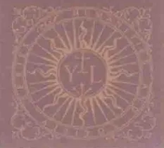
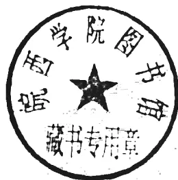
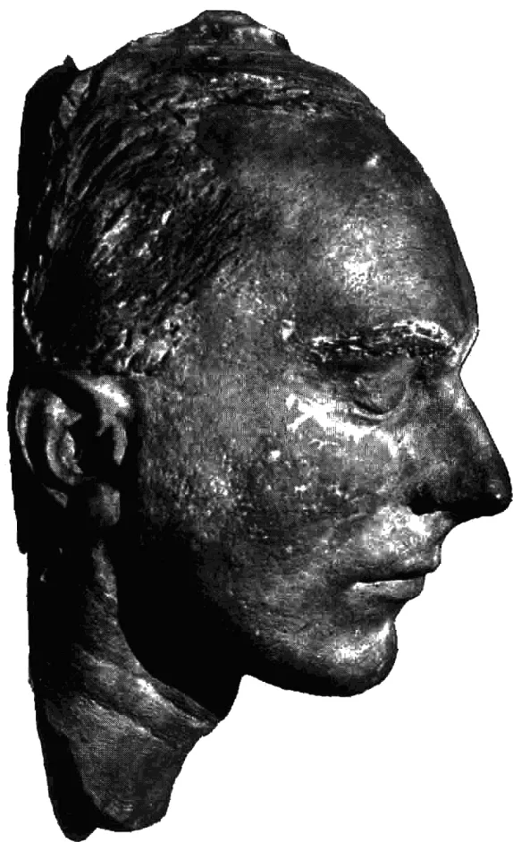

HUMANITIES
AND
SOCIETY

人文与社会译丛
IN SEARCH OF ORDER
Eric Voegelin
[美国]埃里克·沃格林 著 徐志跃 译
刘东·主编 彭刚·副主编
译林出版社
HUMANITIES AND SOCIETY
Eric Voegelin
[美国]埃里克·沃格林 著 徐志跃 译

译林出版社
秩序与历史, 卷五, 求索秩序 / (美) 埃里克·沃格林 (Eric Voegelin) 著 ;
徐志跃译. —南京: 译林出版社, 2018.8
(人文与社会译丛)
书名原文: Order and History, Volume V, In Search of Order
ISBN 978-7-5447-7398-0
I.①秩… II.①埃… ②徐… III.①政治思想史—世界 IV.①D091.2
中国版本图书馆CIP数据核字(2018)第124843号
Order and History, Volume V, In Search of Order by Eric Voegelin
Copyright © 2000 by The Curators of the University of Missouri
University of Missouri Press, Columbia, MO 65201
Chinese Simplified translation rights © 2018 by Yilin Press, Ltd
All rights reserved.
著作权合同登记号 图字: 10-2003-157号
责任编辑 熊 钰
装帧设计 胡 芃
译 校 孙嘉琪
校 对 孙玉兰
责任印制 单 莉
原文出版 University of Missouri Press, 2000
出版发行 译林出版社
地 址 南京市湖南路1号A楼
邮 箱 yilin@yilin.com
网 址 www.yilin.com
市场热线 025-86633278
排 版 南京展望文化发展有限公司
印 刷 江苏凤凰通达印刷有限公司
开 本 880毫米 × 1230毫米 1/32
印 张 5.75
插 页 2
版 次 2018年8月第1版 2018年8月第1次印刷
书 号 ISBN 978-7-5447-7398-0
定 价 48.00元
版权所有 · 侵权必究
译林版图书若有印装错误可向出版社调换, 质量热线: 025-83658316
刘 东
总算不负几年来的苦心——该为这套书写篇短序了。
此项翻译工程的缘起，先要追溯到自己内心的某些变化。虽说越来越惯于乡间的生活，每天只打一两通电话，但这种离群索居并不意味着我已修炼到了出家遁世的地步。毋宁说，坚守沉默少语的状态，倒是为了咬定问题不放，而且在当下的世道中，若还有哪路学说能引我出神，就不能只是玄妙得叫人着魔，还要有助于思入所属的社群。如此嘈嘈切切鼓荡难平的心气，或不免受了世事的恶刺激，不过也恰是这道底线，帮我部分摆脱了中西“精神分裂症”——至少我可以倚仗着中国文化的本根，去参验外缘的社会学说了，既然儒学作为一种本真的心向，正是要从对现世生活的终极肯定出发，把人间问题当成全部灵感的源头。
不宁惟是，这种从人文思入社会的诉求，还同国际学界的发展不期相合。擅长把捉非确定性问题的哲学，看来有点走出自我囿闭的低潮，而这又跟它把焦点对准了社会不无关系。现行通则的加速崩解和相互证伪，使得就算今后仍有普适的基准可言，也要有待于更加透辟的思力，正是在文明的此一根基处，批判的事业又有了用武之地。由此就决定了，尽管同在关注世俗的事务与规则，但跟既定框架内的策论不同，真正体现出人文关怀的社会学说，决不会是医头医脚式的小修小补，而必须以激进亢奋的姿态，去怀疑、颠覆和重估全部的价值预设。有意思的是，也许再没有哪个时代，会有这么多书生想要焕发制度智慧，这既凸显了文明的深层危机，又表达了超越的不竭潜力。
001 |
于是自然就想到翻译——把这些制度智慧引进汉语世界来。需要说明的是，尽管此类翻译向称严肃的学业，无论编者、译者还是读者，都会因其理论色彩和语言风格而备尝艰涩，但该工程却绝非寻常意义上的“纯学术”。此中辩谈的话题和学理，将会贴近我们的伦常日用，渗入我们的表象世界，改铸我们的公民文化，根本不容任何学院人垄断。同样，尽管这些选题大多分量厚重，且多为国外学府指定的必读书，也不必将其标榜为“新经典”。此类方生方成的思想实验，仍要应付尖刻的批判围攻，保持着知识创化时的紧张度，尚没有资格被当成享受保护的“老残遗产”。所以说白了：除非来此对话者早已功力尽失，这里就只有激活思想的马刺。
主持此类工程之烦难，足以让任何聪明人望而却步，大约也惟有愚钝如我者，才会在十年苦熬之余再作冯妇。然则晨钟暮鼓黄卷青灯中，毕竟尚有历代的高僧暗中相伴，他们和我声应气求，不甘心被宿命贬低为人类的亚种，遂把译译工作当成了日常功课，要以艰难的咀嚼咬穿文化的篱笆。师法着这些先烈，当初酝酿这套丛书时，我曾在哈佛费正清中心放胆讲道：“在作者、编者和读者间初步形成的这种‘良性循环’景象，作为整个社会多元分化进程的缩影，偏巧正跟我们的国运连在一起，如果我们至少眼下尚无理由否认，今后中国历史的主要变因之一，仍然在于大陆知识阶层的一念之中，那么我们就总还有权想象，在孔老夫子的故乡，中华民族其实就靠这么写着读着，而默默修持着自己的心念，而默默挑战着自身的极限！”惟愿认同此道者日众，则华夏一族虽历经劫难，终不致因我辈而沦为文化小国。
一九九九年六月于京郊溪翁庄
| 002
| 编者导言····· | 001 |
| 详细目录····· | 009 |
| 序 言····· | 013 |
| 导 言····· | 015 |
| 第一章 开端的开端 ····· | 029 |
| 第二章 反思性距离与反思性同一性 ····· | 065 |
| 后 记····· | 127 |
| 索 引····· | 138 |
对这卷单薄的书来说，并不需要编者全方位介绍。我十二年前为初版所写的引言今天依然足够满足要求，而于尔根·格布哈特很有价值的“尾声”也可以作为参考。但在此应当强调几点，也提请读者注意由《秩序与历史》(1956—1987)的这部顶峰之作所激发的有价值的文献。
首先，沃格林的这本最后之作导致了他的明确突破，即与作为现代哲学形式的启蒙理性主义在理论上的断裂，并代之以沉思性的理性或努斯能力(noesis)，也因此复活了一种求索模式，该模式可以回溯到圣奥古斯丁的《忏悔录》和柏拉图的对话。假如对实在的高度和深度的探索，要在向真理的敞开之中进行，而不被简约论的某种畸变所损害，那么，本书就是对沉思性分析(作为必要的哲学工作的实质形式)的一种说服性分析。换言之，这样的沉思性分析构成了更新的人类事务之科学的核心，而这样的科学是沃格林毕生工作所努力建立和阐发的。一方面，这是抵抗之举；它所抵抗的，是我们的意识形态时代所风行的对实在的截短的、诡诈的描述。另一方面，这是沃格林至少从未发表的《政治科学》的写作起(约1930年)，就有意识地和明确地从事的一项事业，这一事业在其后期著作中显得最为有力。这本小书中，很难说有什么全新的东西；基于“信仰寻求理解”模式的探索结构，被认为是哲学
001 |
求索秩序
1 本身的符号，有其前苏格拉底的起源——一个探索的灵魂对智慧的热爱，而这种探索乃是响应在惊奇中出现的神性呼吁，它朝向的是对明显实在的更为敞亮的参与。沃格林的工作纠正了他所发现的，已经在亚里士多德去世后的一代人那里发生的哲学的“脱轨”，其中包括基督教把“努斯”（Nous）* 变性为“自然理性”（58）。
其次，求索模式的特点因此是这样的：一个肯服从“神秘哲学家”天命的人，去理解所展开的活动和生活，认为它与常识相一致，并且是回答“做一个人究竟意味着什么”的典范。沃格林坚定地认为，所有好的哲学根植于常识，而运用努斯的（noetic）理性的初始维度，是朝向存在根基的张力。因此，正如我们乐意承认的那样，这本书能够而且理应跻身历史上的伟大沉思性经典之列，我们也愿意承认，所有人的共同人性将在灵性生活中找到其活力中心和最深层的满足，所有人都被召唤进入灵性生活，尽管各人对神性呼吁的响应事实上可能是不完全的。呈现在我们面前的沉思的精致，都融入了对日常智性和共同经验的反思性理解。沃格林时常提醒我们，不要停止思索。或者，让我们记住沃格林喜欢的另一个劝告：一本没有高于你知识水平的书是不值得读的。他倾慕T. S. 艾略特的那种情绪：哲学中唯一重要的方法，是要非常有智力。想必是说，即使有智力，也并不意味着把神秘哲学置于在神庇佑下的人类的手足情谊领域之外。艾略特的要求事实上可能暗示着，那些最高调地对沃格林著作表达困惑和不解的人恰恰表明，在所谓受过教育的读者当中，腐败、无能 and 没教养的盛行，反映出他们自身的缺陷。
有关沃格林思想之核心侧面的文献已经相当可观，尤其可以参考Geoffrey L. Price汇编的文献目录Eric Voegelin Classified Bibliography, Bulletin of the John Rylands University Library of Manchester 76, no. 2 (summer 1994); 该文献目录后来在Stephen A. McKnight和Geoffrey L.
* 也有“理智”的译法。——编注
| 002
编者导言Price 合编的 International and Interdisciplinary Perspectives on Eric Voegelin (Columbia: University of Missouri Press, 1997, 189—214) 中得到了更新, 其中还包含了数篇很有价值的论文。就对本书主题具有重要性而言, 我应该提到下列文献: Michael P. Morrissey, Consciousness and Transcendence: 2 The Theology of Eric Voegelin (Notre Dame: University of Notre Dame Press, 1994), esp. chaps. 4 and 6; Glenn Hughes, ed., The Politics of Soul: Eric Voegelin on Religious Experience (Lanham: Rowman & Littlefield, 1999); Glenn Hughes, Mystery and Myth in the Philosophy of Eric Voegelin (Columbia: University of Missouri Press, 1993); Kenneth Keulman, The Balance of Consciousness: Eric Voegelin's Political Theory (University Park: Pennsylvania State University Press, 1990); Barry Cooper, Eric Voegelin and the Foundations of Modern Political Science (Columbia: University of Missouri Press, 1999); Brendan M. Purcell, The Drama of Humanity: Towards a Philosophy of Humanity in History (Frankfurt am Main: Peter Lang, 1996); Robert McMahon, "Eric Voegelin's Paradoxes of Consciousness and Participation," Review of Politics 61, no. 1 (winter 1999): 117—138; Ellis Sandoz, The Politics of Truth and Other Untimely Essays: The Crisis of Civic Consciousness (Columbia: University of Missouri Press, 1999), esp. chap. 10; David Walsh, Guarded by Mystery: Meaning in a Postmodern Age (Washington, D.C.: Catholic University of America Press, 1999); Michael Franz, Eric Voegelin and the Politics of Spiritual Revolt: The Roots of Modern Ideology (Baton Rouge: Louisiana State University Press, 1992); Paul Caringella, "Voegelin: Philosopher of Divine Presence," in Eric Voegelin's Significance for the Modern Mind, ed. Ellis Sandoz (Baton Rouge: Louisiana State University Press, 1991), 174—205。
埃利斯·桑多兹 3003 |This image is a blank white page. It contains several small, dark specks which appear to be scanning artifacts or dust particles. There is no text, handwriting, or printed content on the page.
A black and white photograph of a bronze bust of a Roman emperor, likely Augustus, shown in profile facing right. The bust features a high, textured hairstyle and a prominent, slightly upturned nose. The surface of the bronze is weathered and shows signs of age.A completely blank white page with no visible content, text, or markings.献给最爱的妻子
In consideratione creaturarum non est vana et peritura curiositas
exercenda; sed gradus ad immortalia et semper manentia faciendus.
Saint Augustine, De Vera Religione
在对神创造物的研究中，人不应该去运用徒劳而糟糕
的好奇心，而应该朝着不朽而永恒的事物上升。
——圣奥古斯丁,《论真信仰》
开端与终结——整体和语词——共同语言和哲学家的语言
意向性和启明性——物—实在和它—实在
习俗的和自然的语言——概念和符号
“它”之中的张力——言与荒芜之地
关于常规误解的题外话
(1) 各种投射心理学
(2) 比较宗教
(3) 教义性阐释
真理的社会场域——真理的历史场域——故事的权威性——作为叙事和事件的故事
009 |
求索秩序
挽救符号的题外话
| 010
详细目录
011 |
* 此部分为手稿原有内容,编号与上一节重复,具体解释见正文。——编注
| 012
在我们五十三年的婚姻中，我尝试尽己所能成为我丈夫生命中的一位伙伴。起先这很难做到。因为我没有受过正规学术训练，我不得不去熟悉他的学问和思想世界。在他的指导下，我尝试吸收学问和思想世界所供应的养料，有时候仅仅出于义务，但也兴趣十足。不过，既然我所具备的才能更多是在“充满爱的响应”这一方面，我生活中主要的和整体的兴趣就是我丈夫和他的工作。我常常被称为“他沉默的伙伴”，这称号很适合我，我愿意继续保持这一称号。
只是在朋友们的一再敦促下，我才同意写几行字，陈述一些事实，供对本书起源感兴趣的读者参考。我丈夫开始写本书是在1980年夏天，此前四年里，他在保罗·卡林杰拉的倾力协助下做相关研究；在之后的三年里，他继续广泛阅读，笔耕不止。在1983年末，他的健康状况开始下降了，写作所需要的精力集中也变得越来越困难。那时，他已经把相当一部分手稿寄给了路易斯安那州立大学出版社，总是期待某一天他又能提笔撰著。但是，随着病情恶化，他最终明白，自己来日无多。在最后几个月，我见他几乎每天都会把手稿读了又读，偶尔做些小改动，并且总是向我指出：这将是第五卷。他喜欢他的这部著作，并常常谈起它，他让我知道，他非常明白，这些手稿对他的所有其他著作都是
013 |
13 关键的，在这些手稿中，他已经尽可能在分析上走得更远，并且在可能言说的范围内尽可能说清楚。就出版本身而言，他没有做过任何指示；他知道，他的著作能够得到被他视为朋友的贝弗利·贾勒特(Beverly Jarrett)最佳的和富有经验的照料。
我希望这些说明，对于理解这部显得单薄的著作是有用的。
14
丽希·沃格林
| 014
《秩序与历史》最后一卷导言由别人代笔而不是出自沃格林之手，实非不得已也——沃格林已于1985年1月19日去世。因此，本卷导言不能与先前几卷的导言在理论高度上相提并论。读者必须少些期许。再说，这本书本身就是一个片断，是求索秩序的未完的故事。在此情形下，我们的导言只能是对沃格林探索历史中的秩序（和无序）之路的回忆，以及对他书中的言说的反思性再构，同时我们也会恰当地指出开辟的新领域。
然而，我们面前这本著作的片断性质，不应该让人感觉，本书未经完全深思熟虑或作为最终手稿缺乏润色。实情恰好相反。它是片断性的，只是因为没有把分析扩展到已经列入作者视野的其他材料上，本可更为详尽的理论呈现，也因生命之烛的燃尽而得不到展示。但是，理论呈现本身是基本完全的，而按沃格林所说，求索秩序是个未完的故事，在此最恰当不过。因为，诚如他所强调的，实在和哲学都不能被简约为一个系统。因此，当前著作的形式可以说象征了沃格林对于历史和综合实在的哲学观，他将其视为未完的故事，这故事是神所讲述的，体现在心灵得到特别恩赐的男男女女的反思性语言中，他们在参与性生存（即卓越的人之实在）的兼际（In-Between）* 中，向神一人交遇中出现的
* 也有“居间”的译法。——编注
015 |
求索秩序
真理之奥秘敞开。形式与内容由此互相渗透。
15 对兼际(或柏拉图所说的metaxy)的参与性实在的唤起,是有待回顾的一个要点,因为它在《秩序与历史》系列开篇就得到了表达,并且直到当前这本著作,它依然是沃格林对于(作为区分的经验—符号的)真理的探索的核心。正因此,第一卷引言的第一段如此写道:
神和人、世界和社会,构成一个原初的存在共同体。这个四元结构的共同体既是又不是人类经验的对象。就人们通过参与共同体存在的奥秘而认识这一共同体而言,它是经验的对象。然而,这一共同体并不以外部世界的对象的方式呈现出来,它只有通过参与其中这一视角才能被认识。就此而言,她不是经验的对象。
澄清性的探索在后继段落继续。“参与存在……不是人的部分性介入;他以其整个生存投入其中,因为参与是生存本身。”
这里有一种关于参与的经验,一种处于生存之中的反思性张力。如下命题显示了这种张力的含义:人在其生存中参与存在。然而,这个命题的主语和谓语是阐述生存张力的术语,而不是表达对象的概念,如果忘记了这一点,上述命题的含义就会变得荒诞不经。并不存在“人”这类事物,他对“存在”的参与似乎是一项他也可以置之不理的事业;相反,这里存在的是“某种事物”,他是存在的一部分,他有能力体验自身,进而能够运用语言并把这种经验性的意识用“人”这个名称来称谓。……处于自身的生存的中心,人并不了解自身,而且必须始终如此,这是因为,只有当存在共同体及其在时间中演出的戏剧作为一个整体被了解之后,被称作人的那一部分存在才能被完全了解。人对存在的参与是他生存的本质,这一本质依赖于整体,而生存是该整体的一部分。然而,认识
| 016
导言者与参与者身份的同一性妨碍了获得关于整体的知识，而对整体的无知又妨碍获得关于部分的本质性知识。这种对于生存的决定性核心的无知状况令人不安，还深深地搅扰人心，因为正是从这种终极无知的深处迸发出对生存的焦虑。（《秩序与历史》卷一，1—2）
历经数百页的著述，并过去十八年之后，在1974年出版的《秩序与历史》卷四这一依然是未完成的故事中，沃格林对哲学中的参与及其揭示的真理做了经验性分析。时机就是他所称的“作为兼际实在的人之生存中的爱欲张力的符号化”，那是柏拉图在《会饮》中传达的。
16
女先知第俄提玛将处于爱欲张力中的生存真理传给苏格拉底。……这个真理并不是一条有关实在的信息，而是一个事件，作为过程的实在得以在其中向自身显明。它也不是一条被接收的信息，而是在灵魂“辩证地”探询自身“介于知识和无知之间”的悬置未决状态时，从灵魂的对话中产生的洞见。当这一洞见产生时，它具有“真理”的特征，因为它诠释了被体验到的爱欲张力；但是，只有当人们对这种张力的体验，使这一洞见能在它自己进行的对话式诠释中迸发出来的时候，该洞见才会出现。爱欲张力并不会待在某个地方，等着某个碰巧遇到它的人来加以探究。“主体/客体”的二分法是以外在世界中的人与万物之间的认知关系为模板建立起来的，并不适用于“经验阐明自身”的事件。因此，《会饮》中的苏格拉底认真地拒绝就爱若斯（爱欲）发表一篇“谈话”。相反，他在讲述自己与第俄提玛的对话时，让真理通过这一对话而展开自身。而且他指出，他的讲述恰恰正是开始于此前和阿伽通（善）对话时最后出现的那个问题。苏格拉底的灵魂对话延续了这场会饮中各位同伴之间的对话；反过来说，这种连续性确保此前的对话具有同样的“事件”特征，一个人灵魂中的爱欲张力在这种
017 |“事件”中奋力追求对其自身实在的清晰阐述。因此，灵魂对话并未被锁定为出现在某个人身上的一桩事件，并不是由这个人在该事件发生后，将它的结果作为一项全新学说，昭告人类之中的其他人。尽管这场对话发生在一个人的灵魂中，但它并不是“一个人有关实在的观念”，而是处在兼际之中的一个事件，人在那里与所有人共享的那个过程的神性本原进行“对话”。由于灵性的人所进行对话之中的神性在场，该事件具有了社会和历史维度。苏格拉底的灵魂将同伴们拉进它所进行的对话，而且，不仅是当时在场的那些同伴，还包括所有热切地想要获悉这些对话内容的人。《会饮》将自身呈现为对数年前的一番讲述的讲述；这种讲述活动持续至今。（《秩序与历史》卷四，186）
在呈现兼际之参与性实在的关键维度方面，沃格林的沉思性语言有着势如破竹的力量，这为现在介绍的这一卷做好了准备，也提醒我们与此语境相关的两件事情。第一件事是，对非真理的抵抗是追求真理的特殊根源，这反映在沃格林的哲学及其对经验到的和符号化的实在之高度和深度的探索中。正如我们在眼前的这卷书中将看到的，晦涩难懂的主题和手法深奥的呈现，把语言和理解的界限推到极致，但这并没有遮蔽《秩序与历史》之整个事业的生存论冲力，以及作者为了真理所做出的英雄般努力。沃格林在1973年说得很清楚：“我的工作动机很简单；它们源于政治处境。”沃格林在许多地方阐述柏拉图哲学中对于非真理的抵抗（比如，在《秩序与历史》卷三所分析的《理想国》中对智者社会的抗争），而且也反映在20世纪20年代和30年代期间，在欧洲的堕落语言和意识形态政治的腐朽中，沃格林本人开始的力图寻找真理的历程。简要地说，前文所说到的“政治处境”，就是斯大林、希特勒、墨索里尼的当权，以及使得这些人作为代表性人物当道的社会背景和知识背景。再说，虽然这些“赝品”人物退出了历史舞台，但促成他们
| 018
导言开始发达的长期因素并没得到消除。因此,恢复生存之灵性根基的工作就是一种对策,用以对抗生存的退化,因为被意识形态畸变的意见氛围,以及对不同意见的强力消除,急剧强化了这种退化。这一工作是项艰巨的任务,既有历史理解的迫切性,也有当前理论的紧迫感。这种紧迫感被令人难忘地表达于《秩序与历史》的“序言”中,沃格林在文中不仅说到了在追问秩序方面“对以往成就的忘却”,而且严厉指出,“在当代世界,变形的(metastatic)信仰是无序的显著来源之一,即便不是首要来源”,而且还说道,“理解此现象并在它毁灭我们之前找到解决方法,是关乎我们所有人生死存亡的事情”。他指出,哲学探究是抗击时代之无序的温和方法之一,他写道:
意识形态是违抗神和人的生存。如果我们想要用以色列的秩序语言,意识形态是违反第一诫和第十诫;如果我们想要用埃斯库罗斯和柏拉图的语言,那就是nosos,即灵魂的疾病。通过对作为存在秩序之源的神性存在的爱,哲学就是对存在的爱。存在的逻各斯是哲学探究的恰当对象;对于有关存在秩序的真理的探寻要能展开,就离不开对非真理的生存模式的诊断。秩序的真理不得不在持久地对抗其堕落的斗争中一再地被获得;朝向真理的运动是从一个人明白他生存于非真理中那一刻开始的。在作为生存方式的哲学中,诊断功能和治疗功能不可分离。(《秩序与历史》卷一,ix—xiv)
因此,《秩序与历史》被认为是对乱世的治疗,旨在帮助建立一座“在时代之无序中的秩序”小岛。
反映兼际之参与实在的那段话唤起的第二件事情是神这一符号的首要性。神是该卷正文的第一个词,在前面引用的对《会饮》的分析中,这个词同义地作为“神性根基”和“灵性的人”出现。正如我们刚才看到的,哲学本身是“对存在的爱,来自对作为秩序之源的神性存在
18019 |的爱”。在完整的人的转向中，沃格林远离意识形态欺骗的阴影，转向吸引他的真理之光，而个体对于无节制地剥夺个人生存的国家社会主义的非真理的抵抗的紧迫性，要求恢复古典的和基督教的人学，这是他展开现代性批判，并让自己重新朝向实在的道路。正如柏拉图的洞穴比喻所隐含的召唤，对神的兴趣主要是哲学的和生存论的，而不是“宗教的”，即在教义、教条和信经的意义上。在1924年首次到美国旅行时，沃格林就发现，“超越政治真理之总括性主张”这一呼吁揭穿了“自然规律和自然的神之规律”的谎言；他把在美国思想中所暗示的苏格兰启蒙运动的常识哲学，与包含在柏拉图和亚里士多德著作中的希腊理性之洞见相联系，而正是柏拉图和亚里士多德把超越的神性根源、美、善以及第一推动者唤起为存在和秩序之源。在20世纪30年代初，沃格林就在维也纳开始学希腊语，为的是阅读关键的原始材料；在逃离纳粹并永久定居美国之后，他随亚拉巴马州塔斯卡卢萨市的一位拉比学习希伯来文，为的是阅读《旧约》。
早在《秩序与历史》开始动笔之前的1943年，沃格林在写给好友舒茨的信中就大力强调，（相比于胡塞尔的内在论）“有关超越的哲学问题是哲学的决定性问题”〔《回忆》（1966），36〕，在十年后同样给舒茨的信中，他重申了这一观点，具体是在回答有关他的新书《新政治科学》的问题时写下的：
现在回答你的关键问题：仅仅在基督教的框架内，理论是否可能？非常明显，这不可能。希腊哲学是前基督教的，但一个人也完全能像柏拉图主义者或亚里士多德主义者一样从事哲学。在我看来，哲学工作在本质上是解释超越经验；哲学经验，作为历史事实，就已独立于基督教而存在，同样毫无疑问的是，今天的人也有可能不靠基督教而做哲学工作。但这一基本的、毫不含糊的回答必定在一个关键点上合格的。区分的经验有不同程度之分。我
19
| 020
导言将之作为做哲学工作的一个原则，即哲学家必须在他的解释中包括区分程度最大的经验……而伴随着基督教，发生了一个关键性的区分。[引自 Peter J. Opitz and Gregor Sebba, eds., The Philosophy of Order (1981), 450]
这就将我们引到了眼前这本书。因为《秩序与历史》的结束卷是用来阐明超越经验的，在之前各卷和其他不包括在本卷的论文和著作中，沃格林也广泛讨论过超越经验。毫无疑问，沃格林依然忠实于那个数十年前向舒茨表达过的观点：“哲学工作在本质上是解释超越经验。”至于这是否完成了这项工作和运用努斯的科学（构成有关意识、政治和历史的新哲学），则是一个巨大的主题，最好留待评论家在其他地方来处理。简要说，既然超越经验同时构成哲学的本质和人之生存及历史之秩序的本质，那就依然有待以具有理论洞察力的方式来表明，这些经验究竟是什么。这是本卷的根本任务。我用寥寥数语来澄清沃格林在最终履行该项任务时所做惊人努力之语境，由此把本篇导言归结到运用努斯的人类事务之科学的顶点。可以说，该科学在诸重要方面巧妙地修正并批判性地补充了传统哲学的存在论和认识论。
《新政治科学》乃是《秩序与历史》的绪论，该书出版后曾引起广泛的不安，其中有一页特别醒目，也预示了作者最后几十年工作的沉思专注点，尤其是伴随《求索秩序》所结出的硕果。在讨论追求生存上的确定性的动机（这可以部分解释现代灵知主义者的一个过失，即把基督教终末论信仰的符号化表达谬误地内在化）时，沃格林反思渴求大规模确定性的欲望，以及它在信仰—恩典关系的细微纹理中相对的缺席。他写道：
不确定性是基督教的重要本质。在一个[由古老的宇宙论神话宗教提供的]“充满诸神的世界”中的确定感，伴随诸神自身的离去而丢失；当世界去神性化，与超越世界的神的沟通被简约为纤
021 |求索秩序
20 细的信仰纽带，根据《希伯来书》11:1，它是所望之事的实底（或本质），未见之事的确据。根据存在论，所望之事的实底（或本质）除了在信仰中被找到，别无地方可找；而根据认识论，未见之事根本没有确据，有的是这一信仰。纽带确实是纤细的，可能很容易拉断。灵魂向神敞开的生命，盼望，周期性的枯干和迟钝，亏欠和沮丧，悔悟和悔改，遗弃和不断希望，爱和恩典之无声的扰动，在一种即得即失的确定性之边缘的战栗——这一织体之轻，对那些渴望大量地拥有经验的人来说，也许是太沉重的负担。（《新政治科学》，122）
一条对可被识别为“经验心理学”（而不是信仰的神学或教义学）的颇具防御性的注脚，是沃格林这几行文字的主题，或者更宽泛地说，是当前这部著作的主题。这里暗示，基督徒的信仰根本就没有确定性的，对尊崇教条的基督徒来说，此暗示会引发他们愤怒的回应，1952年《新政治科学》出版之后，情况就是如此，后来又出现过一些相似情况，比如，《人居领地时代》（The Ecumenic Age）*中对保罗信仰的分析（《秩序与历史》卷四，239—271）。对这个时代棘手的“意见统治”做出贡献的，不只是灵知主义—意识形态，还有虔诚信徒，而沃格林的目的，即试图通过不偏不倚的和探索性的分析来重新把握文明的经验基础，显然在不同程度上使他成为所有醉心于权力斗争的党派的手，当他不愿意被他们雇用时，他就成为他们冷嘲热讽的对象。
在上面最后的这些反思中，哲学家这一职业的个人的、社会的和历史的维度，以恰当的方式呈现在了我们面前。当一个人不论在何种环境下专注于关键的形成性经验—符号化表达（那是在被称为历史的兼际之人—神实在的时间—永恒中已经发生的），那他就是经验—
* 《人居领地时代》即《秩序与历史》卷四，已出版的中译本，译为《天下时代》（译林出版社，2018）。——编注
| 022
导言表述一自身的处所(现在或过去),他既受制于又不受制于他的个体认同、种族和民族的成员身份,以及他生活的历史环境。追问的悖论,正如用两个或三个连字符串起的术语所示意的,构成了下面要读到的篇章的主要议题。“客观地”看待实在的阿基米德支点(Archimedean point,即能够统筹事实与理论的关键点)无处可寻,与此相称的是,即使是努斯真理和灵性真理的那些最为敏感和敏锐的探索者,在他们不可避免的参与性的和具体的实在中,纯粹的经验—符号同样不可及。
在这部篇幅短小的收尾之作中,沃格林并没有放弃这项宏大事业——阐述关于秩序与历史的理论。但在形成该理论的方式上,沃格林的思想也许会让读者吃惊。在《秩序与历史》前三卷(1956—1957)和第四卷(1974)相隔的十七年间,早期工作(甚至可以回溯到1928年的第一本书)所预设的深层意识哲学,一直要到1966年的《回忆》才显得完全成熟。在卷四出版后的十三年间,先于该卷或与之同时的其他手稿和出版物已经发展了沃格林在此处完成的重要探问线索。这些文章中,最重要的是《开端与超越》(写于1975—1978年间,是未完成也未发表的十七页打印稿),数篇出版的文章,如《不朽:经验与符号》(1967)、《历史上经验与符号化的对等物》(1970)、《福音与文化》(1971)、《论黑格尔:对巫术的研究》(1971)、《理性:古典经验》(1974)、《往事的回忆》(1978)、《极端的智慧和魔术:一种沉思》(1981),还有临终前听录的告别文《那被称为神的》(1986)。1这些文章,与另外若干文章一
1 沃格林到1981年为止的著述的文献目录,可见于Ellis Sandoz, The Voegelinian Revolution: A Biographical Introduction (1981; 2nd ed., New Brunswick: Transaction Publishers, 2000)。《那被称为神的》(“Quod Deus Dicitur”)发表于Journal of the American Academy of Religion 53, no. 3 (1985): 569—584,并补入了未发表的《开端与超越》的十余页内容。文中提及的几篇沃格林文章来源如下:“Immortality: Experience and Symbol”, Harvard Theological Review 60 (1967): 235—279; “Equivalences of Experience and Symbolization in History”, in Eternità è Storia: I valori permanenti nel divenire storico (Florence: Valecchi, 1970), 215—234[重印于Philosophical(转下页)]
023 |求索秩序
22 起，被重印收录于《沃格林全集》卷十二和卷二十八，其中有些文章一度是他准备收入本卷的；但随着作者本人有关此书的想法的变化，意向也变了，假如沃格林本人活到亲眼看到本书出版，这书是否是这个样子，我们也无从确然得知。不过，按照这里出版的手稿来看，《开端与超越》和《极端的智慧和魔术：一种沉思》，以及《那被称为神的》，显然属于同一种沉思水平。
正如我们回顾到的，沃格林三十多年前开始探索，希望通过研究秩序的历史来找到关于秩序与历史的理论，而当他确信“超越经验之解释是哲学工作的核心”时，他就已经是在着手探索这种理论了。正如第四卷所着重展示的那样，沃格林的分析，谨慎地测定了权力政治、历史编纂与精神突进所具有的多层次的实在（这三者在实在的进程中被无可避免地绑定在了一起，并且要求在一种关于意识与历史的哲学中得到均衡的处理），他也适当加强了这些分析的丰富性与复杂性；现在这一问题的核心，仍然属于超越的经验。一种阐述透彻的理论已经以一种强有力的方式得到呈现，而辩论所用的术语也随之有了很大改变，一如它们曾随着该著作最初的概念被放弃而被改变一样。普世人类之历史的多元领域迫使原计划的六卷本著作被放弃，该原计划反映的是历
(接上页) Studies 28 (n.d.): 88—103 ]；“The Gospel and Culture”，in Jesus and Man's Hope, ed. Donald G. Miller and Dikran Y. Hadidian, 2 vols. (Pittsburgh: Pittsburgh Theological Seminary Press, 1971), 2: 59—101；“On Hegel: A Study in Sorcery”，Studium Generale 24 (1971): 335—368 [ 重印于 J. T. Fraser et al., eds., The Study of Time (Heidelberg, 1972), 418—451 ]；“Reason: The Classic Experience”，Southern Review n.s. 10 (1974): 237—264；“Remembrance of Things Past”，in Anamnesis, ed. and trans. Gerhart Niemeyer (Notre Dame: University of Notre Dame Press, 1978), 3—13；“Wisdom and the Magic of the Extreme: A Meditation”，Southern Review n.s. 17 (1981): 235—287。此外，还有 “Response to Professor Altizer's ‘A New History and a New but Ancient God?’”，Journal of the American Academy of Religion 43 (1975): 765—772。所有这些文章都重印于 Published Essays, 1966—1985, ed. Ellis Sandoz, vol. 12 of The Collected Works of Eric Voegelin (1990; available, Columbia: University of Missouri Press, 1999)。这套全集后文将简称为 CW。
| 024
导言史及其展开的意识之线性概念。1952年的《新政治科学》所宣布的理论区分之诸阶段，即从宇宙论的，演进到人类学的，再到救赎论的，已经是1956年问世的《以色列与启示》的背景。启示经验和灵性经验之间的显著区别，在《旧约》与基督教中有所反映，其体现是寻求着人的神；而哲学经验与运用努斯的经验之间的显著区别，所强调的是寻求着神的人；相比之下，前一种区别就不是那么引人注目了。沃格林发现，启示和理性并不能被如此划分，因为理性本身其实是希腊哲学家心中的一个启示，尤其是在柏拉图那里，而且，运用努斯的分析对于《新约》和哲学来说，乃是共通的。再则，如我们注意到的，尽管该书在第一段就对此发出了警告，但有关物性的语言和认知主体把握客体的语言（即使是从隐喻层面理解）也依然大量存在于某种分析之中，不论是在人寻求神的时候，还是在神寻找人的时候，这种分析习惯性地吧内在的和超越的实在等同为实体。“意向论的谬误”依然潜伏着，打算伺机扭曲经验。要克服此谬误，就必须发展意识哲学，并在其中分析经验之存在论维度 23 和认识论维度。
但是，从何处着手，如何着手？只有在具体的人的具体意识中，在那些人身上，经验开始得到表述。沃格林一再强调，正如前文引用的对《会饮》的评论那样，“根本不存在这样的爱欲张力：它在某个地方随意躺着，有待被某个不巧撞上的人所研究”。该段剩下的内容也值得参考。在运用努斯的科学的经验证据中，存在着对于实在的那种批判性反思理解的唯一而珍贵的基础，这种理解可在被称为“哲学”的那种富于沉思性和想象力的幻象中达成（如果是按柏拉图的理解来使用这个术语的话）。在《开端与超越》一文中，在考虑了包括来自吠陀传统的、哲学的、先知的和使徒的众多默想性视界的具体例子之后，沃格林归纳道：
我已通过重大区分时期的一些代表性例子，追踪了语言的
025 |意识。意识有多种变体，从进入能照亮自身的言语的概括性（comprehensive）实在在吠陀传统中的爆发，到来自心灵兼际的词语的出现，再到意识自身在先知与神的亲身相遇中的出现，以及在《圣经》中的想象性畸变（以模棱两可的言语的形式出现），最后是基督的显现，与之相伴的是这样的对人的洞见：通过语言之真理，实在及其神性奥秘变得明晰，在这一过程中，人是行动着的、受苦的和最终走向胜利的伙伴。尽管就笼统与区分的程度而言，上述变体涵盖面广，但有过经验的灵性论者都一致认为，语言具有神圣性，在语言中，神性实在的真理得以表述。经验和语言真理都作为同一过程的不同部分而相伴相随，这一过程的神圣性源自其自身之中的神性显现之流。现在我们将有可能较为精确地明白某些洞见，它们是在经验上自我呈现的过程所隐含的。
经验之恰当理解的最严厉的阻碍……是实体化嗜好。感性知觉的世界的客体对象，已经如此强有力地变成“事物”的模型，乃至不经意间突入到非对象性经验的理解，也就是说，那些经验不是关乎客体对象，而是关乎实在之奥秘，在此实在之中，外部世界的客体是和其他“物”一起被发现的。确实，神性实在的经验发生在人的心灵中，但人又是稳固地根植于其处在外部世界的身体，但心灵本身却存在于兼际，处于朝向存在之神性根基的张力之中。心灵是神性实在的感觉中枢和神之启明性显现的处所。而且，心灵还是总括性实在向心灵自身启明的处所，并孕生了语言，靠着这语言，我们言说并把握外部实在及其开端与超越的奥秘，还用它来把握参与式心灵，在这样的心灵中，经验发生并孕生其语言。正是在经验中，不仅神性实在的真理变得明晰，而且经验在其中发生的世界之真理也同时变得明晰。“外部的”或“内在的”世界，若不是借助其与乃是“内部的”或“超越的”某种“有”（something）的关系而被认识，就根本不存在。诸如内在的、超越的、外部的、内部
24
| 026
导言的、此世与他世之类的术语，并不表示客体或它们的性质，而是一些语言指数，它们产生自兼际，且因这样的事件而起：为着总括性实在及其结构和动力机制，兼际变得明晰。这些术语是阐释性的，而不是描述性的。当灵魂在意识的兼际中探索神性实在的经验，并试图找到表述其阐释运动的语言，这些术语标示灵魂的运动。因此，语言及其由上述事件孕生的真理并不指涉一个外部的客体，而是当实在在人的意识中变得明晰之际的语言和真理。在另一个场合，我已通过如下表述关注过这一问题：启示的事实是其内容。（参看《新政治科学》，78）
既然经验除了自身之外没有内容，当意识区分到足够程度，以至于让其自身的运动变得明晰之际，“实在突入其真理的语言”这一奇迹就将进入注意力的中心。在历史上，有关实在的真理之语言倾向于被认知为实在中的语言真理。此过程中的一个重要阶段以《创世纪》的宇宙起源说为代表。创世故事让有着从无机界、经由动植物生命、再到人的存在层级的宇宙，通过被神说出而进入生存。实在是以神的创世语言说出的故事；在其中的一个故事角色身上，即在以神的形象创造的人身上，实在以创世故事的真理来响应创世语言的奥秘。或者倒过来从人这一边来说，神性实在必须被比拟性地象征为神的创世语言，这是因为，经验为了其表达而孕生出宇宙起源神话的想象之言。实在是神性的神话创制之举，当此举唤起来自人的经验的响应性神话，实在之真理也就变得明晰。在真理的语言和实在中的语言的真理之间的完美关联……是创世故事的区分性标志。2
2 “The Beginning and the Beyond”, in What is History? and Other Late Unpublished Writings, ed. Thomas A. Hollweck and Paul Caringella, vol. 28 of CW, 184—186.
027 |求索秩序
25 这段引文也许会为读者提供阅读本书的视角，帮助读者进入本书，即便你是第一次接触沃格林的著作。本书的开篇是关于“开端的开端”的沉思，随后便转向对《创世纪》的探索，并展开对意识之悖论的分析，以及对意识—实在—语言之结（complex）作为被想象性地符号化的经验之织体的分析，这部分特别注意到了真理及其畸变。此后，“反思性距离与反思性同一性”这部分则考察了现代哲学中存在的畸变力量和生成性力量，尤其注意黑格尔以及德国意识革命；然后转向赫西俄德和柏拉图寻求生存论意识的语言的努力，特别是《第迈欧》所呈现的。
沃格林发现和润色着在上千年中得到表述的真理内容，他所从事的是这样一种活动：随着实在在我们自身的当下中变得明晰，所用术语必须被反思性地应用到自身。沃格林曾如此向我描述过他的工作：“从我第一次接触《不知之云》这样的著作起……大问题[一直就是]：不要停留于可以被称为古典奥秘论的领地，而是要为社会和历史去恢复兼际问题。”3在卷五的这一简短导言中，如果沃格林的恢复性工作的最终成果能够多少为人所知，那么我的目的也许就达到了。当然，这些导论文字的有效性也仰赖于我与作者的合作——我们试图记住不该忘却的事情。*
26
埃利斯·桑多兹
3 沃格林于1971年12月30日写给桑多兹的信，见于Eric Voegelin Papers, Hoover Institution Library, Stanford University, box 27.10。
* 这里，桑多兹教授是指沃格林口述的《自传性反思》，收入《沃格林全集》卷三十四，参见华夏出版社于2009年出版的中译本。——译注
| 028
当我在一张空白纸上写下这些词，我就已经开始了一个句子，这个句子一旦写成，就将是一章的开端，而这一章意在论述开端的某些问题。
这个句子写完了。但它对不对呢？
在读完这一章，并能判断它是否确实是关于这第一个句子的一篇详细阐述（如该句子字面所示）之前，读者并不知道这句话是否对。此时此刻，我也不知道，因为这章还没被写下来；尽管我对其构造有个大致的想法，但我从经验知道，在写作继续的同时，新的想法会习惯地出现，迫使其构造发生更改，并使得开头与后文不相符。除非我想享受斯特恩式*意识流的愉悦，故事在结尾前就根本没有开头。那么，何者为先：是开头，还是结尾？
开头和结尾都不为先。问题反而指向整体，被称成“章”的东西，它有多个维度。这一整体，作为写下或打印的一组字构成的纸页，在空
* Sternean, 与 18 世纪英国小说家劳伦斯·斯特恩的小说叙事有关, 他被称为意识流小说的先驱。——译注
029 |
间上有一席之地。然后,在被写下或被阅读的过程中,它还有一个时间维度。最后,它还有一个意义维度,既不属于空间也不属于时间,而是属于追求真理的生存过程,那是读者和作者都投身其中的过程。那么,就这个有着时空和意义维度的整体而言,如何回答“何者为先”的问题?
作为文字单元被称为“章”的整体,也不是答案所在。靠着一本书中的一章的特点,该整体超越自身而指向与读者和作者间沟通有关的诸多复杂问题。书是要被读的;这是由思想和语言、写作和阅读所构筑的广阔的社会场域中的一个事件,而且,这个场域中的成员相信此乃要事,因为关乎他们在真理中的生存。整体不是绝对意义上的开始;除非它在生存关怀的共契(communion)中有其功能,它就根本不是任何事物的开始;作为一个社会场的关怀共契,其生存依赖于通过语言来进行的关怀的可沟通性。我们(读者和我)返回到语词,是因为在我开始写下它们之前,它们就已经开始了。语词终究是在开始之际吗?
是的,为了传递其意义,章必须是可理解的;它必须用读者和作者所共同使用的语言写下,在本书这个例子中,则是英语;这语言还必须按照词汇用法、语法、造句、拼写、分段等当代标准,以免读者在努力理解该章的意义上遇到不恰当的障碍。但这还不够。因为此章不是关于熟悉的外部世界对象的信息;相反,它力图传达一种追求真理的参与之举。该语言除了满足“在‘指涉客体’这样的日常意义上具有可理解性”这一标准外,还必须具有“在生存性求索这一领域中传达意义”这种意义上的共通性;它必须有能力传递一个哲学家的经验、沉思和阐释性分析之意义。此种哲学家的语言,尽管不是从当前一章开始的,但也一直被千年来无数哲学家追求真理的历史所构造,这一历史在过去一直没有在某个时刻停顿过,而是一直延续到当前读者和作者之间的努力。因此,由哲学家的语言所构建的社会场域,并不限于同时代人之间的口头沟通和书面沟通,而是在历史上延伸到遥远的过往,通过现在,进入未来。
| 030
第一章 开端的开端到此为止,“开端”从此章的开头漫游到其结尾,从一章的结尾到其整体,又从整体到作为读者和作者之间沟通手段的英语,从英语中的沟通过程到千年求真过程中的参与者当中流通的哲学家语言。但开端的道路依然还没有抵达作为其真正开端的可理解的结尾;因为“哲学家语言”的出现提出了一些新问题,它们起先看起来很像一组问题,但其实是一个问题。“哲学家语言”确有特殊之处:为了可理解,该语言不得不以自古以来发展起来的众多族裔的、帝国的和民族的语言中的一种来说出,尽管它并不显得与其中任何一种等同;而且,尽管哲学家语言已经通过很多种古今语言被说出,而且不等同于其中任何一种,但它们在所用语言中留下或正在留下的意义的特殊痕迹,仍有待在当下的章节中被理解;但老问题依然存在,在千年进程中,真理之求索得以发展并依然在发展属于自身的语言。实在中的什么结构,会在被经验时,引发“语言”一词的双关(equivocal)用法?
双关是被意识及其与实在之关系的悖论结构所引发的。一方面,我们把意识说成是处于身体生存中的人身上的某种东西。就此具体身体化的意识而言,实在占据着被意向的一个对象的位置。再者,借着其作为处于身体中的一个意识所意向的对象的位置,实在本身获得了有着外部物性的隐喻性触觉。我们把此隐喻用在这类短语中:“意识到某事物”,“记得或想象某事物”,“研究或探索某事物”。所以,我把意识的这种结构称为它的意向性,而将相应的实在结构称为其事物性(thingness)。另一方面,我们知道,位居身体的意识也应该是真实的;而这种有具体所处的意识并不属于另一种实在,而是同一实在的一部分,这个同一个实在在其与人的意识的关系中移到了物一实在(thing-reality)的位置。故此,在此第二层意义上,实在不是意识的一个对象而
031 |求索秩序
是某种“有”(something),在其中,意识是作为存在共同体中的诸伙伴间的参与事件而出现的。
29 在复杂经验中(眼下就是在表述的过程中),实在从被意向的对象这一位置转移到主体的位置,而随着意识因其真理而变得明晰(或敞亮),意向着客体的主体意识则转移到主体“实在”中的一个谓语(predictive)事件这样的位置。因此,意识不仅有意向性这一结构性层面,而且还有启明性这一结构性层面。再则,当意识被经验为实在中的参与性照亮事件,使得诸伙伴都被总括到此事件中时,那么,意识所处之位置就是总括性的实在,而不是处于诸伙伴之一的位置;意识有这样一个结构维度:靠此维度,意识不属于人之身体生存,而属于实在(在这一实在中,人和其他伙伴的存在共同体及其相互间的参与性关系得以发生)。假如空间隐喻依然被允许使用,那么意识的启明性的位置,则是在人的身体性生存中的意识和在意识之物性模式中被意向的实在“之间”的“某处”。
对刚才分析的结构,当代哲学话语根本就没有得到常规认可的语言可用。因此,要指称意识的“之间”地位(between-status),我得使用希腊用语metaxy,那是柏拉图在对结构的分析中作为专门术语提出的。要指称总括存在中的诸伙伴(即神与世界、人与社会),就我所知,还没有其他人提出过专门术语。但我注意到,当哲学家在对其他主题的探索中碰巧进入这一结构时,他们习惯于用一个中性的“它”(it)来指称这一结构。他们所说的“它”是神秘的“它”,它在诸如“下雨了”(it rains)这样的日常语言的短语中也会出现。我应该由此称之为它一实在(It-reality),以区别于物一实在。
“语言”一词的双关用法,指向的是一种不得不如此使用以表达自身的实在经验;这种探寻随后进一步指向作为孕生了双关的经验的结构。但是,这一回答是否离“开端”更近了一步?初看之下,这回答很像是双关的扩展。存在着一种具有双重结构意义的意识,它
| 032
第一章 开端的开端可以被区分为意向性和启明性。存在着一种具有双重结构意义的实在，它可以被区分为物—实在和它—实在。于是，意识是一个主体，意向着实在并将实在作为客体，但同时，它又是总括性实在中的“有”（something）；而实在是意识的客体，但同时又是主体，意识有待被其称谓。在此双关的“结”（complex）中的何处，我们可以找到一个开端？
在这个结的某一部分中，确实难以找到开端；只有当悖论被严肃地看待成能把结建构为一个整体的“有”，开端才会显示自身。然而，这个结，正如双关的扩展所表明的，包括语言和真理，并与意识和实在连在一起。根本不存在自律的、毫无悖论的语言，可以在人想要指称实在和意识的悖论结构时，就能被随手用作标记体系。词语及其意义恰恰是它们所指涉的实在的一部分，正如万物也是总括性实在的伙伴；语言在这样一种求问的悖论中参与，因为，正是借助把真理作为意向之物来追求，求问让实在因其真理而变得明晰。语言的这一悖论结构导致了某些特定问题、争议和术语上的困难，它们成为自古以来哲学家话语中的常项，但又始终无法达成满意的结论。
其中一个常项，就是“语言是‘习俗的’还是‘自然的’”这个重要问题。推动习俗论者意见（当今较为风行）的，是意识的意向性，以及相应地视词语为语音记号（多少有些随意地被选来指涉物的）的物—实在。而推动自然论者的，则是这样的感觉，即记号必定有某种实在是它们与所指涉的事物有共同之处的，否则，它们作为有着确然意义的记号，也许就是不可理解的。这两种意见的基础都不牢靠，因为追随这些意见的人在语言被创生时都不在场，而那些在场的人没有就此事件留下任何记录，只留下语言本身。按我对问题的理解，这两群人的动机都是正确的，他们试图探索语言及其意义之起源所附带的条件，这也是正
033 |求索秩序
确的；但两者又都错了，这是就他们全都忽视一个事实而言的：结构在实在中的显现——不论它们是原子、分子、基因、生物物种、种族、人的意识，还是语言——是一个难以解释的奥秘。
另一个这样的常项是“概念”(concept)和“符号”(symbol)的区分，人们难以把确切的含义分配给这些术语。自柏拉图认识到这个问题起，它就一直困扰着哲学家的言说。在柏拉图自己的哲学实践中，他靠着同时使用概念分析和神秘符号化表达这两种在真理的追求中互补的思想模式来处理这个问题。在自文艺复兴以来的所谓的现代世纪里，这些困难因着自然科学和历史科学的平行发展而进一步加剧。一方面，诸般自然科学的推进使得人们的注意力强烈地聚焦于这些学科提出的概念化的具体问题，而且，这种倾向是如此强烈，以至于这样的聚焦已经成为某种力量，它激励着那些想让数学化科学的结果和方法来垄断“真理”和“科学”这些术语的意义的宗派主义者，而这种运动仍在社会上不断扩大。另一方面，历史科学同样令人震惊的进展，则让人把注意力集中于符号化表达问题，这是由古代文明及其神话的发现，以及对在同时代部落社会中找到的思想模式的说明所提出来的问题。在这两大焦点背后，意向性和启明性的经验，物—实在和它—实在的经验，都再明显不过了；而且，这两大焦点的代表人物在真理追求上也是对的，只要他们自限于将他们的指涉所主导的结构也包含其中的实在的领域内；但是，当他们专注于某个真理的神奇之梦时，他们都错了。因为那个真理的抵达，只能依靠专注于概念化的科学之意向性，或者是神话和启示的符号之启明性。
从此处的分析，意识—实在一语言之结就出现了，它作为一种“有”(something)是一个单元，其特点的获得是通过另一种“有”的无处不在，后者被称为意向性和启明性的悖论，或物—实在和它—实在的悖论。然而，在何种意义上，这一“结”是我们(读者和我)正在追求但还没有找到的开端？像“结”、“悖论”和“无处不在”这样的术语到底是
| 034
第一章 开端的开端什么？它们是意向着物—实在的概念，还是表达它—实在的符号？或者两者都是？或者，它们也许只是空洞交谈的只言片语？这些东西，除了在当前分析的幻想中以外，真的可以作为一个有意义的结存在于另外某处吗？要平息这组问题，我们所需要的是文献记录，一个具体的个案，而且该个案可以清楚地表明结单元中诸结构的共存，以及此结作为一种“开端”的意义。为此，我将展示一个古典个案，在其中，“开端”恰恰是以本分析下的结构之结作为其开端，这个个案就是《创世纪》1。
在《创世纪》1: 1中，我们读道：“起初（在开端）神创造天地。”还能有什么比创造一切的原初之举更接近真正的开端呢？但什么是创造呢？当神创造时，他是如何进行的呢？《创世纪》1: 3给出这一信息：“神说：‘要有光！’就有了光。”或者，在更为字面的布伯—罗森茨威格的译文中是：“神说：光来！光就成了。”在这句话中，当借着叫光的名字，神性命令叫光出来，使之成为生存的启明，光的实在就出现了。看起来，说出的言不只是一个指称某物的标记；它是实在中的力量，靠着命名诸般结构而唤起实在中的这些结构。言的这一神奇力量甚至在《创世纪》1: 5（布伯—罗森茨威格的译文）中可以更清楚地被辨识出：“神对光叫道：昼！又对暗叫道：夜！于是就生成了晚上和早晨：头一天。”
不过，具有创造力的言的力量，还不是我们正在追求的真正开端；因为对创造过程的描述在本质上是不完全的。这描述有力地提出了如下这些问题：神性命令是向谁发出的？发出这些命令的神是谁？或者说，在说出的言唤起该言说出的结构之处的实在，是怎样的一种实在？在由这些问题所创造的情形中，诉诸“启示”之类的神学概念也无济于事，因为即使一个启示也必须作为写下或说出的言（即被听见和看见的言）才有意义，即便言所启示的消息是可理解的。我们倾向于假定，《创
035 |求索秩序
33 世记》1的作者是像我们一样的人；他们也不得不像我们一样以同样的意识面对同样的实在；在他们追求真理的过程中，当他们在不论什么材料上写下他们的言语时，他们不得不提出和处理我们在写下我们的言语之际所面对的同问题。“在说出的言唤起该言说出的结构之处的实在，是怎样的一种实在”这个问题所产生的语境中，他们不得不找到足以表达我所说的它——实在之经验和结构的语言符号。他们是如何做的？答案在《创世纪》1: 2被给出：“地是空虚混沌；渊面黑暗；神的灵（呼吸）运行在水面上。”在空虚之上，在荒芜之地上，运行着神（或很可能是复数的elohim）的呼吸或灵，即ruach，也许它就像风暴。因此，它——实在被符号化为灵性意识的强烈运动，在一种无形的或不具形式的反向运动上施加形式，作为灵气的、构形的力（rauach，在后来的希腊语中被译为pneuma，灵气）和一种至少是被动地抵抗着的反向力之间的张力。再则，在“它”中的这种张力，显然不是在人之意识因追求真理而与实在搏斗的过程中的张力；相反，此张力被认作非人的过程，要被符号化为神性；可是，这种张力还不得不传达出一种类似于人的过程的色彩，因为人经验到他自身的行为，诸如对真理的追求，并将其作为“它”的过程中的参与行动。当《创世纪》1的作者写下这些开头的文字时，他们意识到，开端乃是在“它”之神秘开端中的参与行动。
在我们时代的知识氛围下，被经验到的意识的张力，它们透过符号得到的表达，以及它们区分性的探索，都容易遭到误解。此处提到其中一些误解的做法，或许是明智的；提防这类误解，才有可能厘清当前有待进一步推进的追问结构：
（1）误解的一个来源是各种各样关于投射的心理学。我们千万不可将《创世纪》1的符号化表达误解为一种“拟人论”，或者对进入神的
| 036
第一章 开端的开端意识的人的投射；相反误解，“拟神论”或者对进入人的意识的神的投射，也是不可接受的。原则上，我们千万不可将经验到的张力的各个端点畸变为实体，因为端点不能离开被经验到的张力而存在；张力本身是 34 有待探索的结构；也不能为了将其中一个端点用作聪明的心理学化的基础，就将张力碎片化。这并非是说，投射真的不发生；相反，投射相当频繁地发生，但只是作为次级现象，不论是诸神的人化，还是人的神化。一种此类现象就是费尔巴哈—马克思对人的神化，其目的是把神性实在解释成人的投射，这种投射一旦返回到人，就将产生完全的人性。但是，此类责难并不能被用来对付像《创世纪》这种存在灵性区分的对于开端的追求，因为每个人真实地意识到自己对这样一个过程的参与，该过程不是开始于参与者，而是开始于把参与者都总括在内的神秘的“它”。
(2) 当前的分析不应被误解为对于比较宗教学和比较神话学这种伟大历史编纂事业的一项贡献。历史编纂学成果是有预设前提的，并被带着感谢接受的，但是，在当前的语境下，它们被提交给哲学分析。如果我沉湎于对“影响”的广泛描述，比如使用神话符号的埃及和巴比伦的先例，那种做法也许毫无助益，甚至会让注意力离开《创世纪》1的特点。这些先例的知识，对于理解作者的历史境遇，对于理解他们所处的文化环境，以及对于理解他们在自己的神话思考(mythospeculations)工作中不得不说的语言，都显然有着第一位的重要性。但是，这种知识现在得根据哲学家语言加以范畴化。再说，“哲学家语言”似乎有这样的习惯，即一旦触及历史材料，就会成倍增加语言。我们不得不在一种普遍的神话语言范围内来谈论一种“神话”语言，一种“神话思考”的语言；而现在，我们必须把《创世纪》当作一种“存在灵性区分的神话思考”来谈论，这样我们才能理解被应用于《创世纪》中的神话语言的这种区分用法，该章通过这种用法为新的洞见创造了新的语言。语言的这种多重性必须作为真理求索史中的一个结构被接纳。之所以语言作为语言是可识
037 |求索秩序
别的和可理解的,是因为在它们有关经验性笼统(compactness)和区分(differentiation)的不同模式中,它们都是在符号化同样的意识结构,只是这些结构是以更为区分的模式,在哲学家求索真理的过程中被符号化的。它们的多元性在各种形式的平行与序列中,揭示出语言是作为复杂的意识—实在—语言的有机组成部分,并在实在之真理的历史性展开中充满着意向性和启明性的悖论。语言符号作为展开着的实在真理的部分而展开。这种哲学家对语言的理解,不能与语言学家那种将语言视为记号体系的观念相混淆。但这应该足够明显,无须要求进一步的阐明。
(3) 最后,此处的分析不应该被误解为一种后起的教会神学意义上的教义性阐释。当前,我们对如下问题并不感兴趣:“从虚无中的创造”学说是否是对《创世纪》最合适的解释?我们也没有对如下千年之问感兴趣:为什么一个其创造主发现是“好”的创造,还需要救赎性的干预来使它摆脱自身恶?相反,我们感兴趣的是:有关“它”(the It)的经验是如何被《创世纪》的作者符号化的?他们把“开端”经验为一次唤起,由充满灵气的语词的力量进行的唤起,它具有源自无形无结构的荒芜之地的,实在中的形式。我们也因此必须确保这片无形的荒芜之地不会遭受现代主义者头脑的常规误解,这类头脑习惯于根据物—实在来思考它—实在。因为此荒芜之地既不是无(nothing),也不是非无(not-nothing)。(a) 它不是无,乃因它曾是无,根本不需要创造性地唤起有(something);有形的实在也许已经存在。(b) 但它依然可以说是“无”,假如“有”意味着被经验为创造之后的实在中的真实结构;荒芜之地不是灵气的造物主动工的“质料”,假如“质料”被理解为我们在日常生活或在物理学中所称的物质那类东西的话。此种特别的创造之前的质或料(那通常不是有结构的、创造之后的物质)的符号化表达,也许更接近我们的理解:我们的“物质”(matter)一词源自拉丁语的物质,而该词又引申
| 038
第一章 开端的开端自mater(最初孕育万物的、母亲般的实在)。《创世纪》的荒芜之地(tohu)保留了繁育行为中女性生产力的神话意义,这也许来自巴比伦神话中的怪物母神提亚玛特(tiamat)。但此处我们又要强调,此类历史信息不应该被用于下述做法:把《创世纪》的故事误构为通过性行为进行创造的“升华”版本,也许还加了点心理分析的解释。这种类型的简约主义建构会同时摧毁《创世纪》的区分成就和神话的意义。对《创世纪》的作者来说,既已区分出“它”中的形成力,36作为精神及其言辞的唤起力,就不得不区分出深渊之上的荒芜之地,作为形成性命令的相关接受者,前提是接受者想要将“它”理解为他们所经验到的对人、社会和历史中的精神秩序的追求之开端。但是,通过把灵性追求区分为实在中的整全结构之神秘显现的开端,这些作者也揭示了此种意识临在于早前的对于开端的神话思考之笼统语言,比如,各不相同的宇宙起源论、人类起源论和神谱。如果这些议题被常规的误解所遮蔽,我们就失去了这样一种理解,即《创世纪》是从笼统意识到区分意识的推进(以及相应的从笼统语言到区分语言的推进)这一历史过程中的伟大文献之一。如果我们丢失了这种理解,我们就进一步丢失了区分性推进的更大历史视野,譬如,《创世纪》中的开端之符号化,和柏拉图《蒂迈欧》中的开端之符号化——把形式强加于无形的阴性空间(chora)——之间的等价。而如果我们丢失了有关此类推进的更大历史视野,我们最终将丢失以下可能性:在《创世纪》的灵性区分中认识到意识之运用努斯的结构的笼统临在(presence),意识—实在—语言之结的临在。
现今时代的舆论氛围已经创造了一个有着相当权力的社会场域;任何敢于在此场域的压力范围内思考的人,都不得不对付该场域对思想的种种非议。这类非议并非深思熟虑,不然它们或许就不存在了;它们的社会性力量来自它们对一种全自动(automatism)程度的习惯。我在这里假定,读者在力求理解当前的分析之际开动脑筋,而且承受我在
039 |求索秩序
思考和写作此分析时承受的同等压力；而我已经在前面几页诉说了我们时代追求真理所面临的无以言表的诸般压力。我希望这扼要的勾勒是足够的，不仅要提防上述的具体误解，而且要让一般的议题引起注意，因此，出于这个目的的分析中断也就没有必要了。我现在应该回到 37 有关常规误解的题外话之前已达成的分析进度。
如我已说过的，当《创世纪》的作者文本中植入最初的话语时，他们意识到，开端乃是参与之举，是对“它”的神秘开端的参与。作为文献记录，该文本形成的时间可以定在流亡后的时期，大致在公元前6世纪中叶至公元前5世纪中叶这段时期。它开启了一个人类的故事，从人类在创世故事中的开端，经过诸族长的历史，被掳和出埃及的历史，定居巴勒斯坦的历史，大卫—所罗门帝国的历史，一直到列王及其灾难的历史，流亡与回归的历史，再到在神与人的约定指引下第二以赛亚关于世界性的以色列的梦。通过以色列，人的历史继续着实在中的秩序之创造过程；那是“它”涵盖一切的故事的一部分；当故事抵达《创世纪》中的事件时，其意义就在于这一真理的启示：实在中的结构的显现，在人的历史与充满灵气的圣言之命令相调适的过程中达到顶点。
这个故事及其所旨在传递的真理得到了清楚的讲述，但从经验和符号化的角度来看，这个故事及其真理意味着什么？
对真理的追求看起来并不导致这样的一条信息：它在其他时代和其他处境下都是唾手可得的，或者，它在所有未来时代，在所有未来处境下，都以其特定形式保持绝对有效。追求这件事是由它讲述的故事的一部分，可是，假如一个追问着的人想要把他的追求意识说成综合故事中的参与之举，那故事也应由这个人来讲述。“故事”因此呈现为符号化表达，用以表达追求真理过程中的神—人运动及其反向运动。托
| 040
第一章 开端的开端马斯·曼是20世纪在故事讲述方面最具造诣的鉴赏者与实践者之一，他已经在他关于约瑟的小说的结尾一句话中，对这个故事的神人互相参与进行了符号化表达：“这个美丽的故事就这样结束了，神对约瑟及其兄弟们的干预也结束了。”在神人互相参与的意义上讲故事并不是一个选择问题。这个故事是追问者不得不采取的符号化形式，这样他才能将自己的探究，描述为将实在的真理从一种孕育着真理但未能令其显露的实在中提取出来的事件（通过他的人的探索对神性运动做出的回应）。再则，即使在神性故事和人性故事之间的张力被降低到同一性的零度之际，比如在由黑格尔式体系中具有自我同一性的逻各斯所讲述的辩证故事中，故事依然是追问的恒常符号化表达。
追问，作为事件，其故事必须被作为因其真理而变得敞亮的实在之故事的一部分来讲述，从这种追问的意识出发，会引出相当多的问题，有待本书后文各章来处理。当前，我们不得不集中于开端问题的意义。
神人互相参与的意识，是在对真理的伟大追问中开始变得区分的，不论这些追问是《创世纪》中祭司的追问以及背景中所伴随的先知式追问，还是犹太—基督教的追问，抑或是琐罗亚斯德教的、印度教的和佛教的追问，儒家的和道家的追问，以及希腊哲学家努斯式的追问，它们并不是在真空中发生的。他们在社会场域中发生，由更古老的有关追问之真理的秩序经验及其符号化表达所构成，而现在又被那些坠入无序和衰退的追问者经验到。对真理的追问是对弥漫四处的无序的抵抗运动；是一种努力，它力图让有着具体表现的无序生存重新调整到与它一实在的真理相一致，试图创造生存上有序的全新社会场域，去与那些真理主张已经变得可疑的社会场域相竞争。如果这种追问成功地找到符号，用以恰当地表达新区分的秩序经验，并随后找到新真理的拥戴者及其得以组织的可持续形式，那么，它就确实能成为新社会场域的开端。然而，对这些个人的和社会的事件的描述，并不会穷尽有待讲述的故事；除此之外，获得区分秩序的场域的成功建立，通过它与其他社
041 |会场域的关系，在历史上创造出新的结构。因为，这种追问如果成功，就会把先前并不存在的有关虚假或谎言的特征施加到较旧的社会场域；这样的施加将唤起抵制，这种抵制要么来自较旧的更笼统真理之跟从者，要么来自不同于新旧真理的其他真理的发现者；它还会进一步遭遇因精神迟钝和冷漠而来的社会阻碍，遭遇真理之新的多样性所唤起的怀疑论运动。因此，追问不仅仅只是其自身的开端。通过根据与秩序真理的关系来重组更大范围的社会场域，追问标志着历史上的真理之新格局的开端。既然探问者的追问伴随着他对事件的意识（该事件是秩序在个人的、社会的和历史的维度上的一个开端），那他就的确必须讲好故事。这故事中，有他的无序经验，有他观察具体案例而在他身上唤起的抵抗，有他被它一实在发出的命令牵引到对真正秩序的追求的的经验，有他对无知和质问的意识，有他对真理的发现，还有无序的后果（这种无序不受限制，毫不关心他所经验到并讲述出的秩序）。作为开端的事件就是试图把秩序加诸无序之荒原的故事。
追问的故事是言，这言靠着其真理的力量，从无序中唤起秩序。但听者如何认出故事的真确，乃至于他靠着对其真理的承认而被迫重新给自己的生存确定秩序？为什么他应该相信这故事是真的，而不是把这故事看作是某个人关于他偏好的秩序的私见？对此类问题，只可能有一个回答：假如故事是要权威地唤起一个社会场域的秩序，其言必须以权威的声音说出，而这权威是可以被呼吁所指向的人们承认为权威的；若呼吁不是以共同地呈现于每个人意识的权威说出，呼吁就没有权威可言。当然，在具体案例中，意识也可能是说得不清楚的、扭曲的或受压抑的。若用赫拉克利特的公私区分来看，我们可以说，除非探问者在求索过程中找到言（logos），这言确实说出了，对作为总括性实在中的伙伴的人的生存秩序而言，什么是共同的（xynon），否则上述呼吁就只不过是私（idios）见；唯有当问者说出了实在的共同逻各斯时，他才能唤起一种真正公共的秩序。或者，用《创世纪》的话来说，求索的故事，
| 042
第一章 开端的开端只有当它被调适到与总括性实在相一致时(总括性实在本身是在无序中对秩序的灵性唤起的故事),它才会具有真理的权威。
因此,真理的特点与故事相联系,借助的是故事既是叙事又是事件的悖论结构:
(1) 作为叙事,求索故事用意向性模式的语言传达实在秩序的洞见。人的叙事指涉物性模式所意向的实在。
(2) 作为事件,故事从它一实在出现;其语言说出神人运动及其反向运动的兼际中的经验。故事是事件,在其中,它一实在因其真理而变得明晰。按照这第二个结构的面向,故事的语言并非在叙事上具有指涉性,而是明晰地具有符号化特征的。
然而,尽管故事中的这些结构可以区分出来,但它们并不能被实体性地分离出来。《创世纪》1开始的故事不得被实体性地讲解为,要么是启示的神所说,要么是靠头脑想象的人所说;而是同时是两者。因为它既不是这个也不是那个;因为它不是对物的简单叙述,而是有着这一悖论特点,但又同时是象征,在这样的象征中,人之秩序开端的意义变得半透明,作为对神性开端的参与之举。事件的参与结构和以叙事的指涉结构给出的对它的描述,是故事之悖论结构中不可分离的整体。
我们试图寻找的开端最终被找到了,但我们并没有因为找到它而临近故事的终结。因为求索的故事之所以能够是真正的故事,全在于求问者在生存上对总括性故事的参与,而此总括性故事是由“它”通过其结构的创造性显灵来讲述的。通俗地说就是:除非从中间讲起,否则故事难以开始。而且,这一悖论结构不仅适用于《创世纪》的故事(在我们的分析中,那不过是个例子),而且适用于我们自身的分析。因为,
043 |意识—实在之结在其自身的进程中不得不一步步扩大,直到分析本身成为悖论结的一部分。这里,意识—实在之结有着悖论性的意向性—启明性构成,那是在有待探索的物—实在模式中首先出现的。结的扩大首先是靠纳入既是概念的又是符号的语言;结随后的成长,是靠着扩展到一个真理,而该真理的有效性则依赖对真理的参与性求索;其更进一步的扩展则在于故事的符号化表达加诸自身,最后,故事推进到开始于当中的开端之符号化表达。随着分析的推进,结的成长无须丢失其悖论特性;远离把结尾作为得到充分分析的事物,该结把分析引入其轨道。分析本身在结构上也是悖论性的。
我们后面还将处理与此悖论性结构之分析关联在一起的意义。但是,有一个意义属于当前的语境,那是从“中间开始的开端”更直接地呈现出来的。我们值得把柏拉图关于兼际的经验和符号化用在这里,展开更重要的议题:
(1) 求索的故事,作为对参与事件的描述,其源起与发展,既不是在外部对象的时间维度,也不是在永恒维度(超时间的神性时间维度),而是在两者之兼际的某处,即被柏拉图符号化为兼际的维度。从悖论中的此一因素就可以开始来看有关时间之各种模式。柏拉图把时间符号化为永恒的移动着的象(eikon),此因素也是推动他这么做的经验性理由之一。
(2) 但是,时间与永恒之间的张力,不得被转变成哲学话语的一个自足对象,因为如此会因着把参与的张力实体化而让悖论结碎片化,乃至忽略张力之两端的参与者。考虑到参与者,我们或许不得不倒过来说:从外部时间而言,求索故事是秩序的真实开端,因为它以符号化的方式表达了求问者的经验——被神性实在拉出时间,进而被拉向秩序;求索是时间之内的秩序之突入,为的是响应来自时间之上的秩序之突入。
(3) 随着结中的某种因素的突出,故事也因此在时间中开始或不开始,这两种互相矛盾的陈述若从结的影响来理解同样都是真的。真正
| 044
第一章 开端的开端的矛盾之悖论根植于一种语言的悖论,因为此语言是用事物的物—实在模式说出的,但所说的物又不是外部对象意义上的物;语言的悖论是它—实在悖论的一部分,而它—实在之真理的启明又是通过意识——这意识既具体地位于人的身体之中,又在生存上位于总括性实在。
(4) 不过,根据柏拉图的兼际来看待的开始于中间的故事之悖论,难以成为这个问题上的最终说辞;若是那样,我们或许不得不从事我们自身的探求,但又只能简单地重复柏拉图的对话;我们当前的语境中参考柏拉图的分析,仅仅这一事实就强有力地暗示,围绕“中间”的问题并没有被居间的符号化表达所穷尽。如果故事的效力依赖当中的开 42 端,那么,我们自身的故事,为了有效力,也必须从中间有其开端;而我们作为公元20世纪末的西方哲学家开始其中的“中间”,并不是《创世记》作者大约在公元前500年开始他们的那个“中间”;也不是柏拉图当初发展他的象征之时的那个“中间”。因此,在我们的求索过程中,我们面对着多个“中间”,赋予了求索的多样性以有效性,讲述了多样的故事,它们全都拥有有效的开端。
人们已经观察到,中间的多样性——也孕生真正故事的多样性——这一现象,根据可查到的书面记录,可追溯到公元前3000年。就观察本身所能远溯到的往昔而言,对此现象的反应多种多样——有常规模式的,比如,从宽容到不宽容,从质疑到迟钝的冷漠,从帝国的主张(这一故事是唯一的、仅有的真理)到“多样真理中共存”这样的外交上的承认;从实用主义的怀疑论(顺从主导的真理,因为相比于社会被狂热的为真理而战者造成的暴力断裂,和平的秩序是可取的),经由相对主义(认为多样性始终增加的“中间”乃是结论性的证明,表明求索真理是徒劳的),到各种极端的激进虚无主义。但是,这些常规反应尽管
045 |求索秩序
凭借其千百年来不断的重复证实了观察之真实，但对于分析性地理解中间的多样性（作为实在中的结构），则很少有助益。我们现在不得不构造问题之所在，以延续我们早先对故事的符号化表达的反思。
如果求索故事之真理有赖于其作为总括性实在中的事件，那么，中间的多样性可意味的，要么是（1）与中间的多样性相对应，存在着总括性实在的多样性，或（2）发生在同一个总括性的它—故事中的插曲的多样性。第一种可能性必须被视为毫无意义而排除，因为，我们对一个总括性实在毫无经验，除了知道相较于物性模式中的实在，它具有总括性。复数的它—实在的幻想，会把它转变成被通盘把握的事物之一，并要求进一步的总括性实在；此幻想会放弃分析意识，包括意识的意向性和启明性，以及对其经验性基础的阐释性分析。于是，假如第二种可能性不得不被接受，我们就必须接受一个它—故事的实在，此故事通过参与性求索真理的事件来讲述自身，并伴随着其实在，即悖论的象征之含义。
当求问者提交对参与性求索的描述，他意识到开端之上的开端和自身故事的终结之上的终结。但是，对于他“超越求索之时间上开端和终结的大写开端和终结”的这种意识，我们去何处发现其经验基础？这个问题必须提出来，因为，上面句子中的“之上”（或译“超越”）一词显然不是空间性介词，用来指把外在时间的延伸添加到故事展开中所指的过去与将来之中，而是一个符号，用来表达时间性的故事参与到时间之外的它—实在维度。不过，如果是这样，求问者如何经验这样一个开端和终结，不论它们位于何处，它们确然地不位于他当前的经验内？此问题在希腊经验语境中被柏拉图探索过，他在求索本身的结构中发现了神秘的当下意识，该意识将使得开端和终结的语言有效力。而且，在对经验到的结构所做的语言阐释中，他把介词性的“之上”（beyond）发展为不朽神之符号的超越（Beyond），包括诸神在内的一切存在事物的“超越者”（epekeina）。神性超越者的临在，形成努斯的临在，在哲学家的求真过程中被经验为一种生成性力量。恰恰是因为这一神性超越者（Beyond），
| 046
第一章 开端的开端即《法篇》中所说的“这神”，不是存在事物之一，因此，它被经验为在所有存在事物中临在（pareinai），形塑了它们的创造性力量。超越者不是万物之上的一物，而是被经验到的在万物中具有形成力的它——实在之临在，即神显。在求索之当下被经验到的超越者之神显，因此被施加于外部时间维度，即既有其过去、现在和将来，还有神性临在之维。过去不仅仅是过去，未来也不仅仅是未来，因为过去和未来都参与到同一个不朽的神“超越者”的临在中，而此“超越者”是在求问者参与性默想的当下被经验到的。所以，我们不得不说，神性临在之流把“一个不可磨灭的临在”这一结构维度赋予外部时间之所有阶段——过去、现在和将来。临在之流是经验到的“超越者”在时间中的显灵，“它”借助赋予神人参与的求索以不可磨灭的临在，又经由这样的求索事件来讲述其故事；当超越者的临在有待求问者在自身求索的描述中被符号化，要求通过大写的开端和终结来表达的，正是它——故事的时间。
故此，兼际是个符号，可以有效地表达“之间”的生存经验，即在包括意识之身体位置的物——实在与超越者——实在之间，但只有在超越者得到更清晰的区分之际，此符号的意义的明确分疏才得以发现。这些分疏的意义扩展到意识——实在一语言之结的所有部分。总之，之上者不应被理解为物中之物，而只是在其具有形成力的临在中，即在它的显灵中，被经验到。在与不朽的神“超越者”的关系上，即使先前不朽的诸神现在也变成了物，要从对神性超越者的不朽实在的默观中，派生他们的不朽。我们见证了这样一种理解的开端，即把诸神理解为以较为笼统的模式表达神性临在经验的语言，以及对以下事实的知晓：在与超越者的区分相关的语言中，人们发现诸神是一种紧凑语言，这时，诸神之“中级的不朽”并未消解为无。再者，当超越者被充分理解为“非一物”，除了诸神之外的存在事物的物性就能被充分理解。它们获得了一种“自然”，通过超越者的成形临在，这一自然被理解为他们所接受下来的作为其自身的形式。然而，这种事物的自然（rerum natura），就其比
047 |求索秩序
较稳定的性质而言,随后就变成可供探索的自成一体的事物,它确实自成一一体,以至于可以遗忘在超越者之具有形成力的临在中的源头,而大写的自然将承担起它一实在的功能。关于这些各不相同的疏离,及其上千年来的影响,我们会在后面探讨柏拉图式的临在和基督教的复临(以及自然这一符号的变迁)的各章中得到详细阐述。目前,我们不得不专注于与求索真理之结构直接相关的问题。
当我们从外部对象(人造物和有机物是亚里士多德喜欢列举的事物例子)转移到实在之生存领域(在其中有着事物及其形式的符号的起源),也即转移到在意识—实在—语言的符号化表达中变得清晰的经验结,事物与一个赋予它们确定形式的超越者之间的区别就丢失了此种明晰。经验和符号化的结代表了某种事物,这类事物的结构可以得到辨认,但它们并没有那种在时间上有其开端和终结的那类事物所具有的确定形式的特点。我们遭遇这样一种类型的多样性,它与确定的、可定义的属和种之间的关系,或种和归入其中的个体之间的关系,是不一样的;它更像是形成过程中或形成的挫败中的一个形式的多样性,有着时间之外的开端和终结。通过笼统和区分的模式,我们不得不注意到这个结的特殊多样化;通过神话的语言,通过宇宙创生论类型的神话思辨的建构,通过在灵性上有所区分的神话思辨,注意到笼统的多样化;通过在经验上强调灵气的神圣入侵,或是强调作为对神圣运动的回应的努斯式求索,注意到意识的区分类型的进一步多样化;在一系列民族文化中,注意到的这些类型的多样性;在民族文化内部,注意到通过个性和社会场域形成的多样性;以及注意到真理的多样化历史场域创造,它是个人性和社会性的多样化的结果。不过,有着多样性开端和终结的这一不确定的多样化的场域,还是确然可被识别为语言场域,这一语言场域
| 048
第一章 开端的开端在理智上把与这个结的可辨认结构相一致的实在真理符号化了。
还有,在不确定的多样化场域之内,还可以察知确定的意义线索,比如,有关事物界不断推进的知识线索和有关它一实在的不断推进的清晰性,同样重要的是,这些线索开始在符号化表达显明,使得我们能够区分物和物的超越者。而且,意义线索的发生,不是作为对其自身不可见的事实(只有等待后代回望时才得以被发现乃是如此这般),而是 46 作为事件,这种事件伴随着对一项推进的意识,该意识也同时意识到先前的求索何以达不到推进。结果,两种求索进入相对于一个意识的反思性距离,而这种意识成为据以评判求索真理的准则的来源。最后,正是随着求索变得可以就其自身在生存经验(由意识—实在—语言所符号化)中的结构做反思性理解,该准则才真正从求索的历史中出现。当前的分析因此肯定了《秩序与历史》这项研究起首处的陈述:“历史的秩序来自秩序的历史。”
但是,这里的“来自”是什么意思?我们是否可以根据意向论者的概念,最终跳出求索过程并达致结果?是否最终将出现一个真理,它有着一个得之于多数个案的概括或抽象的特征?
上述问题触及一个生存意识分析所固有的主要问题,即每个求问者面临的固有诱惑——当超越者及其显现在相应的求索中被经验化和符号化,求索者通过把超越者改变成一个物,而把显现改变成确定形式在实在上的强加,由此扭曲了超越者及其具有形成力的显现。此诱惑不仅影响到当下分析,而且在求索真理的上千年过程中是个恒常力量。我将回顾一些此类诱惑事件,它们之前也被论及过。其中之一是从苏美尔列王表延伸到黑格尔的帝国思想的类型;那就是单线历史之神话思想的、帝国的建构,在思想者讲述的故事之当下的终结,历史被预见
049 |为达到其神性的终结。当神性的超越者在随后被以色列先知从发端上予以区分之际，一位以赛亚会沉浸于魔术幻想中，把它一故事的终结强行放在与亚述之战的终结上，借助堂皇的信仰之举，把战争的实用处境变形为它一实在的最后胜利；这一类型的“变形的思辨”（我以前就这样称之），依然是渗透进公元20世纪变形的信仰运动的常项。当通过堂皇信仰之举的变形并没有发生，而政治灾难达到无以复加的程度时，变形的思辨类型随即让位于启示论类型，该类型期待大灾难等级的无序被神性干预所终结。而当神性干预并没有发生时，与启示论类型相平行并取代了它的，则是灵知主义类型，该类型臆测宇宙之创生，并称普世的一帝国的宰制之大灾大难，乃是在超越者那里的心理大戏般坠落的后果，而现在则由灵知主义者的行动来逆转，这基于他们对此大戏的灵知（gnosis）。开端起初就是个错误，而灵知的故事的终结就是要将这开端引向终结。
因生存意识的扰动而孕生的诸般符号化表达的故事，确有其自身的魔力，但我们不要让其魅力遮蔽其畸变的特点，或“被畸变的结构”（structures deformed）和“畸变本身的结构”（structure of the deformation）之间的关联。宇宙并没有消失，正是因为四处都有灵知主义的梦想者；他们的梦想是宇宙内的事件，尽管他们意愿宇宙消亡；当各色各样的启示论的和灵知主义的宗派运动各行其道，我们依然不得不活在这个宇宙当中。若置身于被经验到的实在之背景，对这些个案的唤起将启明概念上确定的结构和有着不确定性的多样性结构之间的张力，而后者是我们当前的关切所在。
上面枚举的符号可以被解读为一系列个案，可被归在“意识的扰动”这个一般概念之下，或许也可被归在古典意义上的灵魂的疾病（nosos）这一概念下面；如果你在此点停止思想，它们将依然是这样一个案例，有待被实证主义的“观念史”如实地加以报道。然而，若你并不停止思想，上述回顾将被解读为诸般具有畸变力量的符号之“故
| 050
第一章 开端的开端事”，这些符号的孕生平行于近东宇宙论帝国和神选民之种族文化中的超越者之间的区分。这里的回顾，并非是在一个总标题下对各个予以同等看待的案例的平铺直叙，它是在讲述这样一个故事：日益有意识地阻挡这样的诸般开端，因为它们临近一个终结但又不抵达终结，这种阻挡的顶点就是幻想一个开端，这一开端将终结开端。因此，在此故事语境中，这些案例也分享了乃是求索真理之特征的多样化。与真理的多样化历史相平行，与参照其秩序进行调整的多样化历史相平行，并且与其内容紧密相关，一种非真理和无序的多样化历史出现了。如果我们现在问这样一个问题：把回顾认作“故事”是否使得“一般类型下的一系列个案”这一概念变得没有意义？答案将必须是：是与否。上述枚举的这类符号确实是扭曲了这个一般类型的个案，可以识别出，这同一种类型遍布希腊的、希腊化时期的、基督教的和现代的背景，但同时，它们在所有这些背景中只是一个故事的一部分，因为与之相平行的还有区分性的求索真理的故事。个案之意向论的物性不可分离于总括了求索之多样性的结构结。因此，从这里的分析中“出现”的，既不是意向论的物性，也不是多样性，而是总括两者的结。在本回顾中的这个结需要进一步的反思。
统治着这个结的结构会浮出水面，只要我们考虑到，个案回顾的故事揭示了生存抵挡的运动，它所抵挡的是实在中的生存，在这种实在中，包括人和社会的“事物”在时间上会临近终结，但无须临近其超时间的终结。实在之真理不是被质问，而是被抵挡。因此，我们不得不区分对真理的抵挡和对经验到的真理之最佳符号化的同意或不同意。抵挡者是人，他们被赋予了与从事真理之求索的思想家同样的意识；他们对实在的经验也是与求问的思想家的经验相同的；他们并不否认实在确实有被运用灵性和努斯的追问者予以符号化的结构。应该强调的
051 |求索秩序
是,扭曲者和求真者的一致之处常常被忽视,即两者都同意,实在并没有被事件中的物性所穷尽。抵挡者和先知、哲学家同样意识到实在中超越其当下结构的运动;他们也同样知道,实在不仅推进到事物的未来,而且朝向它们的超越者。更为晚近的畸变式抵挡的符号化表达,比如“进入未来的超越”(Transzendenz in die Zukunft),经由其表述出来的区分(这种区分恰恰是它们旨在模糊的)而得以揭示;同样不应该被遗忘的,还有当代“实证主义者”和意识形态激进分子的某些代表人物之间的敌意。既然抵挡者并不是就他们抵挡的真理有什么不同意见,经验上的重大议题就成为焦点:他们为什么拒绝一个他们既不否认也不能改变的真理?赋予抵挡以如此意义力量(以至于使其成为历史中的恒常力量)的经验上的源泉是什么?
抵挡的动机有显而易见的表层。抵挡者不满足于他们在他们个人生存和社会生存中经验到的秩序的要求。按照索伦的“不可见的尺度”来衡量,他们活在其中的实在,过于明显地不符合超越者的神性定秩力量所要求的形式。他们的生存故事并不是它一实在想要诉说的故事。
在经验到的不满足之基底中,还有折磨人的生存的普遍悲苦,那就是荷西俄德所枚举的饥饿、苦力、疾病、早夭,以及弱者必须在强者手中遭受的伤害。这种普遍的潜在不满,可以通过有着历史性群体效应的事件而被个人生存和社会生存扰动以指数级的程度加重。可以归入这类事件的,有多种多样的现象。从人口方面看,也许不得不考虑移民和征服导致的大规模民众转移,不论是和平的移动还是暴力的移动,也不论是征服者还是被征服者,这种人口移动都不安定;还有,人际流行病导致的人口锐减,牲畜和作物病害传播导致的大规模饥荒,超出特定时空下的经济技术潜力所能提供的超出可维系水平的人口增长。从政治的一实用主义这方面看,也许不得不考虑人居领地时代的帝国创业者造成的民族文化的大规模毁灭,以及随后从普世帝国的废墟中兴起的帝国的一教义的文明。对现代时期来说,也许不得不加上因西方知识、
| 052
第一章 开端的开端科学、商业和工业的革命而导致的西方文明与所有其他文明之间产生的权力落差，以及对该落差的利用达到的全球规模；因帝国性民族主义和帝国性意识形态运动兴起所引发的内部冲突导致的西方权力和秩序的衰落；非西方文明社会对于西方全球性普世主义的文化毁灭的抵抗。 50
因此，在一些具体案例中，人们有足够的理由不满意于生存秩序。抵挡者敏锐地意识到他们不得不承受的无序与他们已经失落的秩序（或者他们已对维系这种秩序抱有希望，或者他们认定已经没有可能实现这种秩序）之间的出入；他们也对实在中朝向秩序的运动之缓慢感到失望，那秩序也是他们经验到的被超越者要求的真秩序；而实在中改变现状的运动之缓慢还意味着悲苦，他们被这些悲苦唤起道德感，也对这些悲苦气愤；而这类经验会拔高这样的确信：实在本身有什么方面根本上错了，仿佛它总是搞糟了朝向旨在成为其意义的秩序的运动。在此刻，当对无序的抵抗自身转变为对实在及其结构之过程的悖逆，在神—人运动和兼际的反运动中具有形成力的生存之张力会分解；超越者的呈现，其显灵，就不再被经验为有效力的确定秩序的力量，并且，作为结果的是，求问真理者不再能讲述一个乃是它—实在讲述的故事之部分的故事。在意识中的悖逆之极端，“实在”和“超越者”变成两个分离的实体，两个“事物”，那是有待被受苦者魔术般利用的，所图无他，要么是通盘消除“实在”并遁入“超越者”，要么是迫使“超越者”的秩序进入“实在”。古代的灵知主义者选择第一条魔术之路，而现代的灵知主义思想家则选择第二条路。
在探求抵挡者的表面动机并追踪到表现为魔术般操作这种极端路径的同时，若不始终触及抵挡的更深层因素，比如在其求问意识本身结构中的根源，我们的分析也难以推进。在求索的深层，具有形成力的真
053 |求索秩序
理和具有畸变力的非真理紧密相连，而且关联程度要比“真理”和“抵挡”这类语言所暗示的更为紧密。因为“真理”并非如表层语言所暗示的那样，是近在咫尺的某样东西，有待被接受、被拒绝或被抵挡；把“真理”想象成一个事物会扭曲意识的结构，这类似于“实在”和“超越者”
51 这样的符号被出于利用的目的转变成事物。真理在由求索孕生的符号中拥有其实在，而求索则在神一人运动和反运动的兼际中拥有其实在。因此，符号来自人对实在之召唤的回应，而这种回应承载着它作为实在中的事件所具有的特点，而且，该实在也是回应所指向的。
此时，把“想象”一词引入分析将是有助益的。我们可以说，此事件是想象性的，这是指，人会从他参与实在的经验中找到通过符号抵达表达的道路。
在自古典以来的哲学家语言中，“想象”一词的使用可以得到支持，然而，如果我们以之指称“从神人互相参与的经验中找到通向表达性符号之象的方式”的能力，那么，意识—实在一语言之悖论结构则迫使我们提出有关符号之客体和主体的诸多问题。如果想象出来的符号表达了实在的经验，那么，它们是将人经验到的实在表达为“某物”，还是把该经验表达为总括性实在中的一个事件？而就与其主体而言，想象是否是人产生符号的“能力”？或者，我们难道不是更可以说，从神人相互参与的经验到符号化的道路之存在，把实在揭示为是内在地想象的，并且因为符号意味着“真”，所以它也是内在地认知的，那么，总括性实在，而不是人，就会成为被赋予想象力的主体？为了与我们的分析相一致，上述问题所提出的想象都不能被确认为互相排除的；意识的悖论也统摄着想象。想象，作为朝向其真理推进的实在过程中的一个结构，同时属于有身体位置的人的意识和把位居身体的人作为伙伴总括进存在共同体的实在。若没有人的想象力找到符号以表达他对实在之召唤的响应，就没有符号化的真理；但是，若没有总括性的它—实在，也就没有真理，因为，有着参与意识的人，召唤和响应的经验，语言和想象这样的
| 054
第一章 开端的开端结构,这些都是在它一实在中才发生。通过人的想象力,它一实在想象性地朝真理推进。
52
不仅如此,按其受意识一实在之结的悖论结构所统摄,想象提供给想象着的人某种对实在的逃避,尽管想象也受实在统摄。现在,人们对这些多样化的逃避已经足够熟悉,无须在此说明。我们可以集中关注这些逃避的根源,它们根植于想象力与实在(想象力在其中发生)之间的张力,以及实在之象和被以为是象的实在之间的张力。
按人之想象的响应性,人是朝向其真理的实在之运动中的创造性伙伴;而一旦创造性的伙伴把自身想象为真理的独一创造者,这种具有创造性的形成力也会受扭曲的颠倒所影响。参与之想象性扩张达致唯一的权力,就会产生这样的可能:梦想通过创造实在之象的力量获得对实在的终极权力。内在于神人互相参与张力的距离也可能被遮蔽,这是由于让原本在想象的真理中自我揭示的实在想象性地消解为揭示实在的真理。我们正在触及已经被察觉的畸变的潜力,那是自古以来就存在的,作为人性之恶,被归入傲慢(hybris)、贪心(pleonexia)、生命的骄傲(alazoneia tou biou, superbia vitae)、权力意志(libido dominandi)等符号名下。在浪漫派时期,这种恶在《浮士德》里那位饱学之士的“声明”中得到了给人印象最深的概括:“世界,在我创造它之前,是不存在的。”世界之象成了世界本身。我们可以说,借助人的想象,他可以过度想象(out-imagine)自身,过度把握(out-comprehend)总括性实在。
参与性想象经想象性颠倒而成为一种自主的创造性权力;尽管对这种颠倒的表征历来被观察、描述、诊断、批评、戏剧化、反对、诅咒、讽刺、嘲笑和谩骂,但这种颠倒却一直是历史上的一个常项。就我们通过分析能察觉到的程度而言,它在将来也不会消失。因为想象性颠倒不是三段论结构的或体系上的错误(一旦被发现就可以被抛弃),而是实在在朝向其真理运动时,自身诸般力量悖论性博弈中的一种潜力。朝向真理的运动总是抵制一种非真理。每位从事真理之求索的思想家都
055 |求索秩序
53 会抵制某种既有的符号化表达(在他看来,这种表达还不足以真正表现他的响应性经验的实在)。为了追求更真的真理,他不得不过度想象迄今被想象过的符号;而在断言他的想象力的过程中,他可能忘记他过度想象的是真理的符号,而不是他在其中作为伙伴而运动着的实在之过程。反过来说,抵挡者尽管也可能被他的权力意志所左右(以至于到了这样的地步,即他会怪诞地想象自己在终极真理中是一个世界的创造者),但在认识到唤起他愤怒的秩序及其符号的不足上,他根本不需要犯错误。从事生成性求索的思想家也是人,也会被他灵魂中的自我断言的抵挡之力量所折磨,正如他的对手(意识—实在之悖论结构的抵挡者)会被实在之真理所折磨。结果,抵挡的运动,如果它就经验上的动机达到澄明,并铺叙了它的畸变的求索故事,那它就能为对它所抵挡的形成性结构中的悖论的理解做出实质性贡献,同时,真理的捍卫者也会落入他们自我断言的抵挡所营造的各种陷阱,并因此为对畸变的诸般力量的理解做出实质性贡献。
我们的分析已经把对真理的抵挡,一路追踪到了它与对非真理的抵制所共有的根基,以及它在把人视为实在中的一种力量的断言性想象中的根基。想象之力,尽管也同时断言真理,但不是非得自我断言的。从事真理之求索的思想家可以对他自身求索的结构有自知。他可以意识到有关真秩序上的无知状态,并可以晓得,无知意识预设了对某种可知事物的把握(那是超出他当前的知识状态的);他能经验到自身被可知真理的地平线所围绕,而且他也能朝此真理走去,即使他不能抵达真理;他能感觉到自身被吸引,他能感觉到,当他走向那创造地平线的超越者时,他是走在了正确的方向上;简单地说,他可以意识到他在经验、想象和符号化过程中的参与角色。他能发现意识在当前分析中
| 056
第一章 开端的开端被意指、被经常提及但还没有得到明确主题化的那个维度：意识与其自身在物—实在和它—实在的参与之间的反思性距离。思想家也许会被诱惑，但不是被强迫，去将他在真理之想象的符号化上的断言性参与拔高到自我断言的、自主的绝对高度；他不需要把他对开端的求索扭曲成把一切开端引向终结的开端。他可以把他在兼际中运动和反运动的经验作为实在来记忆，而他的断言性的洞见也是从实在而洞见到已经出现的真正秩序，而他还能通过诸如兼际张力、张力诸端、事物及其超越者、物—实在和它—实在、人与神、意向性和启明性、意识—实在—语言之悖论和参与—断言—自我断言这类反思性的符号来表达他的记忆。
以上枚举的符号在当前的分析中经常出现，有时还导致我们去提出这样的问题：它们是意向物—实在的概念，还是表达它—实在的符号，抑或只不过是空洞谈话的片段？——当时，这样的问题不得不维持悬置。我们现在把这些符号列举为这样的意识的表征：该意识的结构不仅被意向性和启明性的悖论所塑造，而且还被对悖论的知晓所塑造，是被可概括为“保持反思性距离的记忆”这样一个维度所塑造。其实，这一维度已经由柏拉图表现性地符号化了，那就是努斯的回忆（anamnesis），尽管依然相当笼统。不过，意识的第三个维度并不在生存求真过程中自动地发挥生成性的功能。说真的，思想家不能取消他的意识与其生存结构之间的反思性距离，但在他的记忆中，他能想象性地遗忘有悖论色彩的复杂事件的某个部分；不论思想家的动机是什么，当他忘记他作为存在中的伙伴这一角色，以及他的求索随此角色而具有的神人相互参与的特点时，他就能把所记得的求索中的想象之断言性力量扭曲成真理的独一力量。对过程的想象性记忆，柏拉图所指的回想，意味着想象性遗忘的潜力。
上面用来表达意识中反思性距离的经验术语是新的。它们的有效力有赖于记忆性沉思之语境，而这种沉思是事件，这些术语颇具想象力地从中出现。然而，在我们的时代，那还不足以使得这些术语的有效 55
057 |求索秩序
性令人信服。它们也受制于常规的误解。导致这些误解的主要有：沉思性陈述畸变为有关事物的命题，经验的和符号的结被碎分为各个部分，而部分又被实体化为指称可定义事物的确定性概念。因此，下面必须做些说明性的评论。
第一个问题是，这些符号从记忆性沉思中出现时的语境有效性。没有记忆，也就根本没有想象性遗忘。在遗忘之举中被忘记的某事，在被遗忘之际，不是一个被放错地方或被忽视或不可及的外部客体，而必然是当下的生存结构，这生存结构由意识—实在之结、物—实在和它—实在之结、事物及其超越者之结所符号化。一个想象性的抵挡者对于他所抵挡的生存实在的知晓，也许要比心满足的信徒和遵从者更为敏锐，正如圣奥古斯丁不时评论道的那样；他对所要遗忘的东西可能记忆太深了。因此，更进一步说，若没有与经验到的生存悖论保持反思性距离，也就根本没有记忆或遗忘；同样，若没有在反思性距离中的举动所归属的生存意识，也就没有要被遗忘或记得的事情。最后，若没有意识能在其中意识到自身发生的实在，就根本不会有生存意识，而此实在会延伸到人之意识的体现，延伸到围绕人之身体的物性的物—实在，延伸到有着神性生成力的它—实在。故此，这里的分析是连贯的整体，它孕生一个连贯的符号结，并且把语境的有效性赋予这些单独的符号。所以，单独的符号不一定就因为被想象为指称“事物”的概念而遭扭曲；整体也不一定被碎分成独立于整体的实体——那是“本体论的”专业化之游戏，它自17世纪“本体论”发明以来，已经成为社会上的主导性思潮。然而，这并不意味着我们这里的分析作为整体就不可批评：实质性的错误，一旦发生，就必须被曝光和纠正。这也不意味着，此处分析之“整体”是可穷尽的：在每一点上，分析都可以被扩展到进一步的细节。还有，即便此分析在原则性要点上显得站不住脚，它也不是所
| 058
第一章 开端的开端探究的问题上的定论：它的历程取决于它从开端的符号化表达的起源。它必将被那些从意识结构中其他要点出发的分析性探索所补充，比如，可以从超越者或终结之经验和符号出发，或者从实在之整体的愿景出发。此类补充性沉思将导向目前的分析还未关注的洞见。
第二个问题是符号在其历史对等物语境中的有效性。符号是新的，但需要做区分性分析的经验则不是新的；事实上，在求索真理的过程中，在对待经验之多面性方面的努力是千年来的常项。出于当前的目的，我们不需要往回追索到更远，只需要看看柏拉图对记忆—遗忘之结的阐释。他的分析，在特定但仍然相当笼统的沉思的意义上，才是“运用努斯的”。这一沉思的主导符号化表达，是作为继克洛诺斯和宙斯之后的“第三位神”努斯（Nous，即理智），这位神在新的历史处境中将以他在人的参与性意识中的临在，即显灵，来形成生存秩序；我们正处在这样的关口，在那里，确当运用努斯的分析开始从关于实在的笼统神话经验和符号中区分出来。在此转折情形下，柏拉图用符号 anoia 来表达遗忘经验，此符号通常被译作“愚蠢”，这种译法把重点落在抵挡者的生存无序，而不是落在由此引起的想象性遗忘之举。对 anoia 感到愧疚的抵挡者是一个不记得他在存在共同体中的伙伴角色的人，他又力图使自己不意识到他求索性地参与着神性超越者（即努斯），结果呢，他能把他的断言性参与改变为自我断言。这样的人，抵挡经由神性努斯而成形的自身，他也会扭曲自己；他成了一个愚者。
不过，anoia 这一符号并没有在哲学话语中存活下来，因为它的笼统性，实际上变得不能翻译为现代语言。设若 Nous 被译作“理性”，其否定或许不得不被译作“不理性”，假如 nous-anoia 这个符号化表达要被保留。然而，这样的用法从语言学上来说是不适当的，因为自柏拉图时代以来，“理性”这一符号经由基督教神学运动和启蒙理性主义运动
059 |而经历了意义上的实质变化。基督教神学已经改变了柏拉图的Nous的性质,这是通过想象性地把理性贬低为一种“自然理性”,一个附属于至上的启示之源的真理之源;因着想象性的遗忘之举,在柏拉图之Nous作为“第三神”这一异象中的启示性张力,就被遮蔽了,为的是让教会获得对启示的垄断。但历史已经对之进行报复。非启示性的理性,之前被神学家想象成一个仆人,现在已经变成自我断言的主人。按历史次第,被想象出来的非启示理性,现在则已经变成悖逆教会的启蒙之真正反启示的理性。对于知识上懒惰且自我断言的建制之社会权力的抵制,已经激发了想象性的遗忘之举,这种遗忘遮蔽了努斯的一启示的真理,尽管这真理还保存在已变得僵化的教会教义中。再者,既然受过启蒙的抵制者和任何人一样都不能逃避意识的结构,他们就不得不为了抵制努斯真理而冒称努斯真理的权威;对努斯真理的抵制以种种意识形态的形式出现,且都将自身理解为对“非理性”的抵制,这种抵制已成为被揭示的真理的终极正当之源。对启示之篡夺的垄断已经从教会建制移到意识形态继承者的机构,再经由当代恐怖主义运动中的暴力毁灭之举,堕落为启示性的“声明”。
58 第三个问题是反思性距离维度本身的问题,还有它的记忆与遗忘的潜力。从作为意识的第三维度的当前分析进程来看,反思性距离的区分的意义就变得明白了。意识的结构,由意识—实在—语言之结、意向性和启明性悖论、物—实在和它—实在悖论所符号化,不是简单地作为有待偶尔被发现的一个有限对象的结构而存在的。它不是一个有待被描述或不被描述的“物”,而是在意识本身中有其反思性的临在。不论在意识的各种多样化中意识模式会是什么,也不论它是否出现在笼统和区分、形成和畸变的范围,它都是在其符号化中向自身反思性地临在的。再说,反思性的临在并不是作为封闭的实体局限于意识之单独
| 060
第一章 开端的开端的场合。如我们已经看到的，多样化场合的多元性已被观察到，而观察引发了反思性反应；而区分事件不只是临在于反思性意识，而且还伴随着对区分现象和由此造成的历史上的真理之新构筑的反思。不论历史的秩序最终会是什么样子，总会有秩序的历史，因为意识之真理正通过符号化着的意识之反思性，把自身记录为一个历史过程。按我扼要的勾勒，意识的历史是内在地认知的。
想象性遗忘让意识畸变。随着各种千禧年运动的潮涨潮落而来的语言混乱是无序的病征，这种无序在当代西方社会的发展已经到了公认的无意识状态——不要忘记这种无序通过西方普世主义的权力机制而来的全球扩张。如果我们想要破除这种公共的无意识，我们必须分析它并将之提到意识层面：我们必须回忆历史的遗忘之举；为了识别这些遗忘之举，我们就必须回忆起意识——实在——语言的悖论式之结，并将其作为回忆与遗忘的标准；为了将悖论式之结识别为真理与非真理的标准，我们就必须站在一切努斯的哲学工作之开端，去区分反思性距离之维度，而此维度在柏拉图式记忆中还只是笼统地蕴涵的。只有当反思性距离——回忆——遗忘之结得到充分区分和表述，我们才有可能挽救历史上得到发展的这些符号。在为“观念”、“意见”或“信条”之类安排的史学葬礼上，这些符号是用来描述遗忘现象的，为的是决定何者可依然用于当下的混乱处境，并在努斯语境下把它们恢复到它们的正当功能。
几个提醒和建议：
(1) anoia 一词应该被恢复使用，因为它最为清楚地表达出，遗忘状态乃是努斯意识的畸变。诸如“不理性”或“非理性”这样的翻译，按前面说过的理由，在目前是不可用的。有古典学家偏好的“愚蠢”这一
061 |求索秩序
译法虽然是正确的，但丢失了与努斯的关联。这译法还有进一步的不利之处，即钦定版英语圣经已经用folly(愚蠢)一词来翻译希伯来文的nabala(否认神的存在之愚蠢，重点在意识的灵气构成)，这样就有冲突了。希腊文和拉丁文分别把nabala译作moria(愚蠢)和insipientia(愚蠢)，对应的英语译文也都不可用。但应该注意到，柏拉图在他的紧凑用法上让anoia也涵盖了有灵气意蕴的nabala。
(2) 意识之“无序”或“扰动”是我常常使用的术语，其实它们是翻译自埃斯库罗斯和柏拉图的nosos或nosema(疾病)，以及西塞罗的morbus animi(心灵的疾病)。当柏拉图警告努斯上的病态时，他的医学语言显得忧心忡忡。在《高尔吉亚》480中，他说到了“不义的疾病”，认为该病若不及时治疗会成为不可治的灵魂之癌症。在《法篇》716中，一个人可以让他的灵魂“发炎”(phlegetai)到这样的状态：因在财富或社会地位或身材上的傲慢或骄傲，或者因年少轻狂而导致自我断言的膨胀(exartheis)，在这样的状态中，他相信自己再也不需要指导，却能指导别人，结果是给自己和社会带来毁灭。在这样的段落中，你能感到柏拉图在琢磨某种语言，使得已经得到深入观察的个人和社会的无序现象可以被理解为努斯意识的疾病。
(3) 三百年之后，即在亚历山大的征服、亚历山大的诸位继业者的帝国，以及罗马帝国的扩张带来的多次动乱之后，时代境况的努斯疾病似乎已成当然之事，受到广泛讨论。西塞罗在他的《图斯库兰谈话集》(IV, 23—32)中可以直白地说到灵魂的疾病，将它识别为“对理性的轻蔑拒绝”，并讨论了它的症候。他提到了此疾病的多种表现：贪得无厌地赚钱、寻求地位、女性化、饕餮、美食瘾、醉酒、易怒、焦虑、对名声和公众认可的渴求、态度的僵硬，以及厌女症或厌世症这类对于与他人的交往的恐惧。这一清单足够恒久，乃至亦可用于现代，尽管还可以加上吸毒之类的条目(那是柏拉图讨论过的两种形式，化学物上瘾和精致地构造非真理)，或者加上色情和现代意识形态的传播(萨德侯爵在他的
| 062
第一章 开端的开端《闺房哲学》中对两者的亲密关系有过很好的展现）。
(4) 尽管西塞罗对疾病及其症状的看法值得成为精神病学家的思想养料,尤其是那些用内在论模式下的心和人的行为来治疗的精神病学家,但西塞罗的看法不能不经思考就被接受。那将意味着忽视背景中的斯多葛派有关“情与理”的心理学的巨大困难,以及贺拉斯对斯多葛派影响讽刺性的观察。不过,“疾病”和“无序”的语言,在希腊悲剧作家和史学家以及柏拉图的生存阐释中有着坚固的基础,毕竟,悲剧作家和史学家经验到所在时代的个人和社会的无序,并将其视为意识的扰动,而柏拉图则把他的哲学工作视为治疗性的说服,视为拯救人心的努力,力图治疗灵性的和理智上的心灵无序。我们难以摒除“对理性的拒绝”,除非它被理解为我试图予以区分的想象性忽视之举及其子现象。
(5) 我们对于此类举止、其子现象以及影响的丰富经验,似乎施展了某种压力,让我们去找到表达此类经验的语言。我常常用罗伯特·穆齐尔和赫米托·冯·多德勒创造的“次级实在”一词,用以指称意识形态思想家的想象性构造,因为他们想要遮蔽生存意识的实在。还有,多德勒在他的小说《恶魔》中已经发展出Apperzeptionsverweigerung这个符号,也就是“拒绝统觉理解”,其意义非常接近西塞罗的“对理性的轻蔑拒绝”,即指故意的想象性忽视的举止。在日常用法中,我还注意到了“选择性良知”(selective conscience)和“防御性迟钝”(defensive obtuseness)这类短语的出现(我不知道它们的首创者),它们在礼貌语言中指的是种种无序现象,从政治活动家在智识方面的欺瞒,时髦职业的机会主义者之半文盲,由教育体系造成的深层文盲,一直到彻底的愚蠢。
(6) 最后,我们必须记住亚里士多德的话:“所有的人在本性上都渴望知道。”这句话是透明的符号,开启了对意识的伟大的反思性探究,即记住其从知觉感受到对神性努斯的参与这一系列活动的行为。它还把对实在之真理(tes arches theoria)的求索开启为对[形成性]运动
063 |求索秩序
的开端(arche tes kineseos)或柏拉图的[存在]开端的开端(arche tes geneseos)的求索,因为创世之开端是具有形成力的运动。如果这句话被抽离其努斯语境,就可能被丑化为经验上的伪陈述;因为有人确实不渴望知道,反而去建构次级实在,而且,因为被防御性迟钝所纠缠,他们拒绝去统觉实在。然而,如果我们不对这句话做字面理解并因此破坏其努斯上的有效性,它就将表达一个思想家有意识地向着生存意识的悖论的敞开;并将进一步把这种敞开符号化为“所有人”的潜力,即使这种潜力因着忽视而被许许多多的人所扭曲变形。通过柏格森的《道德与宗教的两个源泉》,“敞开”和“封闭”这样的符号已经成为哲学家语言中获得有效区分的组成部分,使得我们可以毫不含糊地论说被记住和被遗忘的生存状态。
对符号的勘察(合适的和不合适的),应足以澄清语言混乱(我们在语言混乱的情况下劳作),以及解救这些符号的必要性,即将这些成功地发展起来的符号从被“观念”和“意见”的冷漠致命的困境所窒息
62 的命运中拯救出来,将它们恢复到运用努斯的地位。
| 064
关于我们自身的分析语境中的反思性维度的意义，我们可以简要说明一下。反思性“距离”这个符号化表达的创制，是针对和纠正反思性“同一性”这个符号化表达的，后者是由德国唯心主义哲学家发展的，他们试图从意识的个人、社会和历史层面更恰当地区分意识的记忆结构。关于“距离”这个符号相对于“同一性”符号而言的纠正性意义，需要我們做进一步的说明。
德国思想家的目的是形成性的。为了恢复意识的经验基础，他们想要挪走数世纪以来在意向论主客模式思维上累积的多层硬壳。在18世纪对形而上学、本体论（或存在论）和神学的新一波定义式和命题式体系化中，该模式达到顶峰，这些体系使得用意向论方法来处理意识结构变得难以令人信服，以致这种不信服令人信服。经由“形而上学”和“本体论”而来的意识畸变，显然是黑格尔用《逻辑学》予以攻击的目标。但对于恢复的尝试也被传统力量严重损伤。那时候，因为自然科学的成功，因着牛顿物理学的声望，依据物—实在的思维习惯所拥有
065 |
求索秩序
63 的力量被进一步强化,这对德国思想家来说也特别重要,而且,通过康德的《纯粹理性批判》,其“经验”模式获得了合法性。《纯粹理性批判》在此语境下的含混地位和作用应该得到注意。毫无疑问,《纯粹理性批判》借着梳理时空中的经验之意义,确实更多地涉及“理性”,而不是物理学;它一实在的领域,即使没有重新确立,至少也再次作为“理性”之领域映入眼帘,而该“理性”是不能通过应用“自然知识”(natuerliche Erkenntnis)、应用主客范畴的思维来恰当表达的。但正是被概括为不容置疑的主客模式,占主导地位的“自然知识”,以及人们对于“恢复哲学的‘非—自然的’经验基础是哥白尼式的革命”的敏锐感觉,露出了必须被克服的那种传统所具备的力量。在这样的哲学恶化的处境下,康德在寻找可以匹配他的革命事业的语言上困难重重,也就毫不奇怪了。事实上,为了表示有待在“理性”中找到的比物理学“更多”的部分,他所能做的,也就是生造出“物自体”这个符号。就我所知,此著名符号的内部混乱,即使在今天,也未得到足够的认识,既然如此,强调“自体”的物并非是“物”而是意识中的它一实在之结构,也就显得不合时宜。当然,此符号所孕生的技术问题不是我们当前的关注点;然而,该符号的特点乃是诸般压力的症候,我们必须探究的是,是哪些压力使得恢复经验的尝试反而把生存意识推到了“物”的位置。
在此时代的符号化想象中,物一实在的主导地位决定了恢复意识结构的过程中所出现的问题的模样。如果“意识的事实”——费希特1794年的《科学理论》的出发点——是有待探索的客体,那就必须有一个从事探索的主体,而如果有一个主体,那就得有反思意识的意识。于是乎,主体的意识和主体所探索的“意识的事实”之间的关系又是什么?意识的反思性维度的问题被简化成了两个意识举动之间的关系。然而,作为对此问题的解答,就主体一边而言,反思之举的平铺建构也许是不合适的,因为在此假设下,反思之举会成为进一步的“意识的事实”,有待被进一步的主体之举加以反思。纯粹意向论的建构或许已经
| 066
第二章 反思性距离与反思性同一性把生存意识的完整性(integrity)消解为主体性举动的无限链条。如果此完整性要得到保持,意向论条件(问题在此种条件下形成)就要求把作为个人的我(Ich)的反思主体等同于生存意识的我。此自我同一的我于是就被想象成意识的超越形式,而不是意识的进一步事实,而且是在一个举动中直接自明的,无关乎“经验”,但关乎“知识直觉”。可是,既然在两个我的这种认同中,构造的重点落在了反思的主体上,而且反思之举在那时往往按主客模式来把握,至少费希特在耶拿的前辈莱因霍尔德在其《意识命题》中就是如此,反思之举的非参与性的意向论就可能会篡夺参与性意识的权威。1
为了表示这一新型畸变的意识,德国思想家又发展出“思辨”(speculation)这一符号。意识的历史过程,及其内在认知的权威,因为偏好外部权威的“思辨”而被抛弃。“思辨”让思想家在超越意识的历史过程的反思—思辨之举中采取他的想象立场。兼际中的生存张力被遮蔽了;柏拉图的神性实在的超越者已经化身为思辨者想象中的“超越者”。结果,思辨可以自我宣布为生存意识的最高启示,并以这种能力作为将决定一切未来历史的力量。秩序的历史被转变为一种历史的秩序,其真理通过思辨者的努力而变得可以理解,而且,既然其真理已经变得可以理解,那它就可以按照思辨者的科学体系而被带入实在中的结论。由每个人意识到的生存所经验和符号的实在,就被思辨的次级实在所取代;思辨体系的历史开端将是导向历史之真正终结的真正开端。与思辨者自身意识的结构有关的问题,即有关它就记忆和遗忘而言所体现的真理的问题,是不允许提的。这最后的要求(它对于保护思辨性努力不被太过明显的问题干扰而言,是必需的),被马克思提升 65
1 有关费希特思想发展的更为充分的讨论,参见Ulrich Claesges, Geschichte des Selbstbewusstseins: Der ursprung des spekulativen Problems in Fichtes Wissenschaftslehre von 1794—1795 (Den Haag, 1974)。此文脚注由保罗·卡林杰拉(Paul Caringella)添加。
067 |求索秩序
到“明白无误的共设”这样的级别。
思辨性想象的创造，作为历史中的真理的新源泉，确实是革命性事件。正如我们从莱因霍尔德、费希特、谢林、黑格尔、施莱格尔、席勒等人的无数声明所知道的，此事件的行动者将其解释为一般革命的德国变种，而那种革命正在实用层面发生于美国、法国和荷兰（1795年巴达维亚共和国）。他们的狂热的强度，衍生自那种“参与了意识具有世界—历史意义的革命”的感觉。再者，这一狂热具有民族主义色彩，染上此色彩的德国思想家也确信，他们自身的“精神”革命与相平行的实用主义革命相比，处于更高级别，因为它更为根本地抵达了意识的深层，因此，从长远看会有更持久的实用效应。黑格尔在1808年10月28日给他的朋友尼塔摩尔的信中写道，每一天都进一步使他确信，理论工作在世上所达到的成就远大于实践工作——“一旦知觉领域（Vorstellung）革命化，实在就难以挡住”。海涅是此大事件最敏锐的观察者之一，在《德意志宗教和哲学史》中，他期待着“精神上的革命”之后将会有“现象领域同样的革命”。他继续说，思想“先于行动，就像闪电先于惊雷”；惊雷会来得慢，正如德国人推进得又笨又慢；“可是，一旦你听到轰隆巨响，而且是世界历史上闻所未闻的，你就将知道：德国的惊雷来临了”。2
尽管在编年史意义上该事件得到了最为细致入微的认识，但对它的批评性分析依然有值得期待的进步空间。分析确实不够充分，我们甚至没有一个共同接受的术语用以概括该事件的结构以及伴随此结构的范围，大家只是在该事件本身产生的语言符号中打转。传统上，我们说它是“自我哲学”（Ichphilosophie），同一性哲学（Identitaetsphilosophie），或作为黑格尔
2 莱因霍尔德、费希特、席勒、黑格尔和谢林等人的代表性断言，参见M. H. Abrams, Natural Supernaturalism (New York, 1971), 348—356。黑格尔的信，参见Johannes Hoffmeister, ed., Briefe von und an Hegel, 6th ed. (Hamburg, 1952), I: 253。海涅的引文，参见Heines Werke in Fuenfzehn Teilen, ed. Harmonica Friedmann and Rainmond Pissin (Berlin, n.d.), part 9, p.276。
| 068
第二章 反思性距离与反思性同一性大写的“方法”(Method)的“存在的辩证逻辑”;我们用这些术语是合理的,只要我们依然意识到,它们属于伟大的德国思想家的自我解释。然而,如果我们记得,这些术语的分析有效性才是问题所在——这些术语出现于对事件的内部辩护,一个接一个地部分无效——那么,它们的使用将不那么合理。如果把概括性的自我描绘用作“先验的观念论”,我们就根本不是在更安全的根基上,因为“观念论”的常规用法将把马克思的“唯物论”排除在事件之外。然而,如果马克思的体系要被纳入——也许是海涅之隐喻的惊雷的首次滚动——“主义”的语言,其伴随的“观念论”与“唯物论”的伟大冲突,就变得毫不相干。分析的相关性或许就转移到了有“存在”符号参加的博弈。我们也许不得不理解马克思的这一策略:把决定历史的“存在”等同于生产关系(Produktionsverhaeltnisse),由此把黑格尔在观念论上的思辨的“存在”确立为知识博弈,而此博弈之所以可能,是因为黑格尔颇有问题地把“存在”符号用作他的体系的开端。如果进而我们承认,事件之结构从分析上来说将是伴有“存在”这一符号所参与的一种特定类型的博弈,马克思的案例还只是其中的一种情形,我们可以带着新的兴趣注意到,在20世纪,海德格尔这样等级的德国思想家至少在一时会沉浸于这样的幻想:借助一国内爆发的民粹主义一种族的运动,让“存在”被迫进入实在中的新“显灵”。而如果我们不得不去理解马克思的生产关系和海德格尔一时的国家社会主义乃是同等的畸变的博弈(而且这是按照黑格尔的“存在”思辨规则来进行的),那么事件就有了迄今未曾预料到的规模。
只要我们不明白用于判断事件范围的准则,上述规模也就依然不明。但我们为什么在事件爆发两百年之后的今天依然缺乏这种明晰性?问题自身显出紧迫性,因为早期的同时代人根本不接受精神叛逆本身,而是对其讽刺挖苦。在认识到其革命性意义这一点上,海涅并不是一个人——这一意义在被“体系”本身的作者们大声宣布之际难以被忽略;在调笑其怪诞的意味这一点上,海涅也不是一个人。比如,
069 |求索秩序
67 让·保罗也很早就被费希特的思辨之我和一个人对存在于自身身体中的自我的意之间的可笑抵触所唤醒，并在他1804年的小说《克拉维斯·费希蒂亚娜》中做了出色的讽刺，尽管他也表达了对费希特著作美学品质的稍带讽刺的敬慕。四十年之后，克尔凯郭尔也以基督教存在主义的名义，对费希特和黑格尔的思辨性生存做出精炼的攻击，在他的“哲学碎屑或碎屑的哲学”中发展出焦虑、瞬间和生存之类的符号在分析上的重要性，这些符号日后成为20世纪存在主义思想家的主要符号。另一个具有穿透力的分析，是由神学家鲍尔在他的《基督教灵知主义》(1835)中进行的。鲍尔是个称职的神学家，也有强大的历史性工具的支持，他在该著中把黑格尔的宗教哲学置于古代以来的灵知主义运动的语境。一种广阔的基础得以建立，进一步的批判性分析就是在这种基础上开展的。那么，事件何以依然保持不透明状态？
原因恐怕得在先前讨论过的抵挡的含混性中来找。努斯真理的抵挡者并不必然是努斯真理的敌人；相反，他们会抵挡所处社会环境中遍布的畸变的符号化表达，并试图恢复被那些符号所遮蔽的真理。然而，尽管在其他方面取得了相当大的成功，但他们可能受周围弥漫的无序影响，比如，他们的恢复尝试同样是以自我断言的畸变风格进行的，尽管这种畸变也激励了他们去抵挡。在新符号创造中的想象性断言或许不得不携带新的自我断言这一抵押品，而且，找到新符号的意志也会脱轨为主宰符号化实在的意志。新的符号化表达随后成为一种独裁式强加，同那曾唤起对更陈旧的符号化表达的反抗的帝国模式如出一辙。
这就是德国案例的问题所在。这是对已经失去其意义的符号的全面攻击，而且它在细节上稳固，有丰富的历史知识做后盾。这一恢复“意识之经验”的尝试（新兴符号就是从这种经验中获得其意义的）屈服于畸变，因为想要以物—实在模式主宰所恢复的经验。在全新经验区分层次上的形成—畸变的含混，是对事件的分析探索至今依然得不出结论的原因。承认其本身的批判成就，就使人有落入其畸变的陷阱
| 070
第二章 反思性距离与反思性同一性的危险；全面拒绝畸变的结果，又有丢失批判成就的危险。走出困境的方法并不依靠全方位地对“体系”展开长篇大论；分析不得不集中于被扭曲的形成目的之特殊结构，该目的被用作体系构筑的原则；含混性原则不必被从它在诸般体系中的应用中剥离出来，而是可以在体系作者的方案性宣称中去寻找。“同一性—体系”的构筑者，尤其是黑格尔，是掌控他们自身问题的大师；他们知道自己想要什么并以某种清晰性来表达，但这种清晰性被他们的事业中的畸变成分所削弱。正如黑格尔在他的《精神现象学》——意识经验的科学——所表述的，他们想要创造。为阐明含混性结构，我将从黑格尔这一方案性著作中的“序言”和“导论”部分抽出代表性的陈述。3
黑格尔想要建立一门“意识经验的科学”。此方案性声明决定了分析过程中不得不提出的如下问题：何种程度上而言，该方案确实成功了？黑格尔是如何理解“经验”的？哪些经验被纳入了他的分析中？哪些经验又被排斥在外？畸变的权力意志又是如何决定纳入和排斥的？
含混性构造所依赖的原则，是黑格尔在“序言”开头数页中提出的。真理的真实形态有待在“科学体系”的形式中被找到。黑格尔 69 自己提议，要把“哲学”带到更靠近其“真实的形态”之处，这样，哲学就能不再被叫作“对知识的爱”，而是成为“真实的知识”。若剥除
3 黑格尔的“意识经验的科学”这一表述，出现在Hoffmeister版的《精神现象学》“导论”结尾处。此后《现象学》引文均出自该版。
* 沃格林在撰写此章“黑格尔II”一节之前去世。——英文版编注
071 |求索秩序
“知识”和“科学”这类暧昧的术语，黑格尔克服哲学之畸变的提案意味着哲学的取消，这在启蒙批判之下十分明显了。对智慧的爱，即朝向神性的超越者的爱欲张力，一种似乎从来没有抵达其对象的爱，这种从来就不临近终结的无限过程，将不得不被某种智慧或确凿的科学（wissenschaft）带至其终结，而这种智慧是在绝对知识形态中拥有的，确凿的科学又超越了不确凿的爱。我们处在含混性的核心。使得哲学终结的哲学方案，是该时代主导性的知识混乱最惹人注意的症候。我们不得不批评说：此方案排除了生存意识的经验，排除了兼际张力中的生存经验，排除了“意识的经验”。
如果生存的张力不是意识结构中的经验性常项，那么，还有什么是被真正经验到的？答案是在《精神现象学》“导论”的结束部分中给出的。意识被人们以主—客模式来设想；它是对某物的意识。在第一种方法中，被经验到的某物是自在（an sich）实在。然而，在第二种方法中，当在认识过程中，人们最终发现被经验到的某物与他们一直所认为的样子不同时，实在的自在（An sich）就成了为经验着的主体（fuer es）的自在；在为意识的自在背后，有第二种实在，那是为自身的自在。意识现在有两个对象（Gegenstaende），一是“自在”，二是这个自在“为意识的存在”（73）。于是，为了发现“第二种对象”，意识发现其自身的主体性已经从第一个主体，即把对象经验为第一个“自在”的主体，改变为把自身经验为处于运动中的第二个主体。“意识对它自身——既对它的知识，又对它的对象——所实行的这种辩证的运动，就意识的新的真实对象在这个过程中出现而言，恰恰就是人们称之为经验的那种东西。”黑格尔告诫道，不能将这种运动与在通常所谓的经验层面推进的知识运动相混淆，因为在后一种经验中，基于一个事物之观察的真理，
70 可以被对另一个事物的相冲突的观察从外部证伪。这个新的对象并不
| 072
第二章 反思性距离与反思性同一性是作为外部对象而出现,而是通过“意识本身的转换”(Umkehrung des Bewusstseins)。“转换”(Umkehrung)是“我们的额外做法”;通过额外做法,“意识之系列经验的相继就将自身提升到一个科学的发展进程”;这种相继绝不是基于“我们所考察的”那种以主—客模式在经验的“第一”层面的意识的科学进程。
在黑格尔的“经验”中的形成—畸变之含混性,及其表达上所用手段,在上面段落中很明显。他想要(通过对“自在”和“为意识”的存在的反思)厘清的那些结构是可认识的。它们是意向性—启明性的悖论,以及意识—实在—语言的符号之结。在对“转换”这一符号的使用中,他遭遇的困难就变得可见了。“转换”让人想起柏拉图的洞穴中的囚徒的“转向”,即他从墙上的阴影转向和他上升到光明。黑格尔处于囚徒位置,公然悖逆他所在时代的阴影,不论这阴影是神学教义的畸变、形而上学或本体论的命题性畸变、聪明的知性主义、二流的批评或怀疑论、狂喜般幻想化的丰盛、诱导的妖魔化,还是情感式的、没有思想的拔高。到此为止,黑格尔的运动与柏拉图的一样。然而,如果我们随后寻找发自超越者的光,而这光直接地或经由中介迫使(anangkoito)囚徒转身,那么,我们收到的反而只是这样的信息:转向(periagoge)是我们的额外做法(unserer Zusatz)。可是,“转向”不是断言性的回应,而是自我断言的行动。
在这一点上,解释不得不在语言上变得迂腐,因为形成—畸变的含混性自身显明于黑格尔语言的含混性。
如果转换是额外的,它必定是被加诸某物,而此物是在没有附加物的情况下存在的。那么,这独立存在的物又是什么?在黑格尔的语言中,那是第一种自在模式下的“经验”,即允许在意向性模式下把对
073 |求索秩序
它一实在的启明性的符号化处理为被给予一个主体的事物的科学。这是“自然知识”(natuerliche Erkenntnis)，但以畸变的形式被应用到了它一实在。借着把意识一实在的畸变接受为“第一”经验，病理情形也就成为据以衡量意识结构的模型；畸变的第二实在则成为“第一”实在，在其上成形则反而累积为一个附加物；形成一畸变的关系秩序被颠倒了。这一特殊的倒位应该被视为历史处境的特征标志。这表明了得病之严重，乃至于在那时的知识辩论的公共意识中，生存意识的经验和符号化已经变得无意识了。1800年左右的哲学状态是可悲的，它把最佳头脑的悖逆合法化，即便这种悖逆在其自身的畸变中能达到顶点。
代名词语言，被用来识别行动过程中的行动者，它的问题也不少。转换(或转向)行为是“我们的”额外。从所有格推进到人称代词：做额外工作的“我们”是谁？在洞穴比喻中，转向的是在其个人生存和社会生存中的一个人，他在求索真理中响应来自神性超越者的拖引。谁是黑格尔的“我们”？是在求索真理过程中，毫无神性牵引就自己找到真理的那个人？或者说，那是牵引的神吗？是每个人都有转换，还是只有黑格尔？而如果仅仅是黑格尔，他真的完全靠自己转身，抑或是，他被某种其他的力量所牵引？所有这些问题明显对黑格尔的方案性声明施加了压力，但它们没有被直接回答。黑格尔并未假装自己是经验到“转换”的唯一哲学家；相反，他承认，只要有如下的怀疑的声音提出来，转向就是当下的：这些怀疑指向哲学的或神学的符号化表达，它们声称自己的符号拥有作为自在的真理知识的终极性。真理是处于运动中的；更有甚者，如我们已经看到的，运动就是真理。每一种声称将对自在的最高知识作为对象的符号化表达，对意识来说，就“下降”为自在的为意识的存在(74)。“这种情况”(dieser Umstand)是种“必然性”(Notwendigkeit)，它指引着意识之相继的形态。“只是，这种必然性本
| 074
第二章 反思性距离与反思性同一性身,或者说,新对象的创生(genesis)——新对象在意识的不知不觉中出现于意识面前——在我们看起来,仿佛是一种暗自发生(fuer uns)于意识背后的东西。”尽管经由此必然性,在意识的运动过程中就出现了一种“环节,即自在的存在,或为我们的存在,但正聚精会神地忙于经验自身的意识,并不知道它的出现”。尽管新的对象的创生是在意识背后出现的,然而,产生的结果是为意识的内容;但我们只把握了它的纯粹创生的形式。就其“为意识”而言,此内容仅仅以对象模式存在;就“为我们”而言,它就同时是运动和生成。
在刚才记述的段落中,黑格尔为洞穴中的囚徒定制了含混的角色,他接手对转向(periagege)的控制。如果我们想要理解与代名词相随的这一博弈的意义,我们必须将之联系于名(nomina),即联系于代名语言所意在遮蔽的,具有明显柏拉图色彩的符号。我们先前注意到了“通过创造思辨的科学体系而将柏拉图意义上的哲学之非确定性的过程带入其大写的终结”这个一般目的。我们随后不得不注意到,柏拉图的转向(periagege)变形为转换(Umkehrung),并伴随着颠转形成和畸变关系的奇怪后果:形成力成为一个附加物,而哲学符号的命题性畸变,即“阴影”,则成为主要的、原初的(Natuerliche)“经验”。而我们现在又不得不注意到,从超越者发出的,并迫使囚徒转身的神性之光,变形为必然性(Notwendigkeit),它在囚徒的意识之背后运作,并迫使“我们”在洞穴中一个接着一个地产生被命题扭曲的、意向论的阴影,直到黑格尔出来结束这种无意识的产生,其方法就是把它们的意义提升进意识,即作为绝对精神(这精神的目的就是在科学体系中最终绝对地揭示自身)的千年过程。
柏拉图的符号被畸变,这揭示出黑格尔方案性声明中存在着与实
075 |求索秩序
在的不同寻常的冲突。黑格尔想要开创一门“意识经验的科学”，但其推进方式，则是把哲学家被来自超越者的神性实在牵引到求索真理的经验从意识中消除。牵引成为意识背后的一种不确定的“必然性”；进入意识的，仅仅是“必然性”产生的一系列文字符号。这种构造中所意味的东西是如此怪诞，怪诞到令人难以置信的程度：柏拉图毕生的探索工作，体现于追问的经验，追问过程中的人性—神性运动和反运动的经验，上升到超越者之高度和下降到灵魂之宇宙性的深处的经验，记忆性沉思，生死之间、努斯与激情之间、真理与意见性梦想之间的生存分析，神性形成力的异象（参见《法篇》）——这一出有关追问的宏大戏剧，这一哲学家生存中的意识及其启明性符号之实在，被排除在“意识的经验”之外，被贬低为柏拉图背后的无意识的“必然性”。与运用努斯的生存及其符号化的意识一起，从意识中被扔出去的，还有柏拉图与其自身工作的反思性距离，他对自身工作之性质的意识——他的工作是事件，标志着真理历史上的之前和之后，但又并不结束对真理的追问。为意识保留的，只是一系列文字工作，有待以原教旨主义的方式被理解为一组主—客模式下的命题，和黑格尔一道，轻易地忘却柏拉图那有力的宣称——任何以此方式理解他的人，并没有理解他所做的事情。
74 但我们并不是在从事黑格尔批判。我们力图揭示一个方案的含混性。这方案代表了所在时代的认识混乱，并决定了直到现在的进一步混乱。当前，我们关心的是“意识”和“无意识”的意义变迁导致的混乱。如果对意识的意向论畸变经由反思行动被接纳为意识模型，那么，意识结构之形成的经验将不适合该模型；它们必定被排除在意识之外。然而，既然这种排除并不消灭这些经验的实在，既然这方案在生成意义上应该要恢复在该时代已经丢失的经验，那么，我们就面对一个奇怪的结果：“意识的经验”确实被恢复了，但是，在恢复时又不得不被归为
| 076
第二章 反思性距离与反思性同一性“无意识”类型。
这类现象已广为人知。我来举一个令人惊讶的例子，那就是荣格和卡尔·凯雷尼于1942年出版，题为《神话本质引论》的著名研究，它论述的是“神的儿子”、大地女神（Kore）和爱留西斯（Eleusinian）秘仪。在凯雷尼的出色研究之前，“神的儿子”这个符号化表达的范围还鲜为人知，而他的研究揭示出，该符号化表达的意义就在于这样的经验，即新的形成性生命从具有危险的、抵抗着的它一实在出现，是有待被彻底毁灭的，只有在新的开端中兴起；也就是这样的经验，即不朽的它一实在总括了事物会衰朽的实在；或者，在荣格的明确表述中，就是“开端和终结”的经验。“神的儿子”是有意识的符号化，它所象征的，是实在之悖论，是实在不得不通过人讲的故事来讲述的关于自身的故事。故此，荣格的分析性研究证实了通过实在之再现来符号化的“实在”，它以碎片化部分的形式，出现在精神紊乱病人的梦中和异象中，因为他们已经在意识中丢失了这些经验。
但是，你越是同意这两位学者重要的经验性发现，看到他们把所研究的符号归类为“无意识”，你就越发惊讶。这种归类是否意味着，古代从事符号化的人们并未意识到他们创造符号之际所表达的经验？参与爱留西斯秘仪的人难道不知道他们为什么涌入他们的表演？为什么他们要通过仪式加入进去？难道新加入的人没有意识到向他们揭示的奥秘，没有意识到总括必死命运的不朽之奥秘？难道他们只是坐着或站着，从“集体无意识”汲取“原型”？简单地说，奥秘膜拜的成员其实 75 是在等待荣格和凯雷尼去发现他们无意识地意识到的东西？
这些有针对性的问题，并不是要把荣格的意识和无意识符号贬低为毫无意义，而是要重点关注它们的含混性。把“无意识地意识到”这样的特点赋予古代从事符号化工作的人的做法，实在怪异，这怪异也揭示出它的意义，只要我们把这种倒置再翻转过来，并把现代从事符号化的人们的特征概括为“有意识地不意识到的”。一个现代从事符号化的
077 |求索秩序
人其实是“无意识的”，但他也会逐渐变得有所明白，并试图通过神话研究来恢复“意识”，毕竟，相比其所处时代知识上的胡言乱语，神话提供了对于意识之运动和结构的更为丰富的洞见。我乐意强调，倒置的重新翻转不是我对荣格的范畴化的“附加物”，而是尽可能准确地翻译他自身无意识状态的意识。他说，“心理学把古代的神话言说转变成现代的基本神话主题——当然还不止于此——由此构成神话的一个要素：‘科学’”（146）。在荣格的心理学中，我们看到含混的“意识”逐渐对“无意识”状态有所知晓，我们也看到恢复意识的英勇努力，这是通过研究意识在历史中的表征来进行的，以及苦苦寻求表达新区分的经验的语言——尽管令人遗憾地不太成功。就荣格所发展的“现代的基本神话主题”而言，我要继续使用其中的“无意识”这个符号，而且只是其众多意义中的一种；正如我已经做的，我是用它来指社会上主导的意识状态，这种意识状态是被遗忘所畸变的，并导致个人的和公共的秩序的扰动（disturbances）。在此意义上，它将不仅被用来指当代的公共无意识状态，也可以用来指其他情形，比如，柏拉图所对抗的希腊的公共无意识状态。4
在荣格的案例中，我们处在这样的阶段，即含混的意识之代表性承
76 载者渐渐意识到无意识状态；而在黑格尔的方案中，我们处于下述阶段：一位代表性思想家，在抵抗时代中的主导性畸变之际，在区分的水
平上把时代的公共无意识，重建为一种新的意识类型。该方案尽管意图明确，但依然含混性地不透明，因为它不能从分析上消化汇集其中的多股不同经验。其中的一股就在这样的怪诞中表达自身：把柏拉图运
4 C. G. Jung and Karl Kerényi, Einfuehrung in das Wesen der Mythologie, 4th ed. (Searching, 1951). 其英译本为 R. F. C. Hull, ed., Essays on a Science of Mythology (Princeton, 1969), 98。
| 078
第二章 反思性距离与反思性同一性用努斯的意识倒转成无意识状态；我不得不强调这一点，因为黑格尔使之成为他的方案中的核心。但是，他从事这样的怪诞之举，即把柏拉图经由神话的运用努斯意识的符号化视为“科学上毫无价值”而扔掉，而他自己却把periagoge（柏拉图的“转向”）转变为Umkehrung（黑格尔的“转换”），把兼际中朝向神性超越者的具有生存上的形成力的运动转变成思想家“背后”运作的“必然性”，而在这么做的时候，恰恰又保留了神话结构；他为什么要这么做？此类转变做法难以被解释为因粗心阅读来源材料而导致的误解；相反，它们预设了运用努斯的结构及其相伴的柏拉图式符号化在黑格尔的意识中的完全在场，但同时，这种临在又在意志上被认定为不在场。我们被迫面对的，是故意的想象性遗忘之举，我们不得不要求经验的理由来说明，为什么朝向之上者的张力中的生存的符号化让黑格尔厌恶，要知道，他可是代表性地说出了他的时代的无意识的思想家。在他背后是什么样的必然性迫使他扭曲了努斯呢？
在回答这些问题时，我们并不是非得做进一步的心理分析。黑格尔对他的无意识的自我分析，集中体现于他用“精神”（Geist）符号来与柏拉图的努斯符号形成的对峙中，而且，他的自我分析有着令人羡慕的清晰性。首先，他从方案上宣布：“真理只有作为体系才是真实的，或者说实体在本质上即是主体的，这一点被表达于把绝对之物宣布为精神（Geist）的看法。精神是最高贵的概念，属于现代时期（neuere Zeit）及其宗教。”（24）若我们寻求这一现代符号的历史语境和意义，我们会收到如下信息：那是“新教原则，要把智识世界（Intellektuel Welt）放进一个人的心智（Gemüeth）中，要在一个人自身的自我意识中看见、知道和感觉先前乃是超越者的一切”（出自论波墨的章节，见《哲学史》卷二，300）。新教原则最终与之前的救赎调和为此世和超越者；自我意识在历史上的先例，阿那克萨哥拉的“努斯”，柏拉图的“观念”，以及“超越者”最后的残
77079 |求索秩序
余(康德的“物自体”),已经在概念上被穿透并被吸纳进自我运动的意识之内;在此过程中概念已经变成“存在”和“概念”存在;当上述情形出现时,精神(Geist)王国就进入了真理(46)。最后,真理中的王国是由黑格尔在他的《逻辑学》中呈现的。就这一呈现及其内容,他说道,“此王国是真理,仿佛它是通体透明的。人们因此可以以这样的方式自我表达:它的内容是对神的呈现,而他在创造大自然和有限精神(geist)以前,就在他的永恒存在(ewiges Wesen)”(I: 31)。此段乃是改造了《约翰福音》1: 1。根据该福音书,逻各斯在“起初”就与神同在;现在,“起初”却只是时间上的一个开端,这个开端在黑格尔《逻辑学》的“精神”中得到了充分启示,来到了它真正的现代的“终结”。5
然而,对黑格尔的无意识来说,其内涵远不止于把精神宣布为现代的新教原则,因为他让“现代”原则(由其话题上起的头)涵盖了多股经验线索:赫尔墨斯式的,启示论的,灵知主义的和新柏拉图主义的。即使是柏拉图,尽管他的神话是毫无价值的,他也必须因他的《巴门尼德》而备受称赞,那是“古代辩证法艺术的最伟大著作”,会不时被公允地推举为“对神性生命的真正启示和肯定表达”(57)。此段赞美之辞接近黑格尔对自己的《逻辑学》的自我赞美。不过,与黑格尔方案性的精神最接近的,倒是费奇诺的方案性声明,可见于其《赫尔墨斯派全集》译本的引论:神智的“光线会射入我们的心智,我们可以默想万物在神之中存在的秩序”。这一陈述或许是黑格尔不知道的。我们由此注意到灵知主义的渴望,那是被爱任纽(Irenaeus)谴责的,即像阅读一本书一样阅读神。
不仅如此,不论我们可以加上什么样的经验线索,在“精神”这一符号中的主导线索依然是圣灵的(paracletic)末世论,即圣灵降临的异象,
5 Hegel, Vorlesungen ueber die Geschichte der Philosophie (volume 19 of the Jubilee edition edited by Herman Glockner), 3: 300. 也参见 Hegel, Wissenschaft der Logik, ed. Georg Lasson (Hamburg, 1963), part I, p.31。
| 080
第二章 反思性距离与反思性同一性那将是彼得派和保罗派的基督教都未曾达到的——也就是说,超越者最终拯救性地再来此世。沉浸于这一幻想,并建议在激进地实现此幻想的进程中取消哲学,这种倾向要求有相当规模的无意识,这种无意识涉及的是希腊的、希腊化时期的(Hellenistic)和中世纪的思想家对此问题的处理。我们现在不得不鉴定下黑格尔时代引起这一独特的激进主义无意识状态的创伤。
黑格尔,和他的许多同时代人以及尼采、荣格和海德格尔那样的后继者一样,一直是在正统环境压力下成长的牺牲品。伴随着强烈的抵抗经验,他接触到意识—实在—语言之结的畸变,它—实在被畸变为物—实在,启明性被畸变为意向性,符号被畸变为确定的概念。超越者这一柏拉图所创造的符号,原本是用来表达他的经验的,即神性实在乃是形成性地临在于兼际中的参与运动,现在则成为一个空间上被定位的对象,成为此世的一个死后世界(Jenseits);而柏拉图将神性“努斯”作为超越有限存在者的“存在”的这一符号化表达,也被转变为存在物之上的一个存在物。在黑格尔的语言中,“超越者”和“存在”这样的经验性符号已经变成有定冠词修饰的实体: das Jenseits, das Sein。最后,语言上的扭曲使得“存在”这一符号就可能成为命题中的谓词,在这样的命题中,基督教正统的神已经变成主体,比如,在“神是存在”。具有努斯的和灵性色彩的希腊和犹太—基督宗教的符号,已经被转变成意向论的概念,等待着被命题性思想家所操纵。彻底理解符号之主导性的畸变,乃是黑格尔不可逆转的成就;黑格尔规模宏大的失败就在于,他试图提供答案,方法是通过把它—实在和物—实在融合进存在(Sein)这一新符号,即这样一个主词(subject),它“辩证地”在历史过程中展开其本质,直到在其自我意识之充分言述的概念化以及对总括性实在之向外总括中抵达其“终末”(eschaton),其“终结”(End)。
081 |求索秩序
要按黑格尔自己的话来呈现其成就或失败，都很困难，虽说并非不可能，但是，考虑到他的语言的含混性，我们还是有可能识别出关键节点——正是在这样的关键节点上，主流的畸变唤起了他敏锐的抵挡：切口就显明于他对“神是存在”（Gott is das Sein）这一命题念念不忘。
在此命题中，“神”对黑格尔来说是主语，其含义有二。其一，那是语法上对应谓词存在的主词；其二，他是一个自我反思的意识这一意义上的主体。对黑格尔来说，作为语法上的主词，神是个表面的实体。如果句子以“神”开头——就如“神是永在者”或“爱”或“存在”或“—”——那么，神是个无意义的（senseless）声音，是一个纯粹的名，唯有谓词说出他是什么；“句子的这一空洞开头，只有在其结束处才成为真正的知识”。因此，一个人或许可以正当地问，为什么不应该单单说谓词的意义，而“不必增加毫无意义的声音”（22）。因此，在哲学讨论上，“回避神之名”也许是有帮助的（54）。因此，作为语法上的主语，神不得不让他的位置屈从于“存在”。不过，即使处于语法上的位置，神仍然有点用处。所牵连的命题句反映了“把绝对者想象为一个主体的需要”。其实，命题句只是设定了主语，但并不在自我反思的运动中展现它；而“神”一词至少表示，并不是“一个存在者或本质或整个的一般事物被设定位置，而是自我反思的某物，即一个主体”。但即使这种让步也太慷慨了，因为“神”之象只不过期待着绝对者是主体，其定位仅仅作为静态点，而不是在其存在的实在中作为一个概念的“运动”（23）。要用神“智”运动来补充黑格尔的“存在”（不然的话，它就只是一种“一般性”），
80 这种做法似乎是神所能提供的最后的（但不至于太确定的）帮助。
如果那些被含混性的抵挡之举所扭曲的经验未被识别，这些具有
| 082
第二章 反思性距离与反思性同一性挑衅性的著名段落在分析上就将依然不可理解。
自行挑起我们注意的，首先是伴随“主体”符号的游戏，因为那是成问题的。如果我们把其中的含混性只是作为简单的含糊话而弃置一边，并认定建构是无效的，那么，背后的经验问题也会遗失掉。我们必须区分含糊话在经验上有效的成分与含糊话的畸变。我刚才所说的经验上有效的成分，也是我们在自身的意识分析中遭遇到的。一方面，意识之主体把实在意向为意识的客体，激发着物一实在的符号；另一方面，位于身体的意识之举结果是它一实在中的事件，而就此经验侧面而言，它一实在又不得不在命题上“被断定”（predicated）为这些意识之举的“主体”。含糊话不是一个逻辑错误，而是意识悖论、意向性和启明性悖论的语言表征，这种悖论还把其结构延伸到实在、语言和想象的问题。求真的故事要用语言来说，在这样的故事语言中，表达经验的符号成为有谓语的句子中的主语，仿佛它们是具有性质的“物”。如果孕生了符号的经验得不到保存或储存，故事中的叙事一事件张力可能导致字面主义的误解。我们必须承认，黑格尔遭遇并理解了此问题；事实上，他还投身于一些非常重要的、涉及故事的语言的观察，这一点我们将在后面看到。如果他的洞见仍然是含混性的，我们必须探究，他抵挡畸变的“神”的符号，但又没有对其形成的经验性原因或其畸变的历史模式进行充分分析，理由何在？
作为思想家，黑格尔历史知识丰富，分析能力也强。当他宣布“神”这个符号是毫无意义的声音时，宗教的义愤也许就像恍然大悟后的快乐表现一样，是昏庸的反应。当黑格尔是含混的时候，他的含混性反映了意识结构中的一个根本问题——在他的时代，意识结构已经变得不透明了。尽管黑格尔声明中的不透明度之极端表现是特别“现代”的事件，但背后的启示性符号的悖论结构，以及它们畸变的潜力，一直使诸
81083 |神的语言承受重负,其相伴随的问题甚至可以一直追溯到有文字记录之初,比如,公元前3000年的埃及。再者,自从在所谓的独一神意义上的“神”的符号业已区分出来,此类问题已经抵达了新水平的尖锐。黑格尔时代的透明度必须在其历史处境中被理解为与神性启示之悖论展开千年搏斗的顶点。在此情形下,批判上唯一允许的反应是,去分析“神”这个符号在希腊古代从实在之经验中出现之际的意义,而且,分析将不得不包括围绕其创生的形成和畸变的问题。此分析将在本章下一节给出。
但是,在从事此分析之前,我们必须识别出,在黑格尔的含混性中,是什么特征使之足以代表千年搏斗之“现代”历史阶段的特征。这一特征时常被以碰巧的方式(甚至在玩笑的层面)被评论的;但就我所知,迄今为止,人们从未对它进行过专题分析,并且是以公正对待黑格尔历史意识之范围的方式。我将此代表性的特征称为现代之“神一是—死的”运动的严肃而又喜剧的(serio-comic)特点。
此运动必须得到严肃对待:关于“毫无意义的声音”的简洁说法并不是时代倒错的,而是必须被承认为“神是死的”运动的权威表达,这一运动概括了西方现代性时期的特征,延续至今已将近三百年。此历史现象是众所周知的。我仅提一下黑格尔之前的启蒙无神论及其在萨德的小册子《法国人,再加点油……》(1793)中的行动主义的激进化,以及与之相平行的,让·保罗的《谈死去的基督从世界大厦中掉落下去》(1794);而黑格尔之后,则有各种实证主义的、无神论的方法论,费尔巴哈和马克思的投射心理学,尼采对“谋杀神”的反思,以及20世纪“神是死的”文学的存在主义浪潮。
但此运动也有其喜剧的触点:被宣布死了的神是活的,迄今足以让那些为他承办丧事的人神经紧张地忙活三个世纪而不得休息。不过,他引导着的,在他死前和死后的生命,既充满困厄又复杂微妙。他被一些出众的思想家审问的内容包括:他是实质还是主体(斯宾诺莎/黑格尔),或同时是两者,或他是否根本不存在;他是人格的还是非人格的;
| 084
第二章 反思性距离与反思性同一性他是有意识的还是无意识的,是理性的还是非理性的,是仅仅精神的还是同时是物质的(斯宾诺莎);他是否只是规范的观念(康德);他是否与自身同一;他是否是同一性和非同一性的同一性(黑格尔);他是一个本体论存在还是神学的存在或是两者;他是否是全然差异的某物(海德格尔)。在遇到这类问题时,他似乎都不确定。在这一有关绝对者的含混辩论中,如果有什么是绝对的,那就是辩论之致命的严肃性。在这种情形下,唯一被允许发出笑声的,或许只有神。
“神是死的”这一运动的严肃性,以及运动的喜剧性触点,都不可否认。两个特点都来自意识—实在一语言之结中的悖论。诸神语言把经验到的“超越者”的“显灵”(Parousia)符号化。神性实在被经验为临在于灵魂的神—人定秩运动之中,同时,神性实在又“超越”其具体的临在。比如,在圣托马斯的分析中,似乎就有承受恰当“神”之名的人格神,但在说其圣言和倾听祷告之词的神背后,也隐约可见无名的、非人格的和用四字母代替的(tetragrammatic)神。被经验为具体的临在的神依然是超越其临在的神。诸神的语言因此充满了这样的问题:将对于不可经验的神性实在的经验符号化。尽管表达此经验的想象性符号从来不是定义某个神的本质的意向论概念,但这些符号在语言上具有物—实在模式的语言表象。结果,如果诸神语言被误构为指称神性实体(这实体“超越”了超越者及其显灵的经验)的概念语言,那么,当它们的语言在求索真理的区分过程中被一种更恰当的语言所取代,诸神就必定死。历史场景最后充斥着已死的诸神。然而,如果不犯这样的错误,如果经验和符号化的意识依然活泼,或被获得,诸神的相继交替就成为一系列的事件,而且作为活生生的、神性的超越者的显灵之历史而被记住。拥有历史的,不是超越者,而是在求问者位居身体的意识中的超越者的显灵,即不可经验的神性实在之经验;真理的历史来自对真
085 |求索秩序
理的探求。就此而言,求真的严肃努力获得了神性喜剧的特点。
黑格尔很清楚诸神语言中存在悖论性的和有着反思性距离的结构。我将枚举他在《精神现象学》中据以表达自身意识的那些重要问题。
(a) 他知道,诸神在他的“现代时期”的死亡,并非是历史上的第一次。在古代文明中,诸神早就死过了。在他论“自然宗教”、“艺术宗教”和“启示宗教”的三章中(其实是斯多葛派“三部神学”的变奏),他记得曾经活过和死去的诸神。他还特别反思过奥林匹亚诸神经过阿里斯托芬喜剧之“云”的消散而遭遇死亡[517—520;也参见对喜剧意识(komische Bewusstsein)的评论,523]。
(b) 黑格尔进一步知道,即使在历史上诸神是真理区分过程的牺牲品,他们也不得不作为活着的诸神“被记忆”,因为他们在共存和相继上的多样性是活着的超越者的显灵(508)。在他自己的情形中,尽管他正式宣布,在其同时代教条主义者所沉浸的“在神性性质(Wesen)抽象中”,神自己已死(523,546),但他知道,死了的神活了很久,久到足以称颂在科学体系中的显灵:在《精神现象学》最后关于“绝对知识”的那一章中,“三部神学”之后就是这一显灵——这是一种显灵,即使它因黑格尔自我断言的思辨发生了有本能色彩的畸变。
(c) 最后,最重要的是,他对自身的分析努力的历史资源,可谓熟门熟路,黑格尔熟悉赫西俄德的“记忆”符号(507—508)。谟涅摩绪涅(记忆女神)兼具神性与人性,我们将这个符号归于赫西俄德的创造性想象,它在起始上区分了意识与实在之悖论过程的反思性距离。赫西俄德在他的笼统语言的限度内符号化了与对于作为整体的实在的经验(特别是对不可经验的超越者及其在既生又死的诸神中的显灵的经验)之间的“记忆”距离。借着区分出反思性距离的经验,他开启了对于作为未完成故事的实在过程的意识。到了黑格尔,他很理解记忆乃是历
| 086
第二章 反思性距离与反思性同一性史意识的构成要素；但他要结束故事。出于这一目的，他不得不自我断言式地把运用努斯透入实在之悖论结构的洞见，畸变为对悖论的掌控，将之作为“物”；随着奥秘被转变为有待掌控的“物”，曾打开历史地平线的有距离的记忆就能成为关闭记忆的工具，其方法是借助以下借口：有关实在中的真理过程值得记忆的东西都已经被记忆。随着这些假设被认为理所当然，求真的悖论过程就能被假定是要予以完成的，而未完成的故事就可以在科学体系中被带入“终结”。
不过，黑格尔对意识特定结构的畸变，不应遮蔽以下事实：他反抗了社会上围绕他的公共意识中对同样结构的更为糟糕的畸变。他之所以能够扭曲根本的经验，只是因为他最早重新发现了它们，以对抗那些符号——那些符号已经失去其意义的经验之源，结果就成了一大堆已死的观念和意见。因此，前面的枚举不应该被解读为对黑格尔的批判，而应该被解读为梳理和强调其成就的尝试。他对符号化之经验源泉的重新发现，以及他对意识结构中的根本问题的识别，是不可逆转的。必须扭转的，是他对所识别问题的扭曲。下面两节——“赫西俄德的谟涅摩绪涅”和“实在之记忆”——将在它们原初未被畸变的形式中来分析真理过程的诸阶段，正如上述枚举已经表明的，黑格尔也承认，他把它们作为他自身对意识的理解的资源。借着这样的方法，我希望有可能在某种程度上恢复已经变得毫无意义的声音。
在其《神谱》中的祈求诸缪斯女神帮助的祷诗中，赫西俄德发展了谟涅摩绪涅的符号化表达。《神谱》开篇引人注目，因其不是一段祈求，而是三段祈求。我猜测它们构成了一个意义单元。作为一个单元，它们旨在负责“开启”一个叙述（即记忆）的各个方面，被叙述的乃是被认为是真的实在及其结构。为了保证其真，叙述必须从探寻记忆性求真
087 |求索秩序
本身的结构开始。探求之运用努斯的责任因此就成为主题性的。在此主题下,《神谱》的三合一“开端”就可以与黑格尔在《现象学》之“序言”和“导论”中的“精神”之“祈求”相比。我将通过前后相继的三个祈求来追踪符号化表达的展开。6
在第一首祷诗中(vv.1—35),诗人赞美赫利孔的缪斯是有关实在[即关于“将来和过去的事情”(32)]的真理的神性中介者。诗人经验了乃是神性“超越者”的实在之真理,这真理不是在其自在(An sich)中被意向性意识所把握,而是经由缪斯的显灵被传达。兼际中的这种神—人运动被记述为生存的、启示的事件,而实在之真理源出其中(26—28)。故此,事件伴随着这样的肯定,即当前的启示要比时常向诗人的先辈所启示的东西更为真实。先前的符号可能变成虚构的(pseudea),这是指在区分的过程中,它们被更恰当的象(alethea)所取代;赫西俄德意识到想象性符号中的真实—虚构之间的张力(27—28)。最后,缪斯的真理吩咐他歌颂“有福的永恒存在者(eonta)的种类,但总要在开头和收尾时歌唱她们——缪斯自己”(33—34);诸神若没有在缪斯身上的兼际临在,就根本没有诸神之歌。尽管生存事件在其发生上已经启示自身,但除了其发生这一事实之外,什么都没有被启示出来。我们正处于这样的分析阶段,在另一本书里,我已经将之压缩为一个简洁的提法:启示的事实是其内容(《新政治科学》,78)。
在第二首祷诗(vv.36—104)中,赫西俄德借着反思缪斯启示中的
6 接下来所引的赫西俄德的文段,均来自Loeb Classical Library版本的《神谱》,由休·G.伊夫林—怀特编辑和翻译。
| 088
第二章 反思性距离与反思性同一性经验结构而与事件保持距离。第一首祷诗已吩咐他在开头和收尾时颂赞缪斯；而现在他服从了：“来吧，让我们从缪斯开始。”(36)
缪斯是谟涅摩绪涅(即记忆女神)的女儿，是宙斯在他长期的“忘却烦扰，只求一睡”的行为中与谟涅摩绪涅结合所生(53—55)。她们的诞生和功能被认为是内在于神性实在本身的。她们获孕的场景是“奥林匹克的超越者”，或者说，是优于奥林匹克山的，众神之王式的(Jovian)至高处，因为歌中强调，她们的获孕是在“远离众神”的地方发生的(57)；当她们出生，她们不得不向奥林匹克山上的诸神唱出记忆之歌，但最重要的还是向着宙斯，“诸神和人类之父”(36—43)。因此，缪斯们首先将神性传递给了诸神自己，其次才传递给了人类，其方法是激发君王和歌手发出安定秩序的言语(79—104)。但这内在于神性超越者的奇怪记忆(Remembrance)是什么？缪斯不得不记忆的是诸神的什么，如果我们可以古典的意义上使用动词“记忆”(remember)的话？
奥林匹克山诸神不得不被人们铭记的，应当是作为神性秩序之临在的他们的生存，他们荣耀地胜过更古老的诸神之无序，尽管他们自身也是来自更古老但仍然活着的诸神。记忆，在赫西俄德的符号意义上，并不是追忆已死的往昔，而是“记住”乃是活生生临在的现在，而且只有当此临在充分意识到它胜过诸般势力的确定秩序的胜利才行(那些势力也曾有过胜利的临在)。赫西俄德用他关于神话的笼统语言，表达了他对记忆的洞见，即记忆乃是在与在兼际中为生存确定秩序的事件之间的反思性距离。有着反思性距离的谟涅摩绪涅是意识的维度，在此 87 维度中，超越者的临在被经验为事件中确定秩序的力量，在诸神语言中获得了其“显灵”的实在。诸神的“生存”，就是神性超越者在语言符号中的临在，而这些符号则表达了在生存事件中不可经验的定秩力量的经验中超越者运动着的显灵。和赫西俄德一起，我们正在触及诸神语言中的符号化的界限：若没有诸神的超越者，就没有诸神。
我们现在到了区分的分析阶段，在这一阶段，在诸神与超越者之
089 |求索秩序
间的关系上运用努斯变得有问题了。在第一首祷诗中，赫利孔的缪斯靠着激发赫西俄德的诗歌，起到了奥林匹克斯至高者之真理的中介作用。在第二首祷诗中，奥林匹克斯至高者获得了一个内部结构。不朽者就其自身作为胜利地确立秩序的诸神的显灵，似乎就值得质疑了，并不得不由缪斯来记住他们的神性临在。若不是因宙斯临幸谟涅摩绪涅而使其怀孕，就根本没有缪斯。众神之王式的超越者与奥林匹克斯超越者之诸神区分开来。但即使是宙斯，也不是至高的超越者。尽管他是不朽的，但他不得不被生为不朽，他不得不被“记住”他的凯旋的临在。再者，我们还可注意到，即使在他胜利之后，他的生存依然承受着重负——他需要如此紧张地为抗击抵抗力量和保守秩序而奋斗，以至于他不得不在与谟涅摩绪涅的结合中暂求忘忧。缪斯让神暂时“遗忘”了持续不断的斗争，她们的方法是，把记忆之歌的重点令人宽慰地放在定秩的神性实在之最终凯旋的临在。在为真正有序的生存而奋斗的神性之战的限度内，缪斯咏唱出了一首富有异象的诗歌，唱出的是超越斗争的，有着神性之真的生存。她们的诗歌有一个启示论式的主题；启示录不单单唱给人类听，也向宙斯本身而唱。众神之王的生存（伴随着对其临在的不安意识）是显灵，即总括的神性实在内的启示事件。宙斯本身有个超越者。在赫西俄德的求索中，运用努斯的压力，使得他在神话这一媒介中往“超越者”之上又摞上一个“超越者”，这一过程预示了它在柏拉图的异象中达到其顶峰——包括诸神和宙斯本身在内的所有存在者
88 之上的努斯的 epekeina（超越者）。即使已经获得了神性的“一”的异象，柏拉图和他之后的普罗提诺都不会否认更古老的诸神的神性。更古老的诸神在运用努斯的压力下“变老”，但他们依然是不朽的。他们不会死。为什么不会呢？
对这一问题的回答是第三首祷诗（105—115）的主题。赫西俄德
| 090
第二章 反思性距离与反思性同一性经验到“超越者”——经验到的“超越者”是指在所有实在中生产性、形成性的力量——这力量在已生产的、已形成的结构[从“卡俄斯”(混沌)、“该亚”(大地)和“厄洛斯”(爱)的原始三元组,到奥林匹斯诸神]中是如此笼统地临在的,以至于力量的显灵还不足以和其“超越者”相区分。这些结构依然是笼统地神性的。尽管运用努斯的压力在他的思想中是显明的,但它并没有富于想象力地进展到将运用努斯的“超越者”加以符号化。神话思辨的这个中级阶段有一个优点,即赫西俄德没有被“将‘超越者’升级为意向性实体”这种诱惑的困扰;因此,他不用像黑格尔那样,非得去抵制实体化“显灵”的实体化“死后世界”(Jenseits);他的诸神恰恰厌倦一个超越者,所需要的只是他们的神性一直被记得。在区分程度高于赫西俄德的语言但畸变程度又不如黑格尔的语言的那种语言中,或许不得不如此说:诸神是不朽的,因为他们的诞生,乃是因着参与到兼际的神—人张力中的超越者的显灵,但是,这些不朽者分有时间性,因为他们也是诞生自在反应上富于想象的人类意识的参与性显灵,而人的意识受制于其位于身体的时间上的有朽性。追问实在之真理的斗争也是实在为其真理的斗争;这斗争发生在实在之内,并涉及存在层级的整体,从基本的物质结构到不可经验的超越者的形成性经验。不朽被有朽者经验到;在时间中诞生的,必在时间中死亡;其不朽的获得,乃是来自在它—实在故事中的参与。
我们带着这最后的说法回到赫西俄德的符号。除非“被记住”,否则在有待讲述的它—实在故事中的参与,就根本不会存在;而若不是故事的参与特性确实在生存实在的当下经验中被经验到,它又如何“被记住”? 赫西俄德意义上的记忆,把意识构成为对于它自身在兼际斗争中的故事的意识,对于它那作为总括性故事一部分的创生的意识。如果生存实在的当下不是被当作神人相互参与的故事而被记忆,那就不会有关于任何事物的故事。但是,如果居间中的斗争故事在反思性距离中被讲述,并且故事构成“当下”中的意识结构,它就会由此把过去和
091 |求索秩序
将来构成为在其自身时间中的“临在”。参与的故事，如果在生存之当下被记忆，就会扩展到有关其过去和将来的故事，作为其不同“临在”之间的关系的故事——当然，是在当时具体有效的知识的限度内。我猜，被大量讨论的“历史性”问题，已经在赫西俄德的记忆中找到了一个难以再改进的分析的符号。
第三首祷诗中，缪斯被期待记住诸神的创生，因为这些神诞生（exegenonto）自大地、星光灿烂的天空、阴沉的黑夜和咸苦的大海（105—107）。这些神就诞生于这样的源头，虽说他们被召唤去给世界和自身带来正义中的秩序（《工作与时日》1—10;《神谱》71—73），但还没有创造出他们被要求确定秩序的世界。创造—拯救之张力在赫西俄德的实在经验中的临在的。可是，为了渲染关于实在过程中创造性的神性临在的描述，缪斯也不得不使用赫西俄德关于笼统神性的语言，而这种诸神的语言还没有足够区分“开端—超越者”和“显灵—超越者”这两组张力。赫西俄德和缪斯性情下的符号，作为想象性表达的手段太过笼统，无法企及经验所达到的运用努斯的区分程度。结果，由缪斯讲述的故事不得不与符号化的某些问题搏斗。故事是被认为要讲述实在中的结构显灵（作为神性创造力之显明）：正如在《创世纪》中那样，被经验到的结构种类繁多，其范围从地和天这样的物质形式，到兼际中的神性超越者的形成运动；而且，就像在《创世纪》中一样，缪斯被要求讲述这个“从头开始”（ex arches, 115）的创世实在的故事；还有，他们被认为要讲述神性创造的故事，却又无须把万万之上的神创权能加以符号化。但是，如果没有施行的超越者和被施行的对象，如何从头开始？看起来，赫西俄德不得不处理黑格尔曾面对的相同问题，此外还有以下问题：要讲述一个故事，它要预设对超越者的经验，但又不必将其符号化。不过，两个案例之间还有一个重要差异。对赫西俄德来说，经验和符号是想象性地朝向超越者的区分的运动，而黑格尔则试图废除已经实现的区分，其方法是将之送交想象性遗忘。在赫西俄德那种
| 092
第二章 反思性距离与反思性同一性笼统但记忆着的语言中,存有一些含混性,对这些含混性的观察将有助于理解黑格尔区分但遗忘的建构中的含混性。
赫西俄德的故事中占主导地位的符号是“诸神”(theoi)和“物”或“存在者”(eonta)。“诸神”符号终究是代表奥林匹克诸神,但也代表他们的生存性记忆,即谟涅摩绪涅和缪斯;它更是涉及作为奥林匹克诸神源头的那些神,比如,乌兰诺斯和克洛诺斯,还包括库克洛佩斯和提坦;最后,它不得不拥抱神性相继的创始性三元组,即卡俄斯—该亚—厄洛斯。尽管相继的诸神的各等级之间的关系是按照生物学意义上的遗传来符号化的,但谱系开端依然含混不明。不错,原初三元组的每个成员通过赞美性称号被给予了特殊等级:卡俄斯是“最先产生的”;厄洛斯,“不朽的诸神中数她最美”;该亚,大地女神,一切事物(Panton)之“永远牢靠的根基”(116—120)。可是,他们中没有一位是另两位的创造性之源;在他们背后也没有任何创造性的作用物,或他据以作用的质料。如耶格尔已经强调的,卡俄斯根本不是这样的质料;那也不是柏拉图的阴性空间(chora),更不是希伯来的空虚混沌(tohu wabohu),而是天和地之间咧着大口的陷窟(yawning chasm)。三元组的成员都是无情地自生的;他们的创造性力量是内在于他们自身的。于是,自生的实在的这种含混性也就被掺和着“诸神”符号和“事物”符号之间的含混关系。缪斯被期待述说“现在、将来及过去的事物(eonta)”的故事(38)。但这些“事物”是什么?当缪斯说大地,说河流和大海,说上天和群星,以及从中诞生的诸神,听起来似乎是,上面提到的宇宙结构是诸神由之诞生的“事物”(108—111),但是,当我们把遗传谱系追踪到自生的三元组时,毫无疑问的是,宇宙结构也是“诸神”。而且,当奥林匹克诸神本身被称作“永在的不朽事物(eonta)的种类”时,“诸神”和“事物”看起来已经是同义词。但是,假如它们是同义词,那么,人算什么?当缪斯不得不唱到“人之种类”时,人类是否变成了诸神,或者他们是不同种类的“事物”?显然,赫
093 |求索秩序
西俄德,这位缪斯向其传话的“旷野里的牧人,只知吃喝不知羞耻的家伙”看起来很不像“神”。可是,当缪斯赐予一个统治者(basileus)“优美的言辞”和“机智的裁决”时,公议会的成员会对他像对神一般地恭敬有礼,而同样的神性似乎被他的听众给予了歌手(aiodos),这歌手能够用他的歌抹去一个人的焦虑和忧伤(dysphrosyne)(93—103)。
在其笼统语言的限度内,这类含混性不能被转换为不含混的陈述。它们只能被历史地理解为神话思辨之特殊阶段的现象,源起于生存的经验、分析的阐释和想象的符号化之间的张力。但是,历史地理解含混的符号化表达,并不是意味着把它建立为时间轴某个点上的已死客体,一件古董,仿佛是因着它的装饰价值而得到保存;而是意味着参与其活生生的临在,作为求真过程中的一个事件。确有这样的临在,这多亏了赫西俄德在向超越者的敞开中运用努斯的努力的强度;借着这样的敞开,它不仅启明了我们尝试在其临在中探索的意识结构,而且,当它把光洒向它所源出的更笼统的神话结构及尚待来临的区分时,它还启明了过去和将来。通过说明白我们如此理解事件的模式,我们事实上在参与赫西俄德的实在异象,即“现在、将来及过去的事物(eonta)”——这是伟大的符号化表达,它表达出在意识—实在—语言之结中所经验到的结构常项。我现在将要追踪其中的几束光线,它们来自超越者在事件中的现在、过去和将来的时间维度上的在场。
让我们来看看它的现在:如果赫西俄德的诸神是物,而他的物是神性的,那我们就不应该怀疑这些因诗人无法区分诸神、人和外部世界的物而引起的含糊话,而是应该承认,(a)符号是含混的,(b)悖论的
92 意识张力,是它们的含混性的来源。物—实在和它—实在,尽管在命题中是语法上的主语,但不是实体,而是被经验为过程中相互参与之张力的两极:它—实在被经验为临在于万物的“总括”维度,而物被经验为
| 094
第二章 反思性距离与反思性同一性“超越”它们的生存而进入它—实在。我们可以说，所有的物—实在超越进入了它—实在，而它—实在总括所有的物—实在。祷诗中的含混之处暗示，赫西俄德对悖论的实在整体中的总括且超越的张力极为敏感。对他来说，广漠多样的物—实在把超越的神性光晕携带进总括的它—实在，而因为它们的神性光晕，万物——大地、穹苍、海洋、群星、山岳、河流、树木、动物、人——得以想象性地上升到“诸神”的行列。
关于其过去，神话思辨的含混之处让我们日益意识到，在常规所谓的多神论中，也有运用努斯的结构，这些结构在神话符号化更为笼统的层面上却难以被识别。物也发出神性光晕。因此，毫不令人惊讶的是，我们将遭遇把神性具体化为物的细分，包括：代表天和地、海洋和地下世界的宇宙诸神；土—水—火—气这样的神性创生元素，以及被抛入其中的典型的神性以太；地府鬼神；兽形神和人形神；或在爱与冲突（eros-eris）中起作用的神性心理力量。
反过来，诸神有一种物的光晕。他们有着物感十足的躯体，在有关秩序和无序、仁慈和恶毒、公正和不公、审慎行动和鲁莽行动、苦难和胜利的故事中，成为演员；他们甚至成为可见的，尽管他们的躯体并不是由构成外部世界之物的那些物质所构成。赫西俄德之后约两百年，这一具有物感但又是非物质的诸神体系，似乎已经成为一件沉思性追问的事情，正如我们可以从色诺芬尼和埃斯库罗斯的有关意象中撷拾到的。色诺芬尼的“独一神”，尽管不是许多神当中的一位神，并且“不相似于身体或思想上的有朽者”（B 23），虽说显得有一个像身体的东西，因为他是“全视、全知和全听的”神（B 24），这个特殊的身体，却“总是待在同一个地方，从不移动”——对一个 93 神来说，四处移动是不合适的——哪怕是在这位不用移动分毫的神（anapeuthe ponoio）用“他头脑中的思想”摇动万物的时候（B 25）；而在埃斯库罗斯的《乞援女》中，我们遇见这样的神，他坐在他的宝座上，让他的思想“不知怎么地”（empas）就实现了，不费任何力气，
095 |求索秩序
因为“所有神圣者都不使力气”(96—103)。尽管非物质的神性身体的悖论性问题没有停止作为沉思性关切的问题,在区分的压力下,它也不会消解:在后古典的帝国语境中,我们必须注意到它的存活,甚至它重获的力量,其途径是一些符号化表达,比如在斯多葛派或保罗区分肉身身体和信仰身体时所说的精神物质。赫西俄德的神话思辨使得我们意识到对实在的根本经验,其表达需要诸神语言,即使是在多神因区分过程而被独一神取代之际。经验之过去将不会随着区分而死去;那是实在整体的一部分,是“现在、将来及过去的事物”的一部分。7
神一物参与到了未完成的实在故事。他们对于意识的悖论变得透明,因为赫西俄德的神话思辨,并未将诸神或万物,当作自主的(autonomous)故事(神话)中笼统地自主的实体来处理,而是把他们神性和物性的光晕,当作整体实在的生成过程中的张力的两端。只存在一种实在;这种唯一的实在,致力于它唯一的生成运动,在其中,众神与万物都以唯一而公正的整体秩序为目标。被这一异象所主导,诸神和万物就失去了他们作为笼统实体的地位,并开始参与到一个实在的总括性故事中去(这一实在那种为了获得秩序的斗争,是他们不得不在生成时期去落实的)。正如我们已看到的,甚至奥林匹克神宙斯也不能免除这一参与性的斗争,而且不得不通过谟涅摩绪涅和像启示录那样来记忆的缪斯来释放他的不悦。在赫西俄德的异象中,两种张力得以区分,一是非张力性的整体和争取自身实现的张力性斗争之间的张力,二是神性的时间超越者与其在时间中的显灵之间的张力;但是事件还没有导致相应的表达性符号的创造。笼统符号之所以变得含混,是因为它们不得不携带已经区分的经验的各种意义。我此时强调在该异象中的经验和符号化之间的差距,为的是使读者注意到一些非同寻常的
7 涉及色诺芬尼的引文,出自Diels-Kranz版的Fragmente der Vorsokratiker, 7th ed. (Berlin, 1954)。
| 096
第二章 反思性距离与反思性同一性困难、踌躇和抵抗，那是注定要面对该异象的思想家不得不克服的——他有着位处身体的意识，而且处身于有着各种笼统的符号化传统的特定社会，处身于特定的宇宙（该宇宙结构演化的顶点，是被赋予意识的有朽之人的创生）——他不得不回应他的意识中的表征，因为被表征的实在超越了他所在传统的实在之象的笼统物性，他意识到诸神的超越者、万物的超越者、宇宙的超越者，总之，他意识到的实在超越了他信以为真并靠之生活的那个实在。对此异象及其意义的阐释性述说，要求参与性的努力，并需要花费时间。我已经提到，足足过了两百多年，一个特殊细节，即诸神的非物质性身体，才成为色诺芬尼和埃斯库罗斯的语言中所关切的问题；甚至到赫西俄德之后四百年，在柏拉图对万物超越者在分析上进行的彻底探索中，赫西俄德异象的经验议题还依然得采取问题的形式，即“谁是这样的神？”这一令人惊异的问题（《法篇》713A），这个神超越了荷马和赫西俄德这样的“诗人”的诸神。
由于经验和符号化之间的不一致，赫西俄德的异象中潜伏着经验阐释和语言阐释的未来，它一直延伸到我们自身的当下和超越。此过程中的关键事件——超越者、一、整体、一神、存在、无、圆满、丰盛之光（Pleroma）、神性实在、杰出（viae eminentiae）和遮诠法（negationis）、肯定（kataphatic）和否定（apophatic）、教义的和神秘的神学等符号的创造——将在以后的语境中占据我们的思考。当前，我将凸显异象中“未来”的意义，我集中关注三个此类事件，挑出这三件事是因为相关作者都闭眼不看赫西俄德本人在神话思辨中提出的问题。它们是莱布尼茨表述中的充足理由律、新柏拉图主义者发展的自然发生（autogenesis）的符号，以及托马斯·阿奎那发展的神的符号的意义。
95
我现在首先分析现代的例子，即莱布尼茨表述中的充足理由律，因为它代表了赫西俄德式“未来”最丰富的累积。我分析的资料采用他的后期论著《论自然与恩典的原则》（PNG）和《单子论》（M），两者都约写于1713年，在他1716年去世前就在学者当中流传，直到去世后才正
097 |求索秩序
式出版。8
赫西俄德的异象所提出的实在结构中的总问题是，实在之时间过程中的张力性结构和作为整体的时间过程的非张力性超越者之间，存在着张力。问题一旦被提出，就面临着两个方向上的进一步区分，一是对超越者更清楚的理解和符号化，二是对内在于时间过程的结构的改进性理解；同时还面临着对符号的想象性发展，以便更好地表达在结构的时空显灵中所经验到的超越者与其临在之间的张力。在赫西俄德和莱布尼茨之间的两千五百年间，对真理的求索确实在两个方向上得到了极大的推进，经验和符号化的形成过程，总是伴随着已获得符号的畸变的更改过程，结果是，到了莱布尼茨时代，诗人的神—物已经被生成并畸变为神学家的“一一神”(One-God)和数学家、物理学家和生物学家的物——伴随而来的危险是，根本性张力的两端被分解成自成一体的不相关之物。在莱布尼茨的语言中，时空过程之偶然事件(物, choses)已经变成物理学家(physiciens)的关切，而物与它们的超越者、与神学家的“一一神”的张力关系，则是需要由一门叫作形而上学(métaphysique)的科学的努力，来做建构性的重新符号化。
96 莱布尼茨在这个混合了异象、形成的一畸变的符号和真正的分析的方法中思考，并以形而上学家的身份来说话，他建议保持唯一的实在的唯一过程的统一性，“他的途径是使用一般很少采用的大原则(grand principe)，其内容就是，没有足够的理由，什么都不会发生，也就是说，对物足够熟悉的某个人，并不能给出一个理由来说明，它为什么是以这样子而不是以那样子发生”。如果此原则被采取和被承认，就将产生两个问题。(a)“为什么是有物(something)，而不是无物(nothing)？因为无
8 莱布尼茨引文来自“Principes de la nature et de la grâce fondés en raison”，in Ausgewaehlte Philosophische Schriften im Originaltext, ed. Herman Schmalenback (Leipzig, 1915), 2: 126f. 文中引用时简写为PNG。
| 098
第二章 反思性距离与反思性同一性物比有物更简单更容易。”(b) 假定物不得不存在,那么,“为什么是以这样子存在,而不是以那样子存在?”(PNG, 7)“宇宙存在”的充足理由“不是在偶然之物——即身体及其在灵魂中的代表——的相继中被找到”,因为在“物质”的运动中,既找不到运动的理由,也找不到某个特定运动的理由;如此下去,就会无限地往回追及每个当下运动之前的一个运动作为其原因,而基本问题总是一样。不需要进一步理由的充足理由,需要在超越了物质序列的本质(hors de cette suite des choses contingentes)中去找,这种本质的成因就在于自身,它是“必然的存在,并携带着其自身生存的理由”……“物的这一终极理由被称为神”(PNG, 8)。
在记述这一原则时,我力求尽可能忠实地保留源资料的粗笨语言,这种粗笨是历史的证据,表明到了公元1700年左右,哲学家的语言经受了从启明性到意向性的衰退。因此,就和黑格尔的情形一样,下面的分析性评论不应被理解为指向莱布尼茨的批评,而应该被理解为对弥漫于他所在时代的公共无意识的模式的厘清,因为该模式是伟大思想家在抵制之际依然难以逃脱的。
就其根本结构而言,“大原则”并不与赫西俄德的实在异象有什么不同。如果我们在柏拉图的意义上来使用“异象”(vision)这个词,异象就是参与意识,是我们在承担时空过程中的身体生存时,参与到物——实在的形成性超越者的意识;这个意义上的异象鼓舞了莱布尼茨的论证。此异象对他后期文章的鼓舞如此强烈,以至于我们可以毫不夸张地把这些文章列为异象历史上的现代作品,它们可比肩于有经验主义倾向的中世纪圣徒的沉思性创作,尤其可比肩于圣波那文图拉的《心向神的旅程》。97“有物”恰巧进入了意识的结构,导致符号产生的有物,想象性地来自被经验到的生存兼际,有待被抚平为用于对象的名称;神一物的经验依然是需要表达的问题,但诸神的语言更接近物的语言,这些物又有以无神的方式散架的危险。总之,“神”这个符号受害不浅。实在之奥秘,被经验为结构之有意义的显灵,但整体的意义不是作为一
099 |求索秩序
个给定物,因为其“开端”和其“终结”是不被知道的;它一实在的奥秘,被经验为一切物一实在的不可经验的超越者,但又被经验为在所有物一实在总括性临在的不可经验的超越者;让所有过程内获得有意义结构的故事被经验为总括性故事的不同亚故事的奥秘;唤起柏拉图的“谁是这个神”之问的“——神”的奥秘——这奥秘现在已经找到了一个让人惊呆的回答:这神就是“充足理由”,为的是追求万物之因果解释的人之心智。终极而充足的“万物之理由”是一种实质或物质,它携带着与其自身生存在一起(avec soi)的理由。大奥秘已经变成了大原则,懂行的形而上学家、物的行家和万物(神是其中之一)的专家,都对这一信息知道得很清楚。
“神”这一符号的畸变,不是坚实分析中的偶然事件并因此可以在无声无息中被略过。相反,这种畸变是一种症状,表明这样一种意识中的运动,即通过想象性地遗忘符号所源出的经验背景而把符号转变成概念,这一倾向整体上伤害了《论自然与恩典的原则》这篇论著。在该著紧接原则本身确立之后对“有物一无物”议题的评论中,这一倾向变得非常明显。莱布尼茨继续说,一旦原则被断定并被承认,就有权去问某些问题,第一个就是著名的“为什么是有物,而不是无物?”问题之主张被一个经验的论辩所支持,即“无物比有物更简单,更容易”。尽管在埃斯库罗斯的异象中,“所有的神都不使力气”,但莱布尼茨的那个神似乎是人格的,他既能导致宇宙生存(一个似乎要求费点力气的活动),又能采取更为轻易的方式,即什么也不做,这样一个选择的说法不禁推动人去问,为什么“携带着其自身生存在一起(avec soi)的理由”的这位神,就不该从这些不是借助自因(causa sui)的决策方案中,选择更为简单的方式,即一开始就不引起自身生存的简单方式。这一不同寻常的经验性论辩,激发了某种有距离的反思:由于区别于莱布尼茨的神,从我自身而言,我发现与其坐着什么也不做(do nothing),做点事(doing something)更容易;然而,这一发现因一个经验而变得复杂,即有时候,
| 100
第二章 反思性距离与反思性同一性我在做某事时感觉自己什么也没做,就像我在从事帕斯卡意义上的消遣(divertissements)之时;但进一步而言,甚至在我做某事时,我也会感觉自己并非什么也不做,比如,我现在正在写这个句子,我的头脑依然没有被“做着某事而不是什么也不做”的确然感麻痹为安宁,因为我的行动被一些怀疑所干扰,比如,我正在撰写的沉思性故事,在我的人的生存限度内,是否真的是它力图成就的总括性故事的亚故事。到了莱布尼茨的时代,可以被称为概念上体系化的形而上学实践,确实已经广泛偏离了运用努斯的分析及其对实在之奥秘的承认。
如果我们遇到已经提及的《心向神的旅程》(以下简称《心向》)中对同一个问题的分析,莱布尼茨的评论中所涉及的想象性遗忘之程度,就将得到清晰的把握。圣波那文图拉意识到,虚无(Nothing)或非存在(non-esse)是存在的缺失,因为一个人只有在知道有物而该物又不在时,才能认出缺失;圣波那文图拉意识到,存在的知识是第一位的。“非存在是存在的缺失,除非通过存在,否则它无法得以理解;然而,存在却不能通过非存在来得到理解……非存在只能通过存在而得到理解……存在本身只能是神圣的存在。”(《心向》V, 3)在这位圣者的分析中,根本就没有对“偶然之物”、“特殊之物”(即受限制的存在)的初始经验;因为对偶然性的承认,就意味着对非偶然的现实性的经验;在神性形成的超越者与其在时空过程的偶然结构中的显灵之间的,被经验到的实在中的张力,一定不能被打破,否则,张力两端将变成自主的实体。再者,圣者也知道想象性遗忘的来源,这种遗忘总是会 99 导致破裂:“我们智性的盲目真是到了令人吃惊的地步,因为我们对于首先(prius)要看到并且没有它就不可能认识任何事物的东西,居然不加考虑。通过光我们才能看见其他事物(entia),然而我们的眼睛因专注于五花八门的东西而看不见光,即使看了也不注意。同样,我们的心目只专注于特殊的、普遍的存在者(entia),却不注意那超越一切存在者的存在本身,即使它首先与我们的心灵相遇,并且我们也是
101 |求索秩序
通过它而注意到其他的存在者。”(《心向》V,4)9
此种遭遇具有指导意义。圣波那文图拉要比莱布尼茨更接近赫西俄德的笼统洞见。不错,神—物已经区分为作为“存在”的“一—神”和作为是“非存在”的万物,但是张力的两端并没有崩塌。相反,沉思性理智的平行区分,将其作为经验的发源地,这使厘清张力两端的一体性成为可能:根本没有自主的对物的经验;物被张力性地经验为“有限制的存在”;也根本不可能有把物作为非存在这样的缺失经验,而不首先经验到它在其中乃是缺失的存在。圣者的沉思性符号是在柏拉图传统和基督教传统的语境内运动的,它们等价地表达了诗人所说的物之神圣光环和诸神之物性光晕。然而,赫西俄德的语言承担着正出现的区分的各种含混性,而圣波那文图拉的语言则有种防御感,这是因为感觉到了畸变的裂缝,这裂缝威胁到了已经获得的形成,并在将来会扩大。柏拉图的形成性超越者及其在成形的实在中的显灵这样的符号化表达,被存在和非存在的根本区别所取代,此区别如此强烈地强调在经验到的实在张力中的超越者的形成力的突出,以至于这种突出获得了本体的垄断地位,但这种垄断在分析过程中是难以为继的;“非存在”难免变成“受限制的存在”的同义词;而“受限制的存在”,尽管不是存在的本身存在(ipsum esse),终究也是某种存在。这种新的含混性,似乎必须被解读为某种尝试(它试图防止对意识悖论的威胁性破坏)的后果:把物—实在等同于存在,这种广受注意的倾向通过一种方式得到了100 了补偿,即让存在的垄断地位来符合总括性实在。这位圣者想要防止的,是物—实在被潜在地转变为存在,相应地,神性存在被转变为非存在,即潜在的畸变——这种畸变在18—20世纪的公共无意识的发展中
9 原书中的《心向》引文,是沃格林直接从拉丁文翻译的,所使用的版本为Works of Saint Bonaventure,ed. Philotheus Boehner,O. F. M.,and Sr. M. Frances Laughlin,S. I. M. C.,vol. 2,Itinerarium mentis in Deum(New York,1956)。
| 102
第二章 反思性距离与反思性同一性已经成为现实。这一解读,从圣波那文图拉对于理智(intellectus, Nous)中的畸变潜力的分析,可以得到确认。理智容易患上盲目的毛病,变成失明的理智(caecitas intellectus),这种病在想象性遗忘的病理现象中爆发。
在它们自身语言的限度内,这类含混性不能被转换为不含混的陈述。它们只能被历史地理解为神话思辨的特殊阶段的现象,源起于生存的经验、分析的阐释和想象的符号化之间的张力。但是,尽管主导性符号因缺乏分析性说明而引起含混性,但它们本身是非常明晰的。事实上,赫西俄德对实在中的神性形成之奥秘,有着极为敏感的反应,这体现于他关于现在、将来及过去的“事物”的诗,而且,在历经千年区分的经验之符号化过程中,这首诗成为一个催化性常项。一些有代表性的例子将显明此符号化表达历经千年的功能。
此符号化表达的完整时间跨度难以确定,因为它在《神谱》中的出现已经是区分过程中的一个事件。在《神谱》第38行中,将实在总结为 101 现在、将来及过去的“事物”的符号化,也可以在公认更早的荷马的语境中被发现,即《伊利亚特》第一卷第70行;不论这是荷马原创的,还是有更长的前史,我们都不知道,因为缺乏资料。我们只是能识别出,从荷马到赫西俄德的转型中,已经发生了区分性的变化。
* 沃格林没能完成前一节“赫西俄德的谟涅摩绪涅”的扩充。因此,他没有提供恰当的转折,没能删除此处与“赫西俄德的实在异象”一节起首两句重复的部分。关于在此处重复中提到的“含混性”,读者可以再浏览沃格林对赫西俄德的笼统语言所关联的“符号化的某些问题”,见第90—92页。也参考“Quod Deus Dictur”,见于CW,12:376—394。
103 |求索秩序
尽管在荷马的语境中，eonta并没有超过赫西俄德意义上的外部世界的客体，但它们仍然是具体的事件，被经验为因神性意愿的秩序和冒犯秩序的人类行为之间的冲突而起。阿波罗造成的亚该亚人（Achaeans）的瘟疫不得不从原因上来解释，而终结灾难的手段也必须被揭示出来。知晓这类事情并能在事情发生时提供咨询的人，被以种种方式概括为先见者（mantis）、祭司（hieros）或解梦者（oionopolos）（《伊利亚特》I，62—63，69）。选择落到了卡尔卡斯身上，先前就有证据表明，他被阿波罗赐予了“通神”（mantosyne）技艺（《伊利亚特》I，71—72）。由此可见，尽管在荷马诗篇的段落中，“事情”还依然是五花八门的事件，遭难者怀疑“事情”有着生存上的张力本质，而且，尽管看透大灾难事件的能力被分配给了各种预言专家，但赫西俄德已经把神性的临在识别为在所有“事情”上起着形成作用的运动，将从大地到苍穹到诸神和人的正当秩序都包容于实在之整个演化范围，并且已经把揭示这一实在真理的能力集于在记忆着的aiodos这样的人身上，即向着每个人歌唱的歌手。
处理赫西俄德的洞见，进一步阐明区分得不够充分的“超越者”，并因此消解含混性，这样一些努力可以被追溯到古希腊的诗和哲学。有代表性的例子，是巴门尼德对荷马——赫西俄德关于“事物”的符号化表达的攻击。如果“超越者”的经验要被恰当地表达，它就不能被归类为“事物”（ta eonta）之一，在其中，它被揭示为形成的临在。因此，我们不得不在巴门尼德那里注意到从复数的ta eonta到单数的eon的转型。被笼统地表示所有“事物”存在的“存在”，对他来说成了不是“诸般事物”的“存在”。既反对赫西俄德，也反对不能摆脱含混性的“二头”（dikranois），他坚持认为，这一单数的“存在”，从来就不是“过去”（a Was），也不会是“将来”（a Will-be），而是始终是其“现在”（Now，
102
| 104
第二章 反思性距离与反思性同一性nyn), 总之就是“整体”, 是“一”, 是连续的或一致的 (syneches) (《巴门尼德》, B 8, 5—6)。作为永恒现在、作为奥古斯丁的 nunc——即已被我符号化为神性临在之流的结构——的神性“超越者”, 开始能够清楚表达。
这一发现所带来的生存兴奋, 必定是极为强烈的, 因为巴门尼德被它推动着, 去把“存在”这一符号如此根本地化用 (appropriate) 为“超越者”, 以致新区分的存在 (即单数的 eon) 让 ta eonta (即诸般存在物) 的本体地位变得成问题了。幸运的是, 这位思想家对引发此根本性化用的意识—无意识运动的自我分析得以保留下来。巴门尼德强调, “思 (noein) 和存在的思想 (noema)”是一回事 (one and the same), 因为, 思是在存在 (to eon) 中说出来的符号 (pephatismenon), 没有存在, 就根本没有思 (noein) (《巴门尼德》, B 8, 34—36)。作为这般认同的结果, “有朽者已经建立的一切语言 (暂且认为是这么回事, 诸如生成和消灭, 存在和非存在)”, 就只不过是“名” (onoma) 而已 (《巴门尼德》, B 8, 38—41)。尽管巴门尼德的语言是笼统的, 我们可以识别出, 运用此语言的思想家已经开始意识到意识的悖论, 意识到意向性和启明性之间的张力, 物—实在和它—实在之间的张力, 以及完整意义上而言的意识—实在—语言之结。他知道, 他自身的思参与了“存在”, 而诸般存在者 (ta eonta) 的语言指涉“存在”时, 就仿佛“存在”只是给予主体的一个客体。他所区分出的“存在”, 是意识中的它—实在的结构。事实上, 巴门尼德的译者之一卡特林·弗里曼也觉得, 有必要把先前引用的那这段话翻译为: To think is the same as the thought that It Is (思考与存在着的思想是一样的)。
考虑到这样的理解, 我们不得不阅读著名而简洁的《残篇》B 3: “思 (noein) 与存在 (einai) 是同一的。”这位思想家已经成为它—实在的代言人, 由于带着如此自我断言式的把握, 乃至意识的平衡受到扰动。成问题的是, 他还是有着位处具体身体的意识的代言人, 是作为“巴门尼德”而为人所知的那个人的存在 (human being) 的代言人。发 103
105 |求索秩序
现克服ta eonta的诸般含混性的真理，令这位思想家喜出望外，但也把他带入了位于to eon的区分层面的新的含混性。此运动的结构，从含混性到含混性，与我们在黑格尔的思想运动中才能观察到的情形相同。思想域存在的同一化，必然让我们想起黑格尔在《法哲学》的“导言”中同样著名的同一化：“凡是合理的，都是现实的；凡是现实的，都是合理的。”不幸的是，凡是不合理的，也都是真实的。10
在自我理解上，巴门尼德说自己是“知者”(eidos phos)(B 1, 3)。在赫利孔的少女们的指引下，他找到了通向女神的路，女神亲口启示他存在的真理(B 1)。把“知者”从断言的符号化带入自我断言的符号化的兴奋，唤起了“哲学家”平衡的抵抗，苏格拉底—柏拉图式的哲学家知道他有所不知，甚至更为重要的是，他知道自己何以有所不知。
在《蒂迈欧》中，柏拉图发展了经验和符号化的区分语境，赫西俄德和巴门尼德对存在事物(ta eonta)的关切不得不被置于这一语境。表达实在之经验的主导性符号现在从存在(eon)转移到了整全(the all, pan)(27C)。其他同义词也得到承认：“整个(pas)宇宙或天体”——或“任何其他被选来称呼的名字”(28B)。这种整全是“活生生的存在”(zoon)，包括所有其他活生生的存在者，诸神和人类都在其内。作为活生生的存在，它由可理解的结构(即努斯)所构成，形成性地投入一种生命力量，也就是心灵(Psyche)，并进而被体现在感性知觉可达的质料中，以及在身体(Soma)中。这个努斯—在心—在身体之结，符号化了宇宙性实在的结构，涉及总括性的整全及其各部分(30B)。
10 涉及巴门尼德的引文，出自注7中提到的Diels-Kranz版。由弗里曼翻译，并在此处被引用的巴门尼德的段落(B 3)，参见Kathleen Freeman, Ancilla to the Pre-Socratic Philosophers (Oxford, 1952), 44。引自黑格尔的文段，参见Hegel, Philosophic des Rechts, vol. 7 of the Jubilee edition, ed. Herman Glockner (Stuttgart, 1964), 33。
| 106
第二章 反思性距离与反思性同一性求真关乎整全的起源和结构,并且尤其关乎是被造还是非被造的问题(28C)。主导性符号的变化因此伴随着一个转型,即从赫西俄德的生物上相继的各代,到造物主的(或称“德穆革”的)创造之举。柏拉图把他的宇宙,也就是整全,经验为原初无序状态上的秩序建立,一种运作在无序质料上的确定秩序的手艺的智慧工作(30A)。相应地,宇宙,即整全(to pan),既不可能是笼统的存在物(ta eonta)在生物学意义上的展开,也不可能是从根本上区分的“存在”(to eon),但不得不包括永久存在的(to on aei)和从没有起源的物(something),以及总是生成的(to gignomenon aei)但从来没有存在的别的物(something else)(27D—28A)。它是“非起源性存在”和“非存在性起源”这两者的综合,两个成分都被副词aei概括为是“永远的”或“恒久的”。在拥有恒久成分“存在”和“生成”的意思的前提下,柏拉图用了“同”(Same)和“异”(Other),重新使用他在《智者》中对基本实在范畴的分析所得到的符号。
可是,当使用ousia作为“恒久存在”(to on aei)的同义词时,柏拉图指的是“起源”之对立面的“存在”(29C),但他随后又把“存在”和“起源”都归类为“存在种类”,即ousias eidos,如此一来,在语言上问题就进一步复杂化了。再者,既然整全不是一个静态的实体,而是处于连续形成过程中的事物,柏拉图在两个存在种类之间安置了第三个种类,即心灵(Psyche)。这第三个存在种类由“同”和“异”构成,两个相对立的“存在”种类被第三股力量拧为一体,而这第三股力量又被称为“存在”(ousia)。这第三个综合的存在种类旨在保持对立者“存在”和“起源”之间的秩序之流(35A以下)。更重要的是,整全终究像是赫西俄德意义上的存在物,但它被以为是个“神”(34B)。显然,语言手段无法完全满足分析的需要。实在的复杂经验,不会拱手让“存在”这一符号的简单意义所涵盖。我们不得不探索进一步的柏拉图式的符号化,为的是找到ta eonta到底怎么了。
围绕“存在”符号的新困难,来自在对沉思意识的表述上的推进。
107 |求索秩序
105 柏拉图的抵抗把语言的含混性追踪到实在中的根源，而该实在在意识中揭示其真理，又进一步追踪到所谓的“意识的悖论”中的根源，而意识的悖论管制着意识—实在—语言之结。撑住抵抗的，是这样的洞见，即我们在“物”模式下的思维被某物——即整全(to pan)——把握为一个事件，这里的“某物”与那些来来去去的，拥有感性知觉的物并不一样，不过它却具有这样的物性，因为整全被经验为宇宙，宇宙的星体之天是可见的，是感性知觉可抵达的。整全既不是存在，也不是非存在，因为它同时是两者，对立者之间的秩序被存在和起源“之间”(en meso)的心的实在过程具有说服力地调和着。因此，意识的“中间”生存是宇宙之兼际结构的一部分。最终，宇宙的兼际结构将自身揭示为其真理，乃是通过“哲学家”的个人生存中对秩序真理的追求而来的分析——这是宇宙中的一个事件。除了在求索中显明其真理的实在之外，别无实在之真理。我们正接近于在《创世纪》的符号化表达中被识别出的作为背景的意识之区分。
尽管意识的结构在《圣经》故事中依然处于背景位置，但在“哲学家”的分析中则进入探索的前沿。灵性的、突发的经验，用诸神的语言来述说，被认为是理所当然的；柏拉图的原初关切是与运用努斯有关的，他所探索的是这样的经验：当朝着有关实在的在批判上平衡的语言推进时，它们所导致的是神性更为适切的符号化。哲学家的追求是寻求理解的信仰(fides quaerens intellectum)。具体来说，柏拉图的“信”(fides)关涉“宇宙”，而此“宇宙”经由可知的神性秩序的呈现来揭示其神性。柏拉图式的“宇宙”是个“神”。就此而言，此信仰在其结构上相当接近赫西俄德的eonta。不过，柏拉图的“宇宙”还是决定性地超越了它们，因为它表达了总括eonta的一个整全的经验。在对宇宙的信仰中，赫西俄德的“存在物”(eonta)已经吸收了巴门尼德的“存在”(to eon)；具体“存在物”(eonta)的多种多样，已经成为它们的“整全”(to pan)。当这样的一个符号从实在过程中出现于意识时，分析性地探索
| 108
第二章 反思性距离与反思性同一性它,就成为哲学家的任务。柏拉图这样表述任务:“我们有义务要首先探究(Skepton)的东西”,是从一开始(en arche)就不得不在所有情形(Peri pantos)中进行探索的东西。它是这样的问题:被符号化的某物有一个源生的开端呢,还是有“一个来自某个开端的开端”(28B)?因此,“宇宙是否有个开端,或者它是否在永恒中存续”这个问题,就同时来自总括的整全这一灵性的异象和哲学家运用努斯的生存中不得不面对的 106 问题的实在。
对于这个在上千年里搅扰着神学和哲学历史的问题,柏拉图的回答是以恰当的悖论形式来表达的。既然宇宙有个可见的身体(Soma),而可见之物是从源头领受的,因此,宇宙必须是被生的(genonen)(28B)。宇宙有个开端。然而,因为宇宙也有一个可认知的、恒久的结构,并且它是总括万物的整全,因此开端不能在有限事物的生成水平上被发现(30C—D);宇宙的“原因”(aition),不是外部世界之物当中的偶然性问题。宇宙的原因,它的开端,是由神性造物者设计的范本性秩序(Paradeigma),当被他按照自己的毫无嫉妒的善的标准判定为好的时候,它就被应用到生成的宇宙的形成中。可见的宇宙,于是就成了摹本,是永恒范本的一个形象。而且,为了让生成的形象在永恒性这一点上尽可能接近永恒的范本,造物主把永恒的运动形象赋予了此摹本,即被称作“时间”的永恒之摹本,永恒的这一摹本本身是永恒的形象(aionios eikon)(37D),而造物主所采用的方法,是创造天体及其精确的运转。
我只不过提了下《蒂迈欧》的开端故事,因为其“字句”其实广为人知。我想要引起人们注意的,是其“精义”,即柏拉图在推进生存意识的符号化过程中的挣扎。在追踪这一挣扎时,我们不得不注意到,“永恒”这一符号散落于意识的多重结构之上,这种情况与先前分析过的“存在”符号的散落相平行。不仅范本是永恒的,而且其可见的形象(即宇宙)也是永恒的(阻止了乌拉诺斯在理论上的消解,38B);不仅范本的永恒性是永续的,而且此永恒性的形象,也就是时间,也是永续的;
109 |求索秩序
最后，还有原初的无序的某物（范本确立于其上），即那种既不是范本上永恒的，也不是感性知觉能达到的，而是只能由梦一样的意识达到的某物。因此，柏拉图感到有义务在最初区分出的存在种类（即存在和生成）上，再加上第三个存在种类，他称之为chora，即（阴性）空间。存在—生成—空间这个三元组就是存在，甚至是在乌拉诺斯“形成”之前（52D）。
你可以去论说《蒂迈欧》的语言及其字面上的不一致，也可以根据观察，来论说它在内部逻辑和对话构造上的矛盾之处，但给出的例子应该不足以阐明问题的要点。柏拉图力图寻找的是这样一种语言，它在对宇宙的信仰之限度内，能够最好地表达出生存意识的分析性运动。我将尝试表述这一努力的一些重要结果。
“存在”和“永恒”这样的符号并非是随机地散落于那些定义外部世界之客体的概念上的，而是作为符号的区别属性出现的，这些符号成群出现，并作为生存意识中分析运动的指示词。由生存和恒常这类特殊属性所凸显的符号，诸如秩序（Taxis）、无序（Ataxia）、存在、起源、范本、摹本、永恒、时间，其意义得自它们在秩序—无序、存在—生成、范本—摹本、永恒—时间这些张力性的结中的存在；假如这些结被拆散，其组成部分又被实体化为意向论者的实体，它们的意义也就会失去。这些包含二元成分的结本身，旨在表达实在中经验到的张力，也并不指涉最高的“事物”。因为，正如我们已经注意到的，这些结有扩展到诸如“努斯—心—身”或“存在—起源—空间”之类的三元结的倾向，更不用提恢复至《智者》中的“同一—异—存在”三元组。于是我们考虑到，在一种情形下，“心”被插进存在和生成之间而成为“第三种存在”，
| 110
第二章 反思性距离与反思性同一性而在另一种情形下,阴性空间(chora)作为增加到存在和生成的第三种存在,如此,我们或许就达到了四元结。最后,我们不得不记住“开端—超越者—终结”这个结,因为其意义弥漫到其他结,尽管不同的结之间的关系没有被作为明确的主题。由此从《蒂迈欧》出现的,就是“把符号的结当作运用努斯的意识运动中的表达性常项”这种理解,还有就是意识之总括性结构中,这些结之间的关系问题。
108
结的符号化表达,传达出了在实在中经验到的张力之诸端以及张力本身。经验的张力性特点,造成了我们不得不予以观察的语言学困难。始终存在的存在是“存在”,但其对立面,永远不存在的起源,也必须是“存在”;永存的永恒是“永恒的”,但非永存的时间也是如此。实在被经验为张力性的“一”,在这种“一”之中,张力诸端承载实在之不同的分量,尽管诸端之间的张力也有其自身的恒常分量。某类存在显得比其他种类的存在更像存在,某类永恒比其他种类的永恒更为永恒,而总括性的意识则经验到了这些程度的差异,作为常项,它们有待被“存在”和“永恒”的属性所区分。因此,这一类型的语言含混性不是由柏拉图思想或写作中的疏漏所导致的。柏拉图明确知道这些含混性,并把它们追踪到统摄着“意识—实在—语言之结”的悖论。在柏拉图那里,语言的含混成为非歧义性的悖论(37C—38B),这是因为他在整全(to pan)的新经验条件下,对赫西俄德—巴门尼德的存在物(ta eonta)问题进行了重新表述。如果宇宙,即整全,由“存在”和“生成”构成,那么,“存在”和“生成”的语言就是有可能变成悖论的。柏拉图强调,在时间作为永恒(eternity)那运动着的、恒久的象产生之前,根本就没有时间。因此,“过去之是”(was)和“将来之是”(shall be)的时间语言若被用于永恒存在,就是错误使用,即使我们因习惯性地使用它而没有感到丝毫不正确;当说到永恒存在,唯一恰当的术语也许是“现在之是”
111 |求索秩序
(esti);“过去之是”和“将来之是”能够恰当地修饰的只有在时间中推进的,由感官感知到的“生成”。再者,同样的论证也适用于整全之张力中的逆向关系。我们同样因为对不正确的习惯没有意识,才会说某物“现在成为”(einai gegonos),或某物“正在成为”(einai gignomenon),或“即将成为”(einai genesomenon),或者,在谈及某些非存在的事物时,会习惯性地,那“是”非存在(me on)。因此,柏拉图才在反思性距离中意识到意识的悖论,以及统摄实在之语言的物—实在结构和它—实在结构。你可以把悖论的潜在后果(即因习惯性无意识而导致的扭曲实在之语言的潜力),及悖论本身,在反思性距离中提到意识水平,就像柏拉图在这篇作品中所做的那样,但是,你不能逃离悖论,你永远难以创造一种超越实在及其悖论的语言。在该语境下(38B),柏拉图拒绝进一步讨论此问题,但他显然没有试图在语言上超越悖论。我们将看到,当面对语言的悖论结构时,黑格尔试图控制问题,其方式是发明一种可以把总括性悖论排除在外(out-comprehend)的语言。
柏拉图在他运用努斯的分析的进程中,已经遭遇到符号化的困难,一个哲学家若想要没有歧义地论说那统摄实在的悖论,他就不得不去克服这些困难,尽管所用的语言中介本身也是由悖论所统领的实在之一部分。在意义的第一层面,表达张力性经验之诸端的符号,不仅散发出它们的启明性,同时还携带着意向论的指涉模式,并因此会诱导人去错误地把诸端概念化为“存在物”,后来,这种错误概念又进一步被畸变为“形而上学的”实体。为避免这样的错误概念,思想家必须保持这样的清醒:被符号化的诸端出现在符号的结之中,而且,只有整体的符号有效地表达出了源生性张力的真理。如果他敏锐地知晓这一问题,他就被驱使着去创造语言的第二层面,此语言层面将强调,真理残存于张力之结,而不是残存于孤零零的各张力端。在柏拉图的情形中,这种
| 112
第二章 反思性距离与反思性同一性认识和运动导致“存在”和“永恒”符号散落于张力诸端，这些张力端在第一层面被区分为“存在”和“生成”、“存在”和“非存在”、“时间”和“永恒”。经由属性的散落，张力的实在得以加重，以匹配其诸端的实在。然而，如果此语言的第二层面被引入，张力结可能在“心理学上”被错误地构造为终极实体——那是“存在”和“永恒”这样的符号才适用的——这就降低了已经在张力诸端变得明晰的实在之相对分量。此种误解也许会导致一种“原型”心理学。不过，即使你试图避免柏拉图的含糊语言及其畸变的潜力，就像我试图通过第二层面的经验与符号之“常项”语言那样做的，问题也不会完全消解，因为所谓的“常项”结果并非总是恒常的。我们不得不观察二元结、三元结和四元结的混合及其相互关系，以及在从存在物（taonta）到存在（tocon）再到整全（topan）的这些主导符号中的变迁。“常项”似乎超越它们自身而指向一个超常项，该超常项统领常项之间的可理解的关系，以及实在过程中经验和符号之可理解的推进。于是，就需要语言的第三层面，即与张力和诸端的结构保持反思性距离的语言。当柏拉图遭遇这些问题（超常项，有着反思性距离的语言）时，他试图通过宇宙或整全（不论你喜欢叫它什么的）的符号化表达来化解。
当对张力性经验的探索已变得如此广阔，分析上又那么具有穿透力，乃至于超常项的问题自身浮现出来了，而物一实在和它一实在的悖论也日渐被尖锐地意识到了。被经验到并被符号化的张力不能被归类为“物”，归类为一个张力种属的个体，因为这样的构造会摧毁它们作为求真过程中的多样运动的可理解的意义；这样的构造会导致某些种类的“结构主义”的末路，不论是二元的，还是更为多元的。如果错误得以避免，就像柏拉图所避免那样，而且经验到的张力被认为是在实在及其真理中的根本张力之多样化，畸变的实体化之潜力在这一
113 |求索秩序
洞见层面也依然会重现，而它往往是以这样的问题出现：是否只有一个真实的“世界”(world)? 或者不止一个，或许存在无限数量的“世界”(worlds)? “宇宙”(Cosmos)是宇宙(comos)种属中的一个吗? 或者，是否只有一个宇宙(Cosmos)? 如果是，为什么? 柏拉图对此问题的回答是悖论性的，但却不是含混的。虽说宇宙是感性知觉可达的，但它不是一类个别“事物”中的一个。它被经验为范本性的整全(to pan)之象(eikon)，即一切活生生存在者的神定总括(periechon)实在之象。periechon这一符号要被认真对待；它不能被翻译成“广泛的”(comprehensive)，即“包含许多实在”这一意义，而要被理解为是确实总括(comprehending)实在之一切。活生生的实在秩序(zoon)的范本是“一”；假使曾有第二个宇宙，那就必将是另一个总括两个“世界”的范本。多世界的幻想是与它一实在的经验不匹配的，而反过来，孕生同时是意向性的和启明性的意识的实在，只能是“一”。“一”的一性(oneness)不属于张力性常项的诸端之一，甚或超常项，而是属于“实在之张力性过程”这一意义上的宇宙。柏拉图强调了这一观点的重要性，为此他创造了用来表达此经验的新的符号体系。宇宙是唯一的(monogenes)。monogenes这一符号只是被“独一无二的”、“其类之一”、“独生的”之类的短语不恰当地翻译了，因为这些短语依然意味着数值性的一；而柏拉图指的一性不是数值性的，而是经验到的生存张力的一性，即总括(periechon)的张力，此总括是“事物”之全部，但同时又把它们总括进其过程的可理解整体。作为唯一的宇宙不是“物”，而是可见的(aisthetos)神，且产生自运用努斯可认识的(noetos)神的象，而运用努斯可认识的神不是造物主，而是努斯的范本(92C)。表达此张力的“一”之经验，有着极大的语言上的困难，以至于柏拉图被迫创制一个新词以做恰当的概括，即“唯一性”(monosis)(31B)。宇宙已经被唯一地产生，为的是使它最完美地成为神性范本之象(31B)。因此，作为唯一性之象的独生(monogenesis)，平行于作为永恒之象的时
| 114
第二章 反思性距离与反思性同一性间的符号化。
“唯一性”这一符号没有在哲学史上得到保存。其消失是由于其后数世纪发生的相关灵性悖逆运动与帝国扩张的影响。当对于宇宙秩序本身的信念被异化状态所摇动时，当经验重心转到会凭借其恩典而把人救离“世界”（已经是无序生存的同义词）的神性时，在对神性宇宙的信念下进行的，对悖论的努斯分析，也就被遮蔽了。上述异化状态是被某些事件的无序效应诱发的，而那些事件使得宇宙渐渐被等同于有待征服的世界（orbis terrarum）。悖论性的整全，作为属性“一”的承载者，不得不与一些新的主导性符号——诸如“独—神—独—世界”（One God—One World）这个二元组，或是普世的激进主义三元组“独—神—独—世界—独—帝国”——抗衡。实在的故事不得不重新讲述，把历史事件及其符号化结合起来，而运用努斯的具有穿透力的工作之承担，也不得不在这一极为复杂的经验和符号化的场景中展开。不过，尽管在此过程中“唯一性”消失了，但由其生成的象，即“独生”这一符号则存活下来：《约翰福音》使之成为神之子的属性（1: 14, 18; 3: 16, 18）。不过，这是些有待在本分析后面予以更详细考察的问题。
“独生”这一符号从宇宙移步基督，这揭示了经验重心的一种运动，即从创造宇宙秩序的神转向把宇宙拯救出无序的神。尽管柏拉图不能预见他死后此种运动在事件中具体呈现的形式，但他意识到了在他自身的求真过程中真理的临在，以及其临在带给诸神语言的问题。我们必须追溯他对这些问题所做的反讽性的精到处理，因为在某些地方，从分析上来说，相比后来的基督教神学家在寻找信仰的理解上所做的尝试，柏拉图的表述更为成功。
115 |柏拉图已经理解“超越者”及其临在的奥秘。神性的、形成性的经验是兼际生存中的事件，显灵所孕生的符号把神性实在表达为，确立秩序的力量从超越领域突入追求秩序的生存斗争。因此，这些符号可以把生存实在的奥秘结构照亮，显现为倾向于超越自身的秩序的张力，并能表达这样的奥秘经验：超出经验的、确立秩序的超越者，突入到被经验到的临在；但照亮的表述并不能减弱超越者及其显灵之奥秘的神秘性。想象性的诸神语言能表达超越其临在的实在之临在，但符号化的“超越者”的显灵，并没有把超越者消解为其在经验到的张力中的显灵。即使神性的超越者在其形成性的临在中揭示自身，它依然是超越其启示的不被揭示的神性实在。在经验和符号化的更为笼统的阶段，诸神语言只能处理奥秘的结构，也就是将被经验为临在的众神中的一位视为超越诸神的神性实在的代表。比如，在公元前13世纪的埃及阿蒙神（Amon）颂歌中，阿蒙这位神就被委以这样的代表功能；同样含混的笼统临在和区分的非临在之地位，依然可以在希伯来的“耶和华”中被识别到，这个名字在新发现的“埃布拉文本”（Ebla texts）中是作为近东神庙中的诸神之一出现的；而在赫西俄德对缪斯的精心祷词中，我们可以详细地跟随诗人，看他如何致力于通过诸神的语言，将奥秘（它来自贯穿“奥林匹斯山—朱庇特—神创论”各阶段的超越者）的各层级符号化。
奥秘真理中的进一步复杂化，伴随着对辨别高低的新需要，使其自身被感觉到，一旦兼际中神性启示的和人所追问的过程达到区分点，神性启示的一性在这样的区分点成为努斯运用上的主题，就像在柏拉图对宇宙的信（fides）中那样。我已经强调，宇宙的唯一性并非指数字的一，而是符号实在中张力的一性之启示。当统领意识—实在—语言之结的物—实在和它—实在的悖论已经变得足够区分，给张力生存的一
| 116
第二章 反思性距离与反思性同一性性确定秩序的神性力把自身启示为一。宇宙被经验为一切有生命的生存者之总括，这样的宇宙揭示了神性实在的一性乃是其根基（aition），尽管其呈现和显灵可以被经验为多样的。但是，神性实在的这种一性——由对唯一的总括的宇宙的信所揭示——是否被数字上的“独一神”所能真正符号化，而且，这个神是作为新神进入与许多用更为笼统的语言所表达的诸神的竞争？此问题是否真的被简约为通常所认可的“独一神论”和“多神论”的数字性陈词滥调？数字的陈词滥调是否会把“一之神”降低到某种与他更为笼统的诸多伙伴相同的等级，并使其他神一样地面对对其神性的努斯性质疑？他会免于兼际中的超越者及其显灵的奥秘，或者说，他只不过是独一神之上的真一（the truly One）的显灵？这些是柏拉图遭遇到的问题，也是他的犹太人、基督徒和伊斯兰教继承者同样遭遇到的问题，因为他们发现，有必要创造诸般符号，要么是超越人格神的四字母神，要么是无限（En Soph），要么是超越教义神学之神的翁格龙德（Ungrund）或神灵（Gottheit）。 114
人对于神性启示之奥秘的这种反应的敏感性，从来不是且依然不是教条性思想家所欢迎的，因为教条思想家要让他们的信仰以笼统的人格的诸神的语言来诉说。但奥秘一直在抵制和持存。运用努斯的思想家意识到这样的持存，并且知道，即使对独一神的信仰也不能终止他对实在中的真一的追求，因为实在必须得讲述张力和运动的故事。因此，对柏拉图这样的人来说，经验到的持续追问的实在，把所有的神性之符号推到一种反思性距离，以此距离，由神性启示之奥秘所激发的敬畏也就混杂着一种由过于人性的符号化所唤起的怀疑性超脱。一方面，区分的神性超越者被符号化为“独一神”，但此符号又承载着诸神的笼统性，而区分恰恰是要克服这种笼统性；另一方面，对这一困难的洞见，又让诸神按照它们各自的尊严，显得是神性的“一”之经验上多
117 |求索秩序
样化的代表。与其将诸神贬低为假并遗忘，此洞见反而提升这些神，将他们作为神性的“一”之代表性的启示，与“独一神”的符号同处一个等级，尽管其努斯清晰度相对更低。因此，从有距离的反思来看，似乎出现了启示张力的历史场域。在这一场域，所有的神祇都不得不活在一个神性的超越者的压力下，正是这神性超越者给诸神以神性生命，而同时，又有威胁，使它们死于自身的笼统性。我们记得赫西俄德的缪斯们，她们不得不记住她们的神性之诸神。这一张力性的压力似乎是启示历史中的一个常项。诸神也不会消失，而超越者也不会让它们活得太平。于是乎，笼统和区分也许就不单单是意识的历史阶段，在时间上一个取代另一个，而是一个张力过程的两端，超越者的启示也不得不在这样的过程中去逐步克服笼统抵抗的坚核而无法完全消解它。柏拉图意识到这样的坚核，并试图在生存结构中找到其经验根源。
针对诸神语言，柏拉图确立的一般调子是讽刺：“但我们是人，很大程度上领受了偶然和随意，我们的语言也是如此。”(34C)反讽性的旁白把我们引回到抵制的笼统性在宇宙之兼际结构中的根源，也就是秩序一无序张力中的生存。在柏拉图的宇宙中，我们活在一个物的秩序中，这个秩序因偶然和随意的无序而具有缺陷，暂且先不提赫西俄德列举的一系列搅扰人生存的悲惨事情。宇宙因残缺一完美之悖论，因朝向秩序运动的秩序之悖论而变得明晰。再说，人不仅意识到此悖论，他不仅确实“知道”它，而且，由于被称作“人”的位居身体的心灵也是物之宇宙秩序中的物之一，他领受了这一悖论。他参与到物之无序同参与到物之有序一样多。因此，秩序一无序之悖论似乎与物模式下的生存相关联。可是，假如悖论与物性相关，是否会有摆脱无序的“物”之秩序？或者说，真正的秩序的建立是否会要求“物”的取消？但是，假如“物”被取消，在秩序或无序中还留下什么？柏拉图提出了这些问
| 118
第二章 反思性距离与反思性同一性题,不是为了用聪明的回答处理它们,而是为了把物—实在和它—实在提升为全意识(full consciousness)。
这些问题是严肃的,因为物—实在的经验难以被喋喋不休地讲述,“我们某种程度上有必要认定,所有存在的东西都得在某处[topos]或占据某个地方[chora];无论什么东西,如果既不在地上又不在空中,就是不存在的”(52B)。在意识—实在—语言之结中,有某种东西迫使我们按物模式思考,这某种东西是存在的第三或第四种类,即(阴性)空间。这一“存在种类”本身不可被感性知觉或努斯识别为“物”;它是“不被感知的”某种东西,仿佛是在梦中被经验的,躲在所有有形物性背后。不被感知的(阴性)空间的那种梦一般的感觉,似乎把物模式强加到一切实在及其对实在的一切思想上。这听起来就像是,实用主义的宇宙,在通过“空间”这一媒介得以体现时,不得不服从一种物性,它无法从这种物性的无序中逃脱并进入真正的秩序。
116
上述假设是诱人的,但必须被拒斥为对柏拉图的分析的严重扭曲。它会由此把启明的符号——当它们从张力的经验中出现时——转变成指称对象的意向论的概念。这种转变会摧毁实在、思想和语言的悖论结构,而这正是柏拉图想要借助对其多样性的参与来加以澄清的。为了理解符号的意义,我们必须一路跟着他,看他如何在自身的求真过程中追踪多样化的多重张力。求索之真理不是一种产生于关于对象的意向性研究的真正学说,而是一种平衡的生存状态,因与悖论性多重张力的沉思过程保持反思性距离而得以形成。过程碎片化为回忆步骤,只会招致对实在的教条性畸变,正如刚才拒斥的那个假设那样。只有过程总括步骤,在推进到反思性距离之际,借助于让符号依次发光,才会让生存之真理变得启明。我将尝试就论及空间中的物这一段落(52B)来呈现柏拉图的程序。
119 |求索秩序
受到质问的此段落中的“存在者”包括诸神。所有的“存在者”都“必要地”承负这样的形象：有着相对于人的意识而言的空间位置；可是，人的意识却身体上位处“天”与“地”之间。这观察与我们自己对于意识中的物—实在结构的分析中所尝试做出的最初表述，并没有本质上的不同。但是，为什么我们必须按物—实在模式思考，假如我们正在谈论的相当数量的“物”显然不是空间中的对象的话？柏拉图的回答是：“物”是在空间中的，因为宇宙有空间。
伴随此回答，我们就在进入求真进程中出现的符号之间的相互照亮。因为宇宙是“物”之一，却又不是空间中的物体。把宇宙视为所有的物的总括（或作为它们的整全，或“随便什么名字”）的经验，是通过其范本的“唯一性”（monosis）和其形象的“独生”（monogenesis），被细心地符号化为“非一物”（non-thing）的；那是总括“物”的它—实在。尽管其结构上的地位是总括性它—实在的地位，但这一宇宙被假定有“身体”或“空间”，就如它的整体结构被“努斯—在心—在身”三元组或“存在—生成—空间”三元组所符号化一样。但又要提醒的是，尽管非一物的空间是非物的宇宙之有机组成部分，但它又明确地不是与其做伴的部分——即努斯上正形成的存在和努斯上已形成的生成——属于同一个非一物种类。作为这一区分的结果，空间是否终究将不是某种前身体的质料（这种质料在努斯范本被应用于其独生形象时，引入了“实现”的问题）？
但是，范本—摹本这个二元符号并不支持这一构造，反而会透显空间这一复杂符号的另一个方面。象的宇宙有空间，这是因为它摹绘空间，而空间是范本的宇宙之有机组成部分。范本并不被放入空间，但空间却是在范本中的。假如有人由此问道，范本的宇宙和摹本的宇宙之间的差异究竟在何处[这是一个普遍问题的一部分，即“理念”是在物
| 120
第二章 反思性距离与反思性同一性中(in re),还是在物先(ante rem)]],柏拉图或许会回答说,两者都不是物,并让提问者去注意到,二元符号的出现源自开端问题,源自对宇宙之根基(aition)的求索。
于是,开端之符号化的经验,会进一步指向宇宙实在的一个超越者(epekeina)这样的总括性符号化表达,而对宇宙实在之秩序的真理的求索,则是宇宙实在中的一个事件。这一事件最终似乎成了“位置”所在,在这个“位置”上,实在自身揭示其物一实在和它一实在之结构上的复杂性。求索事件也是这样的“位置”,人之位居身体的意识在这样的“位置”经验自身,既在其物生存中(即在秩序一无序的物张力中移动),又在其异象的生存中(即作为朝向一种无缺陷的秩序的运动),那种秩序超越了因物性的无序而有缺陷的秩序。但是,如果事件将自身揭示为最终朝向超越自身的次终极的(penultimate)运动,那么,说到“位置”时所用的“最终”是什么意思?
118
这意味着,求真最终是次终极的。在求索中,实在被经验为经由物一实在朝向万物超越者的它一实在的运动。在此过程中涉及的物和非物都不是外在于这一过程的对象;它们是过程中的结构,通过求真而得到辨别。还有,由于物和非物不是外在于求索的,求索及其语言也不是外在于物和非物的;在反思性距离中,求索本身被识别为神秘运动中“被确定了位置的”事件。这是因为,追问者不得不讲述他力图从他有缺陷的物性生存秩序中的位置来追求无缺陷秩序的故事;因此,他只能用有缺陷的语言(在物模式中讲非物)来讲述这个故事。
这一有缺陷的语言包括“诸神”的语言。因此,追问的故事并不让奥秘终结,而只能深化对其悖论的次终极性的洞识。柏拉图敏锐地意识到这一问题,并通过区分造物主的行动和施加于行动之上的物性条件来表达这一意识。柏拉图含混地让人想到赫西俄德,让存在一生成一空间三元组的“存在”在地位上甚至先于“天空”(52D)。因此,造物主既不是像造物主所创造的“诸神”一样是空间中的事物之一,也不
121 |求索秩序
是像拥有空间的宇宙那样的非物，更不是像非物的存在—生成—空间三元组（而此三元组先于“天空”的产生）那样的非物，而是这样的东西：他与空间的唯一关系，就是在创造性地修正万有之际，服从创造事物的“必然”（47E—48A）这一创造主，超越所有物性的极端非物，恰当地抵制了依物—实在而定的状况。“要找到宇宙之父和造物者是极艰难的，而且，即使找到了他，要向所有的人讲述他也是不可能的。”（28C）
119 求索超越其“位置”及其物性语言的运动给柏拉图施加了超越的压力，这压力不亚于赫西俄德所承受的压力，尽管如此，在哲学家的求索中，这一运动变成了主题性的。一旦对于不可被经验的实在的悖论式经验在反思性距离中变成有意识的，追问者的语言就将自身揭示为“由不可言说变得可以言说”的悖论事件。此“可言说—不可言说”的张力是沉思性语言结构中的悖论，这种悖论难以被一种思辨的元语言所消解，黑格尔就试图用这种思辨元语言来消解悖论性的“同一性和非同一性之同一性”。而在反思性距离中，追问者恰恰经验到，他的言说乃是神性沉默，它创造性地喷涌在想象性言语中，而这言语随着追问者折返运动，在回到不可言说的沉默之际，将照亮追问。因此，追问根本就没有外部对象，而是因其运动而变得明晰的实在本身，这种运动从其不可言说之域出发，经由宇宙，又返回不可言说之域。再者，此运动的张力性结构将不会允许“造物主—必然”这一张力之任何一端成为一个“对象”。“神性”（to theion）与“必然”一样，都不是外部对象。柏拉图小心地强调，“神性”不能单单靠它自身而被识别；在“神性”中根本没有参与，但通过对物的探索，神性在物中被识别为具有形成力的临在（69A）。在秩序—无序（Taxis-Ataxia）张力中和在物—实在和它—实在张力中生存的宇宙之次终极的奥秘，成为对创造者—神（Creator-God）的终极奥秘的启明，当这位创造者—神创造时，他不得不创造一个充满张力的宇宙。
对于围绕“空间”符号的沉思过程的研究已经被引申得很远，足以
| 122
第二章 反思性距离与反思性同一性阐明一个道理：求索确实没有“对象”，而是张力的实在中的一个事件，正是此实在把经验到的诸般张力提举到意识。从多样化的张力中出现的语言符号相互照亮，并且，求索在其经由多样化的飘零中，其“一性”也得到启明。在总结这些评论时，我难以抑制这样的愿望：想看到柏拉图的微笑——假如他能观察到，在当代，发现地球表面的有限之后，“征服空间”的激烈场面，已经让普世(ecumenic)帝国主义者业已用完有待征服的空间。
经验到的张力常项及其符号化，在求真中相互照亮、补充和平衡，但是，经由张力的求索的漫游(wandering)并不会达到终极的安息之地。任一张力或张力端都不是给予外部观察者的绝对实体；生存上平衡的求索也不会自行止息，但依然将是充满张力的宇宙中的一个张力性事件。求索(张力是其可理解部分)是在宇宙之物性秩序内朝向其物性之上者的一种运动。不过，经由次终极张力的沉思性漫游，似乎因其在终极奥秘中的开端而得以启明。这终极奥秘属于创造者—神，他在创造时，所创造的乃是一个充满张力的宇宙。那么，造物主是否就是让张力的追问在其内部走向终结的绝对者(the Absolute)呢？我们必须继续朝前走几步，去追问这个绝对者的问题，目的在于清晰地认识到，柏拉图在分析张力经验及其符号化上的经验激进主义，以及这种激进主义给理解诸神语言所带来的影响。
造物主还不是一个绝对者。他的创造行动被经验和符号化为诸般张力之结，张力包括：形成性的努斯秩序与非形成性的空间之间的张力，造物主创造秩序的意志和使得创造性意志局限于阴性空间的“必然”阻碍之间的张力。由此而来的问题是，如果神性开端本身是张力结，那么，张力结诸端就不会最终是实在之绝对者吗？经验到的实在之“一性”是否不得不让位于某种“二元论”？
120
123 |求索秩序
柏拉图避免了这样的建构，他的方法是把张力诸端本身符号化为性质中的张力。(a) 在结之较低端的空间，不是可以按其质料元素的结构来认识的质料，而是某种张力性的东西，它被隐喻地符号化为形式上可见的宇宙之容器(或母亲，或护士)，成为不可见的、无形的、全接收的“存在种类”。因为它对于努斯秩序的说服予以全盘接收，所以它被想象为“以不可思议的方式分有了”努斯秩序(50B—51C)。因此，终极奥秘的“物一端”(thing-pole)本身不是物，而是张力性的存在种类，对努斯秩序做出回应，但又把物性模式施加到宇宙上。此分析似乎把某种在造物主奥秘之低端的“物性超越者”与其高端的“努斯超越者”相对峙。(b) 在奥秘之具有神性形成力的高端，性质上也同样是张力性的。创造的神，即造物主，是从一个“存在”和一个“生成”那里来修改和建立张力性宇宙的，该“存在”从来不是生成的，该“生成”从来是不存在的。遭遇这样的范本性合成者，你也许会问这样的问题：造物主为什么不让“永久存在”(to on aei)处于永恒生存状态——在那里，它就免于张力——而是迫使它为物性模式下的生存担当确立秩序的形式角色？这一在张力结较高端的创造性、形成性驱动力，难道不是意味着，造物主和“存在”以“不可思议的方式”具有了阴性空间的性质吗(这与阴性空间通过其接受性而不可理喻地拥有努斯的方式相一致)？难道被符号化为张力的“超越者”的努斯实在不意欲“超越”自身而进入张力——正如被符号化为质料之物性“超越者”的空间之实在，准备着超越自身而进入物物形式的张力实在？
但是，如果奥秘张力的两端各自通过相互关联的张力性而“具有”(partake)了另一张力端之实在的特征，那么，两端“分有的”(partaking)实在是否就不是唯一的、真正的、奥秘的实在，而只是由两端所象征的张力？柏拉图似乎在某种意义上承认这一可能性。因为他认为可以恰当地把形成之源，即生成的“何来”(to othen)，比作实在之父，而将生成之接受性的“何去”(to dechomenom)比作其母，如此，居间(metaxy)于
| 124
第二章 反思性距离与反思性同一性两者的张力性实在，就不得不被视为它们的后代(to ekgonos)(50B—D)。父—母—后代的隐喻，伴随其毕达哥拉斯式的言外之意，似乎成为一种符号化表达，最适合用来表达实在中不可理解的创造性生殖力的奥秘。
然而，对终极符号化表达的任何期待最终都将落空。因为，在“何来”和“何去”之兼际中孕生的“后代”，既不是两种力之间的生理性平衡，也不是无可说明的进一步生产力的生物性实体，更不是两种动机之间令人瘫痪地悬着一个意识，而是在其秩序—无序张力中活着的宇宙性实在。人，作为“后代”之一部分，经验到自身处于一种状态，不是终端的瘫痪状态，而是生存运动的状态，并且回应性地倾向于两端之任意一端的拉力。再说，拉力和倾向能够在认知上向人启明它们作为运动的意义，这两种运动超越了张力性生存，所朝向的是非张力性实在(要么是“阴性空间”的“物性超越者”，要么是努斯的“神性超越者”)。于是，两种运动并非无差异地等同的，但意义上的区别是，122
(a)一种运动是朝向这样一种生存状态，在那里，神是缺席的(53B)，而(b)另一种是不朽化的运动，朝向与神的相像(homoiosis)。这种张力结在求真过程中被经验为宇宙性实在中的一个事件，而“诸神”则在此结中扮演唤起性角色，所唤起的是神性超越者，这超越者如造物主般超越自身进入宇宙之形成，随后又超越在宇宙中的形成性在场，走向其非宇宙性的超越者。进入张力性宇宙之形成的造物主式超越者，是否与脱离其张力的超越者同一？开端的神与终结的神是否同一？造物主式的神的奥秘因此不是终极的，而是被经验为处在张力中，朝向把宇宙救离无序的神性实在的奥秘。宇宙的信(fides)对超越者的戏剧来说就变得透明，这一戏剧是超越者拟就的，经由宇宙之张力过程，从造物的开端一直到拯救的终结。我们无法从这一张力结提炼出“原则”或“绝对真理”或“学说”；对真理的求索(作为过程中的参与事件)，我们所能做的只不过是用去探索复杂实在之神性奥秘中的结构，经由对张力性拉力的经验性回应的分析，从而达到某种关于“求索在它自身参与的戏剧
求索秩序
中的功能”的明晰性。
[ 12. *
总括的它—实在形成性地经由物—实在，从一个并不开始于物的开端，直到一个并非终结于物的终结。故事的开端和终结被经验为实在之形成性张力过程的超越者。没有显明的结构之上的结构力，就没有实在中的结构之显灵；没有在事件中的神性实在的显明之上的神性实在，就没有求真过程中神性的秩序确定力量的启示。经由张力过程的常项所做的沉思性漫游，因此让那个实在明晰，而此超越张力的实在，是张力性生存内难以抵达的。常项之上的超常项（super-constant）不是秩序的原则（这种原则的恰当应用将消解宇宙秩序的无序），而是对于形成性实在中的悖论性张力的经验，对被不同地经验到的神性实在（一是被经验为形成性地在场于张力中确定秩序的那一端，一是被经验为过程中具体显明的超越者的神性实在）之间的张力的经验，对将自身启示为在时间中的临在的神，和依然被经验为超越时间的未知实在的神之间的张力的经验。再者，形成性实在之启示中的悖论性张力，被经验为终极的，这是在如下意义上而言：就可理解范围而言，进一步的实在经验，难以超出限度地将它经验或符号化。这种被经验到的张力的至高性，在“神性”这一符号中变得明晰。]
* 沃格林在完成卷五部分的写作时，故意地和小心地毁掉了所有草稿。唯一的例外是在书桌上找到的这个段落。这页稿件的编号与完成的最后一节相同，但得以保留，或许是因为他希望把其中的想法和语言放入未完成的沉思。
| 126
在《秩序与历史》卷四(即《人居领地时代》)导言结尾处,作者宣布卷五会起名为《求索秩序》。沃格林那时候将之预想为对“那些激发了对历史秩序之追寻的当代问题”的研究。1但沃格林并没有承诺完成此卷的日期。在这里出版的两章,以及一些已出版或未出版的预备性研究,记录了他反思性分析的方向。但我们不知道,正在成文的对秩序的沉思性求索会终止于何处。而沃格林也许并不想要我们知道,因为对他来说,文本的结束并不取决于其开头:“尽管我对其构造有个大致的想法,但我从经验知道,在写作继续的同时,新的想法会习惯地出现,迫使其构造发生更改,并使得开头与后文不相符。”2因此,《秩序与历史》这最后一卷依然是作者求索秩序的未完成故事。
可是,《秩序与历史》之未完成故事树立起一个终结或者终极目的(telos),就在它本身被普通读者阅读之际。它成为“由思想和语言、写
1 Eric Voegelin, Order and History, 5 vols. (1956—1987; available Columbia: University of Missouri Press, 1999), 4, 58.
2 出处同上, 5: 13; 见本书第27页(英文版页码,见中文版边码,“后记”部分脚注涉及的书页码,均属此种情况。——编注)。
127 |
求索秩序
125 作和阅读所构筑的广阔的社会场域中的一个事件，而且，这个场域中的成员相信此乃要事，因为关乎他们在真理中的生存”。3本卷虽说简要，但依然可以被经验为一个整体，当它达到“在生存关怀的共契中有其功能”之际。4仍然未完成的故事之终的，是它在生存层面对于人们的头脑和心灵的影响。而此故事的功效是证明求索秩序之故事的真理，这故事由哲学家来讲述，而哲学家不同于同时代其他讲故事的人——那些人讲的是“有关他所选择的秩序的个人意见”。故事之真并不由讲述故事的人的社会或政治立场所保证。相反，只有一个因故事之真驱使听者重新安排生存秩序的故事，才将是哲学家求真的真故事：“假如故事是要权威地唤起一个社会场域的秩序，其言必须以权威的声音说出，而这权威是可以被呼吁所指向的人们承认为权威的；若呼吁不是以共同地呈现于每个人意识的权威说出，呼吁就没有权威可言。当然，在具体案例中，意识也可能是说不清楚的、扭曲的或受压抑的。”5
在《秩序与历史》这最后一卷，沃格林重申了他的终极目的，他“在古典的求问（zetema）意义上的探究，对真理的求索既是认知的又是生存的”6，由此构成他对秩序与历史的哲学探索的整体。这种探索的进行乃是探寻“有关存在秩序的真理”。7从一开始，沃格林就说出了哲学探索的诊断和治疗功能。他旨在唤起时代的无序中的“秩序之岛”，这让我们想起康德的著名的“被野蛮和汹涌的海洋所包围的真理之岛，妄想的实际居留之所”。哲学探索的符号本身会变成某种共同的生存关怀的核心，具体依生存秩序之社会场域而定。一旦人们形成了扎根于
3 Eric Voegelin, Order and History, 5: 13; 见本书第27页。
4 出处同上, 第28页。
5 出处同上, 第40页。
6 Eric Voegelin, “Toynbee’s History as a Search for Truth”, in The Intent of Toynbee’s History, ed. Edward T. Gargan (Chicago: Loyola University Press, 1961), 183.
7 Eric Voegelin, Israel and Revelation, vol. 1 of Order and History, xiv.
| 128
后记共同秩序经验的社会结构，他们就进入了被人对于自身人性及其秩序的求索所勾画的历史场域。如果人求索真理的故事要被相信，那么，生存 126 的关怀必须是可沟通的，以使听者可以分享哲学家的生存探索。
如果哲学家的经验、沉思和阐释性分析，被成功地传递给了我们，我们读者就标志着另一个探索故事的开端。于是，故事得以继续，但是由别的追问者接棒，这种延续乃是作为敞开的参与之举，它既在历史过程中，也在整全的涵盖性的实在之过程中。真正关切的听者使之成为自己的故事，也因着他的缘故，开启了另一个未完成的故事。但哲学家的故事并不开端于这个特定的人。沃格林的“哲学家之言”是被哲学家历经千年的求真历史所构造的，这一历史并没在过去的某个时间点上停止，而是在读者和作者之间的当下努力中继续着。“由哲学家的语言所构建的社会场域，并不限于同时代人之间的口头沟通和书面沟通，而是在历史上延伸到遥远的过往，通过现在，进入未来。”8哲学家的故事于是就成为连续不断的对生存秩序的探索的恒常符号形式。
然而，目前的历史处境孕育了新的哲学发展；它呼唤想象性努力，朝向追问者求索之新符号模式。对实在经验的重新符号化这一宏大实验，激发了沃格林从其哲学研究肇始直到生命最后时刻的学术生涯：对他来说，哲学意味着“诸般符号的秩序的创造，通过这些符号，人在世界上的位置得以理解”。9这样一种符号形式的创造是《秩序与历史》这最后一卷的最高议题。相比沃格林的其他著述，这些结论性篇章更能清楚表明沃格林作为当代思想家的真正地位。他的哲学探索的展开，深入伟大符号事业的历史脉络，并在现代科学的视界下重新断言人的人性，同时抵抗我们时代扭曲人的生存的多股势力。
沃格林和伟大思想家一起，坚持不懈地投身批判话语，担当起了让
8 Voegelin, Order and History, 5: 14; 见本书第28页。
9 Eric Voegelin, Anamnesis (Munich: Piper, 1966), 59.
129 |求索秩序
127 现代人理解自身的重任。在这一方面,他必须被视为与黑格尔、谢林、尼采、海德格尔、詹姆斯和怀特海比肩的思想家,他们都力图重新发现符号化的经验之源,并在意识结构中识别出一些根本问题,正如沃格林在说起黑格尔不可磨灭的知识成就时所言。然而,沃格林更为直接地面对现代世界,尤其是,他让现代历史科学带来的实际(empirical)知识成为任何对实在的反思分析的基础。结果发现,这一实际的实在是探索的意识本身的经验基础。哲学探索,并非是通过外部观察者的视角来进行,而是由让实在言说的参与性观察者来实施。因此,沃格林开始把探问描述为追问的一个模式,而回应则始终是区分程度不等的洞见,这些洞见关乎人在实在世界中的位置。如果探索者真是捆绑于实在的,那么,他为勾画人之王国的现象而做的科学探索,就不仅推进认识论的真理,而且也推进生存论的真理。生存真理上的推进,意味着对人之生存的悖论结构做出更为区分的阐述。人的生存处于世俗生存和一切存在之构成性根基之间的张力中,而构成性根基又被包容于一个本身是终极奥秘的先于人的实在。“朝向经验之整个范围的认知敞开”这一方法论假设,与“朝向确立秩序的经验之源的沉思敞开”这一生存论假设相互交织。这样的敞开意味着,理性是人的人性的构成因素,就像它在古希腊哲学的划时代事件中被发现的那样。
《秩序与历史》原初的计划乃是呼唤这样一种哲学的探索,即试图解释在以色列和希腊发生的从“宇宙论的一神性的”秩序向“超越的一神性的”秩序的推进。在中国和印度,也有与宇宙论秩序和神话世界的脱离,与此类脱离有所不同的是,来自以色列和希腊的区分意识的模式及其相应的符号形式,即哲学和启示,把有意识的历史形式赋予了社会中的人之生存。因此,哲学家在对人类历史的回望中的发现,已经预设了西方的人类生存的历史性的符号性说明,也就是仅仅作为西方式符
| 130
后记号化表达的,关于秩序与历史的哲学。沃格林认为,没有启示,就不会有“人类的历史”这样的问题;没有哲学,“人类的历史”或许不是一个哲学问题。从关于“西方历史形式中的存在真理”的富有权威的沟通中,出现了历史本身的逻各斯。换言之,这些有关存在真理的富有权威的沟通的语言,还为现代分析者提供了有关社会和历史中的生存秩序的研究语言。哲学探索的术语演进,来自对历史上得到区分的诸般经验及其符号化的批判性理解;不过,它们依然与希腊人、犹太人和基督徒馈赠给我们的符号传统相关联。让人感到踏实的实证研究的机制,迫使哲学反思转向新的视域。沃格林思想中的批判转向涉及一种需要,即需要“比古典传统的语言更为区分的语言”。10
卷四《人居领地时代》也强化了沃格林的批判转向,即当代哲学家有责任建立批判语言,该语言要通过过往的符号材料重建当前对秩序的求索,并重新创造出响应这一求索的哲学家语言。这一义务意味着“从已经失去其意义的符号回到构成意义的经验”,方法是拆解“经年累积的众多符号,包括次级和再次级的符号”,因为那是此转向的大阻碍。11因此,在《人居领地时代》中,沃格林根据“问题”(Question)来重新表述哲学探索的概念,即被理解为历史上多元的人之自我实现过程背后的常项。从回答的多样性中涌现了秩序及其符号形式类型的多样化,所有这些类型共同反映出普遍人性的总括性实在。沃格林解释道,这些反思“是在当代条件下,面对各种“终结历史”体系对人性实施的扭曲和毁灭,由一位哲学家对其进行的抵制而产生的追问模式”。12
129
秩序与历史的研究因此是一种追问,一种没有终点的对真理的求索。这种研究永远不会产生终极答案,或是绝对真理,绝对秩序,永恒
10 Eric Voegelin, Anamnesis (Munich: Piper, 1966), 347.
11 Voegelin, Order and History, 4: 58.
12 出处同上,第335页。
131 |求索秩序
的价值观、命题、原理、理想或教义。因此，人们必须细心捍卫在反思性分析中发展的符号，以免它们被时代的权力掮客恣意滥用。哲学家的语言必须拒绝服务于精神帝国主义者和其他帝国主义者的权力欲。沃格林在符号化上的反思性努力，揭示了“去教条化”这个日益重要的课题。实在经验的恢复意味着摆脱扭曲的语言，因为那些语言脱离了孕育它们的经验。
在《人居领地时代》中，沃格林追问此问题达到了这样的地步：追问本身的语言成为反思的主题。分析重点的转移催促沃格林再次仔细思考希腊哲学家的历史性成就。追问着的哲学家重访他的先辈，所侧重的是他们如何符号化人对自身人性及其秩序的求索，那是在历史上首次对追问本身结构的清楚表述，它导致了理性具有形成力的划时代成就，而理性这一符号则指称“生存中的秩序在认知上的启明中心”。13
哲学家的理性把人的特有人性表征为追问者的人性，他是“求问何来何去、他的生存之根基和意义的追问者。尽管他的追问内在于所有时代的人对于自身的经验，但追问意识的恰当表达和符号化则是……哲学家的划时代功绩”。14 其实，哲学家的这一划时代功绩在柏拉图的工作中达到顶点，他发现追问本身乃是生存之秩序和无序的根源，探索了追问的结构，并创造了能够表达这种发现的语言。15 这一真理语言在追问中变得明晰，并使得哲学家能够理解和解释符号化的丰富历史场域，因为那些符号表明的是人对于他的人性及其秩序的求索，揭示人的探问的多样不同语言的真假。“反思性地转向被称作人之生存的实在领域”，就是要批判性地研究经验和符号化的等价场域，用以表示在历史
13 Eric Voegelin, "Reason: The Classic Experience", Southern Review n. s. 10 (1974): 240, in CW, 12: 265—291, at 268.
14 出处同上, 第241页, 见 CW, 12: 268—269。
15 Eric Voegelin, "Wisdom and the Magic of the Extreme: A Meditation", Southern Review n. s. 17 (1981): 235—287, in CW, 12: 315—375.
| 132
后记上从实在的匿名过程演变而来的真理之诸象。16反思性探索承认符号是真理的自我表达的显明,由此探索它们的意义,使之更可理解,并将之作为乃是普遍人性的符号整体的构成部分。哲学家的这一优势地位,预设了哲学家心中这样的意志和能力:靠着他自身的沉思性努力,去重新激活孕生经验,去重新把握活在符号中的实在真理。因此,沃格林开始强调哲学家作为生存上参与的观察者的角色,同时也强调他的探索的语言。通过想象之力,从他的回忆性知识中涌出了哲学家自身通过符号化呈现的实在之象,这种象被他承认为历史场域的一部分,并且是由对等的经验和符号模式所建构。运用努斯的反思从累积的经验知识材料中唤起了这一历史场域。
在《开端与超越》这一较早的研究(见CW,28:173—232)中,沃格林直指关键问题:探索本身是什么?——此问题是由当前的处境强加给哲学家的,在那样的处境中,根本没有被承认的语言或文学形式,来处理由当前涉及社会实在之“历史多元”的经验知识状态所提出的真理和语言的根本问题。17这问题还延及把过去的符号用作我们时代的分析概念的做法。“它们作为解释工具的批判价值,必须被重新检讨,并且,既然这一重新检讨延及我们共同的语言,像‘哲学’、‘存在’、‘神学’、‘宗教’、‘神话’、‘理性’、‘启示’等,这些符号在常规使用上相当程度的混乱,也是可想而知的。”18但是,沃格林并没有设想去创造一种“全新的符号天地”,因为反思——持续不断的概念性工作——能够
16 Eric Voegelin, “Equivalences of Experience and Symbolization in History”, Philosophical Studies 28 (1981): 89, in CW, 12: 115—133, at 116.
17 Voegelin, “The Beginning and the Beyond”, 188.
18 出处同上,第230页。
133 |求索秩序
从教条式畸变中寻回经验分析的原初语言，并在当前的探索中重申其意义。这些对于求问方法的正当性及其真理标准的反思，阐发了“解释学经验”（伽达默尔）的关键问题——即如何真正理解从过去传递给我们的语言—符号之真理。沃格林认为，对历史上的语言符号之意义的反思性探索，能够而且应该让这些符号提出的真理变得更可理解。他非常清楚地陈述了他的立场背后的假设：符号的意义可以与原初语言脱离，以便将之批判性地翻译成反思性分析的语言，这一解释学程序假设，“原初符号……不管多么笼统地被遮蔽着，都包含了可以通过反思变得可以理解的理性结构”。19
就符号的反思性研究的解释学所做的说明，也陈明了沃格林意识理论的根本要求：“有关实在真理的总括性哲学”20，在这样的哲学中，原初符号和反思性符号（都不是作为认知的外部对象，但其真理可以被外部准则所判断）喷发自共同的实在，而该实在乃是所有相等的经验和符号化背后的常项。因此，借助反思性分析，把包含在符号化之历史模式中的理性结构予以阐明，也就揭示了实在过程。在人类追问性的求索事业中，实在在认知上变得明晰。哲学家和每个求索着人性的常人一样，有意识地参与了柏拉图式有朽和不朽之兼际中的生存戏剧。但哲学家反思性的认知之举——按沃格林在《秩序与历史》卷五中所陈述，并再次提到首席哲学家柏拉图——的特殊之处在于，他们力图保持不安的平衡，这种平衡的一端是在历史上被经验到并说出来的真理语言的最终性，另一端是由语言在始终变动的、开放的过程中的位置所决定的非最终性。
这种运用努斯的或反思的意识之平衡，是哲学工作取得的特
19 Voegelin, “The Beginning and the Beyond”, 189.
20 Eric Voegelin, “Outline: Structure of Consciousness”, 2. 未发表手稿，现存于斯坦福大学哈佛研究所。
| 134
后记定区分性成就,因为它澄清了意识中的反思性距离的维度。通过引入“反思性距离”这一术语,沃格林把意识的反思性之举和随之而来的反思性符号化界定为哲学探索的领域。反思性距离架起了一座桥梁,连通了一个人经验到的“绝对”真理,和自身记录在历史上多样的人类自我表达中的“相对”真理。反思性距离还带出了一种互动,这互动发生在哲学家就符号化所做的想象性尝试和他意识的记忆活动(即运用努斯的回忆)之间。在分析上,反思性距离的语言指向人之生存的个人维度,它借助的是沉思性的意识—实在一语言之结,该“结”给符号提供语境的有效性;反思性距离还与人之生存的社会维度相关,这所依据的是公共意识的社会场域(它为委身生存的人类提供相互理解)。最后,它还关乎人之生存的历史维度,所依据的是人对于其人性及其秩序的求索(由此赋予符号在它们的历史对等物语境中的有效性)。从这一哲学探索的批判性分析中,产生了反思性语言,这语言构筑起现代人求问的符号形式——此乃本卷的主题。
沃格林对意识之反思性维度的分析,也延续了黑格尔恢复意识之经验根源的尝试。沃格林说,通过反对和纠正反思性同一性这一符号化表达,他已经形成反思性距离的符号化表达。追随黑格尔在《精神现象学》中引导的自我分析,沃格林借助回忆重演了反思性意识之展开的真正故事:从其在赫西俄德那里的神话诗起源,一直到在柏拉图—苏格拉底那里的圆满区分。在穿越柏拉图哲学之重新解释的进程中,沃格林铺陈出他自己对追问意识的释义。以分析上极大的细心,追问过程揭开了实在的结构性整体,该整体被有意识地经验为实在中的物质存在、动物存在和人类存在之有意义的显灵。
尽管实在中的结构之显灵本身依然是“难以说明的奥秘”21(科学
21 Voegelin, Order and History, 5: 17; 见本书第31页。
135 |一直致力于永无止息的探索工作，去揭示一个个结构上的决定因素)，追问的沉思运动则朝向显明的结构之上的结构力。求问被经验为秩序力的突临，即来自不可见、无法言说的超越者的力量，突然进入追求共同的人类世界的秩序的生存斗争。在指向一个超越自身的秩序的生存实在中，根本张力的经验是至高的：“这一经验到的张力的至高性在‘神性’这一符号中变得明晰。”22
《求索秩序》被视为沃格林这位哲学家对于“反思”这一概念工作的完结性处理。在现代世界的视域下，人对自身人性的求索得到了反思性的符号化，而对这种符号化的激进的终极重塑工作，依然是未完成的。但是，关于人之境况的哲学的轮廓，在《求索秩序》中则生动地浮现了出来。
沃格林积极和不懈地要求一种去教条化的反思分析语言，他对反思性符号化的宏大谋划，与历史上的诸多不同模式的哲学语言分析（从洪堡、皮尔士到维特根斯坦等）并驾齐驱，一起构成对教条传统的批判。沃格林分享了这样的意图：反思哲学之语言命题本身，以及相伴随的科学语言问题。他也抱有这样的看法：哲学家的特殊语言与所有可能的语言相关联，但这种关联是反思性和批评性的。
但沃格林有说服力地解决了严格形式论和工具论的语言观的根本困境，那种语言被迫断定一个先验的理想沟通共同体，毫无任何经验内容。沃格林绕过任何先验构造，把反思性语言追溯到反思性意识，阐明所有人都拥有的实在之逻各斯（logos）。这种对存在的参与，在人追问其人性之际得以揭示，恰恰是语言本身的可能性的前提。在任何危机时刻，培育这种对社会秩序有着显著影响力的生存知识，都是哲学家的责任。沃格林因此听从这一对哲学家义务的召唤，对人类理性的现代挑战做出了他富有想象力的回应。他对真理的求索，是依凭这样的心志：
22 Voegelin, Order and History, 5: 107; 见本书第124页至结尾。
| 136
后记
在一个认知和生存方面都不和谐的时代，要把沉思性实在的共同逻辑恢复到公共意识的状态。
于尔根·格布哈特 135
137 |
(条目后的数字为原书页码,见本书边码;
部分页码中的n,指该词条出现在相应页的注释部分)
Absolute,绝对者,121
Achaeans,亚该亚人,102
Addictions,种种嗜好,60—61
Aei (always being),永久存在的,105
Aeschylus,埃斯库罗斯,18, 60, 93, 94, 95, 98
Aiodos (singer),歌手, 92, 102
Aionios (eternal),永恒的, 107
Aionios eikon (eternal image),永恒的形象, 107
Aisthesis (sense perception),感性知觉, 111
Aisthetos (visible),可见的, 112
Aition (cause or ground),原因、根基, 107, 114, 118
Alazoneia tou biou,生命的骄傲, 53
Aletheia (adequate imagery),恰当的形象, 87
Alexander,亚历山大, 60
All (pan),整全, 104—107, 109, 111, 113, 119
Always Being,永久存在, 122
Ambiguity,含混性: of dialectics,辩证法的含混性, 70—71; of Hegel, 黑格尔的含混性, 70—71, 81—82; of Hesiod's symbols, 赫西俄德的符号的含混性, 93; and paradoxical validity, 与悖论的有效性, 81; of Parmenides, 巴门尼德的含混性, 103—104
Acircumflexme close (closure), 灵魂的封闭, 62
Acircumflexme ouverte (openness), 灵魂的敞开, 62
Acircumflexmes (souls), 灵魂, 97
Amon Hymns, 阿蒙神颂歌, 114
Anagkaion (necessary), 必然, 120
Anamnesis, 回忆, 55—57, 59, 133
Anamnesis (Voegelin), 《回忆》(沃格林), 19, 22
Anangkoito, 迫使, 71
Anapeuthe ponoio (god without toil),
| 138
索引不用移动分毫的神, 94
Anaxagoras, 阿那克萨哥拉, 78
Anoia (folly), 愚蠢, 57—58, 60
Ansich (reality itself), 实在的自在, 70—73, 86
Ansich-oder Fuerunssein, 为我们的存在, 73
Ante rem, 在……先, 118
Anthropomorphism, 拟人论, 34—35
Anxiety, 焦虑, 68
Apocalyptic faith, 启示论的信仰, 48
Apollo, 阿波罗, 102
Apophatic (negative), 否定, 95
Aporia, 困境, 134
Apperzeptionsverweigerung (refusal to apperceive), 拒绝统觉理解, 61
Arche tes geneseos, [存在] 开端的开端, 62
Arche tes kineseos, [形成性] 运动的开端, 62
Archetypes, 原型, 75—76, 110
Archimedes, 阿基米德, 21
Aristophanes, 阿里斯托芬, 84
Aristotle, 亚里士多德, 19, 46, 61—62
Aspernatio rationis (rejection of reason), 对理性的拒绝, 60, 61
Ataxia, 无序, 108
Ataxia (primordial disorder), 原初无序, 105
Atheism, 无神论, 82
Augustine, Saint, 圣奥古斯丁, 1, 8, 56, 103
Autogenesis, 自然发生, 96
Automatism, 全自动, 37
Avec soi, 在一起, 98
Babylon, 巴比伦, 35, 36
Baccalaureus, 饱学之士, 53
Basileus (ruler), 统治者, 92
Baur, Ferdinand Christian, 鲍尔, 费迪南德·克里斯蒂安, 68
Becoming, 生成, 105, 107, 108, 109, 121—122。参见 Being, 存在
Beginning, 开端: complex of consciousness-reality-language, 意识—实—语言之结, 31—33, 36, 37, 41, 46, 52, 55, 59; definite thingness and indefinite diversification, 确定的物性和不确定的多样性, 46—47; and existential resistance, 与生存的抵挡, 49—51; formative Parousia and deformation, 形成性的显灵和畸变, 47—49; of Genesis, 《创世纪》的开端, 33—37; and Gnostics, 与灵知主义者, 48; of Hesiod's Theogony, 赫西俄德《神谱》的, 86—101; and imagination, 与想象, 51—54; introductory thoughts on, 有关的导论性思想, 27—28; and paradox of consciousness, 与意识悖论, 28—31; Plato on, 柏拉图论开端, 44, 106—107; and plurality of middles, 与中间的多样性, 43—45; and reflective distance, 与反思性距离, 58—59; of story, 故
139 |求索秩序
事的开端, 123—124; of story in middle, 在中间的故事的开端, 41—43; and story of quest for truth, 与求真故事, 38—41, 42; in structure of quest, 在求索结构中的开端, 44; symbols reflective distance-remembrance-oblivion, 符号的反思性距离—记忆—遗忘, 54—59; validity of symbols in context of historical equivalences, 在其历史对等物的语境中的符号有效性, 57—58; validity of symbols in context of meditation, 在沉思语境中的符号有效性, 56—57
“Beginning and the Beyond” (Voegelin), 《开端与超越》(沃格林), 22, 23, 24, 131—132
Beginning-Beyond-End, 开端—超越者—终结, 108
Begreifen (conceive), 把握, 73
Being, 存在: Always Being, 永久存在, 122; and Becoming, 与生成, 105, 107, 108, 109, 121—122; Bonaventura on, 波那文图拉论存在, 99—101; games played with symbol of, 有“存在”符号参加的博弈, 67; Hegel on, 黑格尔论存在, 67, 79, 80; Heidegger on, 海德格尔论存在, 67; Man's partnership in, 人对存在的参与, 15—17; Parmenides on, 巴门尼德论存在, 102—103; philosophy as love of, 作为存在之爱的哲学, 18, 19; Plato on, 柏拉图论存在, 105—108, 110, 121—122; spiritual ground of existence, 生存的精神根基, 1—2, 18—19; tensional symbols on, 论及存在的张力性符号, 108—110
Being-Becoming, 存在—生成, 105, 107, 108, 109, 121—122
Being-Becoming-Space, 存在—生成—空间, 107, 108, 119
“Beliefs”, “信条”, 59
Bergson, Henri, 伯格森, 亨利, 62
Between (en meso), 之间 105, 106。参见 In-Between, 兼际; Metaxy, 兼际
Beyond, 超越者: and existential resistance, 与生存的抵挡, 51; formative Parousia and deformation, 形成性显灵与畸变, 47—49; and gnostics, 与灵知主义者, 48; Hegel on, 黑格尔论超越者, 77, 79, 91; Hesiod on, 赫西俄德论超越者, 86—92, 95, 96, 114, 119; Olympian Beyond, 奥林匹亚的超越者, 87—89; Parmenides on, 巴门尼德论超越者, 103; Parousia of, 超越者之显灵, 44—45, 51, 79, 83—85, 88, 113—114; of Plato, 柏拉图的超越者, 44, 65, 79, 88—89, 113—114, 122—123; as separate from reality, 与实在相分离的超越者, 51—52; of speculation, 思辨的超越者, 65。参见 Epekeina, 柏拉图的超越者
Bible, 《圣经》, 20—21, 60, 78, 113
| 140
索引Body, 身体: consciousness located in, 位居身体的意识, 29—30, 42, 45, 52, 56, 81, 95; of gods, 诸神的身体, 93—94; Paul on, 保罗论身体, 94; as Soma, 作为 Soma 的身体, 104, 107, 118
Boehme, Jakob, 波墨, 雅各布, 77
Bonaventura, Saint, 圣波那文图拉, 97, 99—101
Buddhism, 佛教, 39
Caecitas intellectus, 失明的理智, 101
Calchas, 卡尔卡斯, 102
Caringella, Paul, 卡林杰拉, 保罗, 3, 13
Causa sui, 自因, 99
Cave Parable, 洞穴比喻, 19, 71, 72, 73
Chaos, 混沌, 89, 91
China, 中国, 128
Chora(space), (阴性) 空间, 37, 91, 107, 108, 116—117, 121, 122
Choses(things), 物, 96—97, 98
Christ, 基督, 24, 113
Christianity, 基督教: compared with Hegel's Geist, 与黑格尔的“精神”之比较, 79; and existentialism, 与存在主义, 68; faith-grace relationship in, 信仰—恩典关系, 20—21; and natural reason, 与自然理性, 58; and philosophy, 与哲学, 19—20; quest of, 基督教的求索, 39; uncertainty as essence of, 作为基督教的本质的不确定性, 20—21
Christliche Gnosis (Baur), 《基督教灵知主义》(鲍尔), 68
Cicero, 西塞罗, 60—61
Clavis Fichtiana (Paul), 《克拉维斯·费希蒂亚娜》(保罗), 68
Closure, 封闭, 62
Cloud of Unknowing, 《不知之云》, 26
Collective unconscious, 集体无意识, 75—76
Comedy, 喜剧。参见 Divine comedy, 神性喜剧
Commonsense philosophy, 常识哲学, 2, 19
Comparative mythology, 比较神话, 35—36
Comparative religion, 比较宗教, 35—36
Complex of consciousness-reality-language, 意识—实在—语言之结, 31—33, 36, 37, 41, 46, 52, 55, 59, 71, 92, 103, 105, 109, 114
Complex of reflective distance-remembrance-oblivion, 反思性距离—记忆—遗忘之结, 54—62
Concepts, 概念: distinction between symbols and, 符号与概念的区别, 32—33; intentionality of conceptualizing sciences, 概念化科学的意向性, 32; natural sciences and conceptualization, 自然科学和概念化, 32; Plato and conceptual analysis, 柏拉图和概念分析, 32; transformation of symbols into, 符号转变成概念, 98
141 |求索秩序
Confessions (Augustine), 《忏悔录》
(奥古斯丁), 1
Confucianism, 儒家, 39
Consciousness, 意识: of advance and previous quest falling short of advance, 对于推进和先前未能推进的求索的意识, 47; Aristotle on man's desire to know, 亚里士多德论人的求知欲, 61—62; between-status of, 意识的“之间”地位, 30; complex of consciousness-reality-language, 意识—实在—语言之结, 31—33, 36, 37, 41, 46, 52, 55, 59, 71, 92, 103, 105, 109, 114; concretely embodied consciousness, 具体体现的意识, 29—30, 42, 45, 52, 56, 81, 95; and conventional misunderstandings, 与常规误解, 34—37; deformation of, 意识的畸变, 74, 75; existential consciousness, 生存意识, 56, 61, 62, 65, 70; experience of, 意识的经验, 68—69, 75; “facts of consciousness”, “意识的事实”, 64—65; German revolution of, 德国意识革命, 63—69; Hegel on, 黑格尔论意识, 70—79; Hesiodian sense of, 赫西俄德意义上的意识, 89—90; historical process of, 意识的历史过程, 65; history of, 意识的历史, 59; of ignorance, 无知的意识, 54; intentionality of, 意识的意向性, 29, 31; inversion of, into
unconsciousness, 意识颠倒为无意识, 74, 75; Jung on, 荣格论意识, 75—76; of language, 语言的意识, 24—25; luminosity of, 意识的启明性, 25, 30; paradox of, 意识的悖论, 28—31, 52, 55, 81, 103, 105, 109—110; philosophy of, 意识哲学, 23—24; in “present”, “临在”中的意识, 90, 92; of quest, 求索的意识, 39, 47; reality as object and subject of, 作为意识的客体与主体的实在, 29—31; reflective dimension of, 意识的反思性维度, 64—65; reflective distance of, 意识的反思性距离, 54—56, 58—59, 133; relation to reality, 与实在的关系, 29—31; self-analysis of activist consciousness, 激进主义意识的自我分析, 77—79; speculation versus, 思辨与意识, 65; structure of, 意识的结构, 58—59, 64—65, 90, 92; subject-object model of, 意识的主客模式, 17, 64, 65, 70; and thingness, 与物性, 29, 30; turning around of consciousness, 意识的转换, 71; Voegelin's theory of, 沃格林的意识理论, 132—135
Constants, 常项, 111, 123—124
Cooper, Barry, 库珀, 巴里, 3
Corps (bodies), 身体, 97
Corpus Hermeticum (Ficino), 《赫尔墨斯派全集》(费奇诺), 78
Cosmos, 宇宙, 105—109, 111—115,
| 142
索引117—121, 123
Countermovement, 反运动, 34, 38, 41, 55
Creatio ex nihilo, 从虚无中的创造, 36
Creation story, 创世故事: in Genesis, 在《创世纪》中, 25, 33—38; Hesiod's story of Muses, 赫西俄德的缪斯故事, 90—92。参见 Genesis, 《创世纪》
Critique of Pure Reason (Kant), 《纯粹理性批判》(康德), 63—64
Cyclopes, 库克洛佩斯, 91
Daemonen (Doderer), 《恶魔》(多德勒), 61
Daimonios aner (spiritual man), 灵性的人, 17
Death of God, 神之死, 81—83, 84
Defensive obtuseness, 防御性迟钝, 61
Deformation, 畸变: of consciousness, 意识的畸变, 74, 75; and existential resistance, 与生存的抵挡, 49—51; and formative Parousia, 与形成性显灵, 47—49; of German revolution of consciousness, 德国意识革命的畸变, 68—69; Hegel's inversion of formation-deformation, 黑格尔对形成—畸变的倒置, 71—72, 73; and imagination, 与想象, 53, 56; of periagoge, 转向的畸变, 71, 73, 77; of symbol God, “神”这一符号的畸变, 98; terms for, 关于畸变的术语, 53; understanding of forces of, 对畸变力量的理解, 54
Demiurge/Demiourgos, 造物主, 107, 112, 119, 120, 121—123
Demiurge-Necessity, 造物主—必然, 120
Deux sources de la morale et de la religion (Bergson), 《道德与宗教的两个源泉》(伯格森), 62
De Vera Religione (Augustine), 《论真信仰》(奥古斯丁), 8
Diadochic empires, 亚历山大的诸位继业者的帝国, 60
Dialectics, 辩证法: ambiguity of, 辩证法的含混性, 70—71
Dieser Umstand (this circumstance), 这种情况, 73
Dikranoï (double-heads), 二头, 103
Ding-an-sich, 物自体, 64, 78
Disorder, 无序: and apocalyptic faith, 与启示论的信仰, 48; and confusion of language, 与语言的混乱, 59; of Cosmic order, 宇宙秩序的无序, 124; disease metaphors for, 无序的疾病隐喻, 60—61; diversified history of untruth and disorder, 非真理和无序的多样化历史, 49; and existential resistance, 与生存的抵挡, 50—51; experience of consequences of, 对无序后果的经验, 40; and Hellenic tragedians and historians, 与希腊悲剧家和历史学家, 61; metastatic faith as source of, 作为无序之源的变形的
143 |信仰, 18, 48—49; philosophy as remedy for, 作为无序的救治手段的哲学, 18; Plato on disorder of things-space, 柏拉图论物—空间的无序, 116—117; transformation of, into revolt, 无序转变成反叛, 51
Distance, 距离。参见 Reflective distance, 反思性距离
Diversification, 多样性: and history of truth and untruth, 与真理和非真理的历史, 48—49; indefinite diversification and definite thingness, 不确定的多样性和确定的物性, 46—47
Divertissements, 消遣, 99
Divine Child, 神的孩子, 75—76
Divine comedy, 神性喜剧, 84
Divine ground of being, 存在的神性根基, 17, 19, 24—25
Doderer, Heimito von, 多德勒, 赫米托·冯, 61
Dogmatomachy, 意见统治, 21
Droit (claim), 有权, 98
Drug addiction, 吸毒, 61
Dysphrosyne (anxiety, sorrow), 焦虑, 忧伤, 92
Ebla texts, Ebla 文本, 114
Ecumenic Age (Voegelin), 《人居领地时代》(沃格林), 21, 125, 129—130
Ecumenicism, 普世主义, 50, 59
Effable ineffable, 可言说—不可言说, 119—120
Egypt, 埃及, 35, 82, 114
Eidos phos (knowing man), 知者, 104
Eikon (image), 象, 42, 107, 108, 111, 113, 118
Einai (being), 存在, 103
Einai gegonos (becomes), 现在成为, 109
Einai genesomenon (is about to become), 即将成为, 109
Einfuehrung in das Wesen der Mythologie (Jung and Kerényi), 《神话本质引论》(荣格和凯雷尼), 75
Einleitung to Phaenomenology (Hegel), 《精神现象学》的“导论”(黑格尔), 69, 70—71, 86
Eleusinian mystery, 爱留西斯秘仪, 75—76
Eliot, T. S., 艾略特, T. S., 2
Elohim, 神, 34
Empas (somehow), 不知怎么地, 94
En arche (to begin with), 从一开始, 106
Encore un effort, Francais (Sade), 《法国人, 再加点油》(萨德), 82
End, 终结: Hegel on, 黑格尔论终结, 80; one-line history with divine End in present end of speculator's story, 在思辨者故事的当下结尾中, 有着神性终结的单线历史, 47—48; and Parousia of the Beyond, 与超越者的显灵, 45; of philosophy, 与哲学, 70; of story, 故事的终结, 123—124; in structure of quest, 求
| 144
索引索结构中的终结, 44
Enlightenment, 启蒙: atheism of, 启蒙的无神论, 82; criticism of philosophy by, 对哲学的批评, 70; and reason, 与理性, 58; Scottish Enlightenment, 苏格兰启蒙, 19
En meso (between), 之间, 105, 106。也参见 Between, 之间; In-Between, 兼际; Metaxy, 兼际
En Soph, 无限, 115
Enstehung (genesis), 创生, 73
Entia (other things), 其他事物、普遍的存在者, 100
Eon, 存在, 102, 103, 104, 105, 111
Eonta (things or beings), 事物或存在, 91—92, 101—106, 109, 111
Epekeina (Beyond), 超越者, 44—45, 88—89, 118
“Epigonal” figures, “膺品”人物, 18
Equivalences, 对等物。参见 Historical equivalences, 历史对等物
“Equivalences of Experience and Symbolization in History” (Voegelin), 《历史上经验和符号化的对等物》(沃格林), 22
Eros, 厄洛斯(爱欲), 89, 91
Erotic tension in man’s existence, 人之生存中的爱欲张力, 16—17
Eschatology, 终末论, 79
Eschaton (End), 终末, 80
Esse (Being), 存在, 99。参见 Being, 存在
Esti (is), 现在之是, 109
Eternity and eternal, 永恒和永恒的, 42, 107, 108, 109, 110, 112
Eternity-Time, 永恒—时间, 108, 110, 112
Ethnic cultures, 民族文化, 46, 50
Event, 事件: Genesis story as, 作为事件的创世故事, 40—41; “placed” event, “占据位置的”事件, 118—119; of quest, 求索事件, 118—119
Evocation, 唤起, 36
Ewiges Wesen (eternal Being), 永恒存在, 78
Exartheis (self-assertive inflation), 自我断言的膨胀, 60
Exegenonto (born), 诞出, 90
Existence, 生存: denial of existence of God, 对神的存在的否认, 60; erotic tension in man’s existence, 人之生存中的爱欲张力, 17; Kierkegaard, 克尔凯郭尔论生存, 68; miseries of human existence, 人之生存的悲苦, 50, 116; psyche’s existence in metaxy, 心灵生存于兼际, 24—25; tension of, 生存的张力, 69—70
Existential consciousness, 生存意识, 56, 61, 62, 65, 70
Existentialism, 存在主义: Christian existentialism, 基督教存在主义, 68; and Kierkegaard, 与克尔凯郭尔, 68; of twentieth century, 20世纪的存在主义, 68, 83
Existential movements, 生存的运动,
145 |122—123
Existential quest, 生存的求索, 28
Existential resistance, 生存的抵挡, 49—51, 54
Experience, 经验: of consciousness, 意识的经验, 68—69, 75; Hegel on, 黑格尔论经验, 70—72; Hesiod on, 赫西俄德论经验, 91; and Kant, 与康德, 63—64; man's participatory role in process of, 人在经验过程中的参与性角色, 54; psychology of, 经验心理学, 21
Experience-articulating-itself, 经验—表述—自身, 17, 21
Faith, 信仰: apocalyptic faith, 启示论的信仰, 48; faith-grace relationship in Christianity, 基督教的信仰—恩典关系, 20—21; metastatic faith as source of disorder, 变形的信仰作为无序之源, 18, 47—48; of Paul, 保罗的信仰, 21
Father-Mother-Offspring, 父—母—后代, 122
Faust, 浮士德, 53
Feuerbach, Ludwig, 费尔巴哈, 路德维希, 82
Fichte, Johann Gottlieb, 费希特, 约翰·戈特利布, 64, 66, 68
Ficino, Marsilio, 费奇诺, 马尔西利奥, 78
Fides, 信, 106, 108, 112, 113, 114, 115, 123
Fides quaerens intellectum, 寻求理解的信仰, 1—2, 106
Folly (anoia), 愚蠢, 57
Forgetting, 遗忘。参见 Oblivion, 遗忘
Formation-deformation, 形成—畸变: Hegel's inversion of, 形成—畸变的倒置, 71—72, 73
France, 法国: pragmatism in, 实用主义在法国, 66
Franz, Michael, 弗朗兹, 迈克尔, 3
Freeman, Kathleen, 弗里曼, 卡特勒恩, 103
Fuer-das Bewusstsein-Sein des Ansich, 自在的为意识的存在, 73
Fuer es (experiencing subject), 经验着的主体, 70, 71, 73
Fuer-es-sein dieses Ansich, 自在为意识的存在, 70
Fuer uns, 发生, 73
Fullness, 圆满, 95
Gaia (Earth), 该亚 (大地), 89, 91
Gebhardt, Jürgen, 格布哈特, 于尔根, 1, 125—135
Gegenstaende (two objects), 两个对象, 70
Geist, 精神, 77—79, 86
Gemueth (mind), 心智, 78
Genesis, 《创世纪》: antecedents of, 《创世纪》的先例, 35, 36; beginning of, 《创世纪》的开端, 33—37; compared with Muses' story of genesis of the gods, 与缪
| 146
索引斯的诸神创世故事的比较, 90; consciousness of, 《创世纪》的意识, 106; and conventional misunderstandings, 与常规误解, 34—37; creation story in, 《创世纪》的创世故事, 25, 33—34; dating of, as literary document, 作为文献的日期, 38; doctrinal exegesis of, 《创世纪》的教义阐释, 36—37; formless waste in, 荒芜之地, 34, 36—37; and It-reality, 与它—实在, 34, 36—37, 40—41; language of, 其语言, 33—34, 37, 40—41; luminosity of, 其启明性, 41; as narrative and event, 作为叙事和事件, 40—41; paradoxical character of, 其悖论特点, 41; psychoanalytic interpretation of, 精神分析的解释, 36; significance of, 意义, 37; stories in, 其中的故事, 38; and story of quest for truth, 与求真故事, 38—41; symbolism of, 《创世纪》的符号化表达, 41
German revolution of consciousness, 德国意识革命, 63—69. 参见 specific German philosophers, 具体的德国哲学家
Geschichte der Philosophie (Hegel), 《哲学史》(黑格尔), 77—78
Gnostics, 灵知主义者: of antiquity, 古代的灵知主义者, 51, 78; and Beyond, 与超越者, 48; and God, 与神, 78; Hegel in context of, 灵知主义者语境中的黑格尔, 68; modern Gnostics' immanence, 现代灵知主义者的内在, 20, 21, 51
God, 神: Bonaventura on, 波那文图拉论神, 100; and creation story in Genesis, 与《创世纪》中的创世故事, 25, 33—34; death of, 神之死, 81—83, 84; and faith-grace relationship, 与信仰—恩典关系, 20—21; Ficino on, 费奇诺论神, 78; gnostics on, 灵知主义者论神, 78; Hegel on, 黑格尔论神, 78, 80—86; Heidegger on, 海德格尔论神, 83; human-divine encounter, 人神相遇, 15—16; humanization of, 神的内在化, 34—35; ideology as rebellion against, 意识形态作为对神的反叛, 18, 19; Kant on, 康德论神, 83; Leibniz on, 莱布尼茨论神, 97, 98—99; man created in image of, 人按神的形象被造, 25; metaxy in divine-human movements and counter movements, 神人运动和反向运动中的兼际, 40—41; nabala (foolishness of denying existence of God), 否认神的存在愚蠢, 60; paradoxical tension of, 神之悖论的张力, 124; philosophy and love of divine Being, 哲学与对神性存在的爱, 18, 19; Plato on, 柏拉图论神, 44, 95, 98, 114—116, 120, 121, 123; primacy of symbol of, “神”这个符号的首要性, 18—
147 |求索秩序
19; search of, for man, 神寻求人,
23; as symbol, 作为符号, 81—
82; Thomas on, 托马斯论神, 83;
Yahweh as, 耶和华作为神, 114。
参见 Gods, 诸神
God-is-dead movement, “神已死” 运动, 82—83, 84
Gods, 诸神: Beyond of, 诸神的超越者, 88; feeling of security of world full of, “充满诸神的世界” 中的确定感, 20; genesis of, remembered by Muses, 由缪斯记住的诸神之创生, 90—92, 94; Hesiod on, 赫西俄德论诸神, 89—95, 105, 114; language of, 诸神的语言, 83—86; mortality and immortality of, 诸神的有朽和不朽, 83—86; Muses as divine, 缪斯作为神性者, 87—89; Muses' Remembrance of gods' divinity, 缪斯对诸神神性的回忆, 87—89, 115; And Parousia of the Beyond, 诸神与超越者的显灵, 44, 45; Plato on, 柏拉图论诸神, 57, 88—89, 114—116, 123; of Xenophanes, 色诺芬尼的诸神, 93—94。参见 God, 神
Gorgias (Plato), 《高尔吉亚》(柏拉图) 60
“Gospel and Culture” (Voegelin), 《福音与文化》(沃格林), 22
Gottheit, 神灵, 115
Gott ist das Sein, “神是存在”, 79, 80
Grace, 恩典, 20—21
Grand mystère, 大奥秘, 98
Grand principe, 大原则, 97, 98
Grotesque, 怪诞, 74, 77
Hebrews, letter to, 《希伯来书》, 20—21
Hegel, G. W. F., 黑格尔, G. W. F.; achievements of, 黑格尔的成就, 85—86, 128; and ambiguity of dialectics, 与辩证法的含混性, 70—71, 81—82; on Being, 黑格尔论存在, 67, 68, 79, 80; and Beyond, 与超越者, 77, 79, 91; compared with Hesiod, 与赫西俄德比较, 89, 90—91; compared with Parmenides, 与巴门尼德比较, 104; compared with Voegelin, 与沃格林比较, 128; and deformation of periagoge, 与转向的畸变, 71, 73, 77; on Geist, 黑格尔论精神, 77—79, 86; on God, 黑格尔论神, 78, 80—86; and Hesiodian symbolism of Remembrance, 与赫西俄德对回忆的符号化表达, 85; on identity of identity and nonidentity, 黑格尔论同一性和非同一性的同一性, 120; and imaginative oblivion, 与想象性遗忘, 77; imperial speculation of, 黑格尔的帝国思辨, 47; and inversion of consciousness into unconsciousness, 与意识倒置为无意识, 74; and inversion of formation-deformation, 与对形成—
| 148
索引畸变的倒置, 71—72, 73; language of, 黑格尔的语言, 72—74, 81, 110; and language of tale of quest for truth, 与求真故事的语言, 81; and Logos, 与逻各斯, 39, 78; Method of, 黑格尔的方法, 67; on philosophy, 黑格尔论哲学, 70, 73—74; pronominal language of, 黑格尔的代名词语言, 72—74; and public unconscious, 与公共无意识, 74—76; on reality, 黑格尔论实在, 104; Religionsphilosophie of, 黑格尔的宗教哲学, 68; on revolution in consciousness, 黑格尔论意识中的革命, 66; and science of experience of consciousness, 与意识经验的科学, 69; on Sein, 黑格尔论存在, 79—80; and self-analysis of activist consciousness, 与激进主义意识的自我分析, 77—79; and system versus existential tension, 与体系对生存的张力, 69—70; and trauma of orthodox environment, 与正统环境的创伤, 79—80; on truth, 黑格尔论真理, 69—73, 77—78
—Works, 著作: Einleitung to Phaenomenology, 《精神现象学》“导论”, 69, 70—71, 86; Geschichte der Philosophie, 《哲学史》, 77—78; Logik, 《逻辑学》, 78; Phaenomenologie des Geistes, 《精神现象学》, 69, 69n3, 84—85, 133; Philosophie des Rechts, 《法哲学原理》, 104; Vorrede, 《序言》, 69—70, 86, 104; Wissenschaft der Logik, 《逻辑学》, 63, 78
Heidegger, Martin, 海德格尔, 马丁, 67, 79, 83, 128
Heine, Heinrich, 海涅, 海因里希, 66, 67—68
Hellenic world, 希腊世界, 61, 76, 79, 128
Hellenistic world, 希腊化世界, 79
Heraclitus, 赫拉克利特, 40
Hermeneutic experience, 解释学经验, 132
“Herrschaftslehre” (Voegelin), 《政治科学》(沃格林), 1
Hesiod, 赫西俄德; ambiguity of symbols of, 赫西俄德的符号的含混性, 93, 95, 101—102; on Beyond, 赫西俄德论超越者, 86—92, 95, 96, 114, 119; compared with Hegel, 与黑格尔比较, 89, 90—91; compared with Parmenides, 与巴门尼德比较, 103; compared with Plato, 与柏拉图比较, 105; on consciousness, 赫西俄德论意识, 89—90; on gods, 赫西俄德论诸神, 89—95, 105, 114; on miseries of human existence, 赫西俄德论人间的悲苦, 50, 116; on Muses, 赫西俄德论缪斯, 86—88, 90, 114; order of, 赫西俄德的秩序, 94; on Parousia of Muses, 赫西俄德论缪斯的显灵, 86—87, 95; on reality, 赫西俄德论
149 |求索秩序
实在, 92—101; and Remembrance of Muses' divinity to gods, 与缪斯对诸神神性的记忆, 87—89; symbolism of Remembrance, 记忆的象征化表达, 85, 89—90; on things, 赫西俄德论事物, 89—95, 101, 102—103, 106, 109
—Work, 著作: Theogony, 《神谱》, 86—102
Hinduism, 印度教, 39
Historical equivalences, 历史上的对等物, 37, 57—58, 106
Historical form, 历史形式, 128—129
Historical manifold, 历史多元, 131
Historicity, 历史性, 90, 129
Historiography, 历史编纂, 35—36, 59, 65
History, 历史: of consciousness, 意识的历史, 59; diversified history of truth and untruth, 有关真理和非真理的多元化历史, 46—49; of mankind, 人类的历史, 128—129; one-line history with divine End in present end of speculator's story, 在思辨者故事的当下结尾中, 有着神性终结的单线历史, 47—48; of order and order of history, 秩序的历史和历史的秩序, 47, 59, 65; positivistic “history of ideas”, 实证主义的“观念史”, 48; and problems of symbolization, 与符号化的问题, 32。参见 headings beginning with Historical, 以 Historical 开头的各
条目
History of Religion and Philosophy in Germany (Heine), 《德意志宗教和哲学史》(海涅), 66
Hitler, Adolf, 希特勒, 阿道夫, 18
Homer, 荷马, 95, 102
Horace, 贺拉斯, 61
Humans, 人。参见 Man, 人
Humboldt, Wilhelm von, 洪堡, 威廉·冯, 134
Husserl, Edmund, 胡塞尔, 埃德蒙, 19
Hybris, 傲慢, 53
Hypoulon kai aniaton (cancer of the soul), 灵魂之癌症, 60
Ich, 我, 65, 68
Idealism, 唯心主义, 67
“Ideas”, 观念, 59, 62, 118
Ideologies, 意识形态: of modern Gnosticism, 现代灵知主义的意识形态, 20, 21; as rebellion against God and man, 作为对神和人的反叛, 18, 19; and resistance to noetic truth, 与对努斯真理的抵挡, 58; and Second Reality, 与次级实在, 61, 62
Idios (private) opinion, 私见, 40
Iliad (Homer), 《伊利亚特》(荷马), 102
Image (eikon), 象, 107
Imagination, 想象: Man's participatory role in process of, 人在想象过程中的参与性角色, 54; and nature
| 150
索引of truth, 与真理的本质, 51—52; out-imagining symbols of truth, 过度想象的真理符号, 53—54; and paradox of consciousness, 与意识悖论, 52—53; perversion of, 想象的变态, 53—54; speculative imagination, 思辨性想象, 65—66; thing-reality and symbolizing imagination, 物—实在与符号化想象, 64
Immanence, 内在: as entity, 作为实体, 23; exegetic nature of term, 此术语的阐释学本质, 25; and Husserl, 与胡塞尔, 19; and modern Gnostics, 与现代灵知主义者, 20, 21; and psychiatry, 与精神病学, 61
Immortality, 不朽, 83—86, 88—89
“Immortality: Experience and Symbol” (Voegelin), 《不朽: 经验和符号》(沃格林), 22
In-Between, 兼际, 15—19, 21。参见 Metaxy, 兼际
Indefinite diversification, 不确定的多样化, 46—47
India, 印度, 128
Ineffable-Effable, 不可言说—可言说, 84, 88, 119—120
In re, 在物中, 118
In Search of Order (Voegelin), 《求索秩序》(沃格林), 13—14, 123n, 125—128, 134
Instant (or moment), 瞬间, 68
Intellectual intuition, 知识直觉, 65
Intellectus, 理智, 100, 101, 113
Intellektuel Welt (Intellect), 智识世界, 78
Intelligibility, 可理解性, 28, 124
“Intentionalist fallacy”, “意向论的谬误”, 23—24
Intentionality, 意向性: of conceptualizing science, 概念化科学的意向性, 32; of consciousness, 意识的意向性, 29, 31; paradox of luminosity and, 启明性和意向性的悖论, 36, 81
Inversion, 倒置: of consciousness into unconsciousness, 意识倒置为无意识, 74; of formation-deformation, 形成—畸变的倒置, 71—72, 73
Ipsum esse, 本身存在, 100
Irenaeus, 爱任纽, 78
Irrationality, resistance to, 对“非理性”的抵制, 58
Isaiah, 以赛亚, 47
Israel, 以色列: as Chosen People, 作为选民, 48; history of, in Genesis, 《创世纪》中的以色列历史, 38; prophets of, 以色列的先知, 47; transcendent-divine order in, 以色列的超越的一神性的秩序, 128; and Yahweh, 与耶和华, 114。参见 Genesis, 《创世纪》
Israel and Revelation (Voegelin), 《以色列与启示》(沃格林), 23—24
Itinerarium mentis in Deum (Bonaventura), 《心向神的旅程》(波那文图拉), 97, 99—100
It-reality, 它—实在: and complex of
151 |求索秩序
consciousness-reality-language, 与意识—实在一语言之结, 31—33, 41; distinguished from thing-reality, 与物—实在相区别, 30, 81, 93; and existential consciousness, 与生存意识, 56; fantasy of multiple It-realities, 复数的它—实在的幻想, 43—44; and Genesis creation story, 与《创世纪》的创造故事, 34, 36—37, 40—41; Hegel's fusion of, with thing-reality, 黑格尔将它—实在与物—实在相混淆, 79—80; and imagination, 与想象, 52; and luminosity, 与启明性, 101; movement of, through thing-reality, 经由物—实在的它—实在运动, 123; and Nature, 与自然, 45; and one-line history, 与单线历史, 47; paradox of, 它—实在的悖论, 42, 111, 114, 116; and Parousia of the Beyond, 与超越者的显灵, 44—45; and Plato, 与柏拉图, 109, 118; and quest for truth, 与求真, 39; and Reason, 与理性, 64; reflective distance of consciousness to own participation in, 意识与自身对它—实在的参与的反思性距离, 54—59; story of, in Genesis, 《创世纪》中它—实在的故事, 38
It-story, 它—故事, 43, 44, 45
Jaeger, Werner, 耶格尔, 魏纳, 91
James, William, 詹姆斯, 威廉, 128
Jarrett, Beverly, 贾勒特, 贝弗利, 14
Jenseits, 死后世界, 79, 89
John, Gospel of, 《约翰福音》, 78, 113
Jung, Carl, 荣格, 卡尔, 75—77, 79
Kant, Immanuel, 康德, 伊曼努尔: and Ding-an-sich, 与物自体, 64, 78; on God, 康德论神, 83; on truth, 康德论真理, 126
—Work, 著作: Critique of Pure Reason, 《纯粹理性批判》, 63—64
Kataphatic (affirmative), 肯定, 95
Kerényi, Karl, 凯雷尼, 卡尔, 75—76
Kierkegaard, Soren, 克尔凯郭尔, 索伦, 68
Knowledge, 知识: Hegel on, 黑格尔论知识, 70—71; Parmenides as “knowing man”, 作为“知者”的巴门尼德, 104
Komische Bewusstsein, 喜剧意识, 84
Kore, 大地女神, 75—76
Kronos, 克洛诺斯, 57, 91
Language, 语言: beginning of, as mystery, 作为奥秘的语言的开端, 31; complex of consciousness-reality-language, 意识—实在一语言之结, 31—33, 36, 37, 41, 46, 52, 55, 59, 71, 92, 103, 105, 109, 114; confusion of, 语言的混乱, 59; consciousness of, 语言的意识, 24—25; as conventional or natural, 作为习俗的或自然的, 31; correlation between language of truth and truth of
| 152
索引language, 真理的语言与语言的真理之间的关联, 25; in Genesis creation story, 《创世纪》的创世故事中的语言, 33—34, 37, 40—41; of gods, 诸神的语言, 83—86; of Hegel, 黑格爾的语言, 72—74, 110; intelligibility of, 语言的可理解性, 28; of -isms, 各种主义的语言, 67; linguists' conception of, 语言学家的语言概念, 36; luminosity of language of truth, 真理语言的启明性, 130—131; meta-language, 元语言, 120; of myth, 神话的语言, 35; paradox of, 语言的悖论, 31, 42, 55; Parmenides on, 巴门尼德论语言, 103; “philosopher's language”, “哲学家语言”, 28, 29, 35, 36, 62, 127, 130—132, 134—135; Plato's language of paradoxical language, 柏拉图关于悖论语言的语言, 110—111; reality of words and their meanings, 语词及其意义的实在, 31; as system of signs, 作为标记体系, 36; of tale, 故事的语言, 81; of truth, 真理的语言, 24—25; usage of “it” in, 语言中“它”的用法, 30; Voegelin on need for critical language, 沃格林论批评语言的必要, 129—131
Laws (Plato), 《法篇》(柏拉图), 44, 60, 74, 95
Leibniz, Gottfried, 莱布尼茨, 戈特弗里德, 95—99
Libido dominandi, 权力意志, 53, 54
Logik (Hegel), 《逻辑学》(黑格爾)。
参见 Wissenschaft der Logik (Hegel) 《逻辑科学》(黑格爾)
Logos, 逻各斯: of Hegelian system, 黑格爾体系的逻各斯, 39, 78; of history, 历史的逻各斯, 129; and public order, 与公共秩序, 40; and quest for truth, 与求真, 40; of reality, 实在的逻各斯, 134; Stoic psychology of, 斯多葛派的逻各斯心理学, 61
Luminosity, 启明性: of consciousness, 意识的启明性, 25, 30; of Cosmos, 宇宙的启明性, 116; of “divine”, “神性”的启明性, 124, 134; of divine reality, 神性实在的启明性, 25; of Genesis, 《创世纪》的启明性, 41; of language of truth, 真理语言的启明性, 130—131; of mythic and revelatory symbols, 神话符号和启示符号的启明性, 32, 58, 101; paradox of intentionality and, 意向性和启明性的悖论, 36, 81; of quest, 求索的启明性, 120; of reality, 实在的启明性, 25, 30, 31, 39; of truth, 真理的启明性, 25, 26, 30, 39, 41
Magic, 魔术的, 51
Man, 人: creation of, in image of God, 人以神的形象被创造, 25; and desire to know, 与求知欲, 61—62; divinization of, 人的神化, 34—
153 |求索秩序
35; erotic tension in existence of, 人的生存中的爱欲张力, 16—17; existential movement of, 人的生存运动, 122—123; God's search for, 神寻找人, 23; Hesiod on nature of, 赫西俄德论人的本质, 92; ideology as rebellion against God and, 作为对神和人的反叛的意识形态, 18, 19; miseries of, 人的悲苦, 50, 116; and participation in being, 与对存在的参与, 15—17, 54—55; quest of, for humanity, 人对于人性的求索, 134—135; spiritual man, 灵性的人, 19; universal humanity, 普遍人性, 129
Man God, 人性神, 18, 19
Mann, Thomas, 曼, 托马斯, 38
Mantis (seer), 先见者, 102
Mantosyne (divination), 通神, 102
Marx, Karl, 马克思, 卡尔, 66, 67, 82
Mater, 最初孕育万物的、母亲般的实在, 36
Materia, 物质, 36
Materialism, 唯物论, 67
Mathematizing sciences, 数学化科学, 32
Matter, 物质, 36, 97
Medieval thinkers, 中世纪思想家, 79
Meditation, 沉思: Plato's meditative procedure, 柏拉图的沉思程序, 117; validity of symbols in context of anamnetic meditation, 在回忆性沉思语境中的符号的有效性, 56—57
Memory, 记忆。参见 Remembrance, 记忆
Me on (non-being), 非存在, 109
Meta-language, 元语言, 120
Metaphysics, 形而上学, 63, 71, 96—97, 99
Métaphysique, 形而上学, 96
Metastatic faith, 变形的信仰, 18, 47—48
Metaxy, 兼际: definition of, 兼际的定义, 30; movements and counter movements in, 兼际中的运动和反向运动, 34, 38, 40—41, 55, 122—123; Plato on, 柏拉图论兼际, 15, 30, 42—43, 122; psyche's existence in, 兼际中的生存, 24—25; restoration of problem of, 兼际问题的恢复, 26; and soul's dialogue, 兼际与灵魂的对话, 17; story of struggle in, 兼际中挣扎的故事, 90; as symbol of Between of thing-reality, 作为物—实在的“之间”的符号, 45; tension of, 兼际的张力, 70。参见 In-Between, 兼际
Middle, 中间: plurality of middles, 中间的多元性, 43—45; story beginning in, 在中间开始的故事, 41—43
Millennial movements, 千禧年运动, 59
Miseries of human existence, 人的生存的悲苦, 50, 116
Mnemosyne, 谟涅摩绪涅, 85, 87—
| 154
索引88, 94
Modern mythologems, 现代的基本神话主题, 76
Moment (or instant), 瞬间, 68
Monadologie (Leibniz), 单子论 (莱布尼茨), 96
Monogenes, 唯一的, 112, 113, 118
Monogenesis, 独生, 112—113, 118
Monosis, 唯一性, 112—113, 114, 118
Monotheism, 独一神论, 82, 114。参见 God, 神
Morbus animi (disease of the mind), 心灵的疾病, 60—61
Muses, 缪斯: begetting of, 缪斯的出生, 87; as divine mediators, 作为神性居间者, 86—87; genesis of gods remembered by, 缪斯所记住的诸神之创生, 90—92, 94; Hesiod on, 赫西俄德论缪斯, 86—88, 90, 114; Parousia of, 缪斯之显灵, 86—87; and Remembrance of divinity of gods, 与对诸神神性的记忆, 87—89, 115
Musil, Robert, 穆齐尔, 罗伯特, 61
Mussolini, Benito, 墨索里尼, 贝尼托, 18
Mystery, 奥秘, 85, 98, 99, 113—114, 115, 119, 121, 123, 134
Mysticism, 奥秘论, 26
Myth, 神话: comparative mythology, 比较神话, 35—36; cosmogonic myth, 宇宙起源神话, 25; diversification of compactness through language of, 笼统的多样化, 通过神话的语言, 46; Jung on, 荣格论神话, 75—76; language of, 神话的语言, 35; of Muses, 缪斯的神话, 86—92。参见 Story, 故事; Tale, 故事
Mythospeculation, 神话思辨, 35, 37, 46, 47, 89, 92—94, 101
Nabala (foolishness of denying existence of God), 否认神的存在愚蠢, 60
Narrative, 叙事: Genesis story as, 作为叙事的《创世纪》故事, 40—41
Nationalisms, 民族主义, 50
National Socialism, 国家社会主义, 19, 67
Natuerliche (primary experience), 原初经验, 73
Natuerliche Erkenntnis, 自然知识, 64, 72
Natural sciences, 自然科学: intentionality of, 自然科学的意向性, 32; and mathematizing sciences, 与数学化科学, 32; Newtonian physics, 牛顿物理学, 63; and problems of conceptualization, 与概念化的问题, 32; and thing-reality, 与物一实在, 63
Nature and It-reality, 自然与它一实在, 45
Nazism, 纳粹主义。参见 National Socialism, 国家社会主义
Negationis, 遮诠法, 95
Neoplatonism, 新柏拉图主义, 78, 96
Netherlands, 荷兰: pragmatism in, 实
155 |用主义在荷兰,66
Neuere Zeit (modern age), 现代时期, 77
New Science of Politics (Voegelin), 《新政治科学》(沃格林), 19—21, 23, 25
New Testament, 《新约》, 20—21, 23, 78, 113
Newtonian physics, 牛顿物理学, 63
Niethammer, F. I., 尼塔摩尔, F. I., 66
Nietzsche, Friedrich, 尼采, 弗里德里希, 79, 82—83, 128
Noein (thinking), 思, 103
Noema (thought), 思想, 103
Noetic consciousness, 努斯意识、运用努斯的意识: disorder as disease of, 作为努斯意识疾病的无序, 60—61; Hegel's deformation of, 黑格尔对努斯意识的畸变, 85; and Hellenic philosophers, 与希腊哲学家, 39; of Hesiod, 赫西俄德的努斯意识, 89, 92; and man in search of God, 与人寻求神, 23, 46; of philosopher, 哲学家的努斯意识, 133; and Plato's anamnesis, 与柏拉图的回忆, 59; of Plato's Nous, 柏拉图的努斯意识, 57—58, 74, 77, 79, 104, 106, 116; and reflective distance, 与反思性距离, 58—59; resists to, 努斯意识的抵挡者, 68; symbols' restoration to, 让符号恢复到努斯意识, 62; and tension toward divine ground of being, 与朝向存在根基的张力
Noetos (intelligible), 可认识的, 112
Non-Being (non-esse), 非存在, 99, 100—101, 109, 110
Non-esse (Non-Being), 非存在, 99, 100—101
Non-things, 非物, 117—120
Nosema tes adikias (disease of injustice), 不义的疾病, 60
Nosos (disease of spirit), 灵魂的疾病, 18, 48, 60
Nothing, 虚无, 99
Notwendigkeit (necessity), 必然性, 73
Nous (noetic reason), 努斯(运用努斯的理性), 2, 57—58, 62, 74, 77, 78, 79, 104, 116
Nous-Psyche-Soma, 努斯—心—身体, 108, 118
Nunc, 神性临在之流, 103
Nyn (Now), 现在, 103
Object, 客体、对象: dichotomy of subject and, 主客二元对立, 17; Hegel on, 黑格尔论客体, 70—71; reality as intended object, 作为被意向的对象的实在, 29; subject-object model, 主客模式, 17, 64, 65, 70; thinking in subject-object categories, 主客范畴下的思维, 64
Objective view of reality, 客观地看待实在, 21
Oblivion, 遗忘: complex of reflective distance-remembrance-oblivion,
| 156
索引反思性距离—记忆—遗忘之结, 54—62; Hegel and imaginative oblivion, 黑格尔与想象性遗忘, 76—77; and speculation, 与思辨, 65—66
Offspring, 后代, 122
Oionoppolos (diviner), 解梦者, 102
Old Testament, 《旧约》, 19, 23。也参见 Genesis, 《创世纪》
Olympian gods, 奥林匹亚诸神。参见 Gods, 诸神
One and oneness, 一与一性, 95, 112, 113, 114—115, 121
One God—One World—One Empire, 独一神—独一世界—独一帝国, 113
Oneiropolos (dreams), 梦, 102
“On Hegel: A Study in Sorcery” (Voegelin), 《论黑格尔: 对巫术的研究》(沃格林), 22
Onoma (name), 名字, 103
Ontology, 本体论, 56, 63, 71
Openness, symbolism of, 敞开的符号化表达, 62
“Opinions”, “意见”, 59, 62
Oratio directa, 亲口, 104
Orbis terrarum, 有待征服的世界, 112
Order, 秩序: and amnesia about past achievement, 与对过去成就的回忆, 18; of Hesiod, 赫西俄德的秩序, 94; of history and history of order, 历史的秩序与秩序的历史, 47, 59, 65; Plato on, 柏拉图论秩序, 105, 116; quest for, 求索秩序, 15, 38—41, 51, 125—126, 129—135; source of, 秩序之源, 18, 19; and transcendence, 与超越, 19—20, 23
Order and History (Voegelin), 《秩序与历史》(沃格林): Beginning of, 源起, 16, 47; introduction to, in volume I, 卷一的导言, 16; original program of, 原初计划, 128—129; participatory reality of In-Between in, 《秩序与历史》中兼际之参与性实在, 15—19; publication dates of, 出版日期, 22; Voegelin’s destruction of draft page of Volume V of, 沃格林对卷五手稿的销毁, 123n; Voegelin’s preface to, 沃格林的序言, 18
Orthodox environment, trauma of, 正统环境的创伤, 79—80
Other, 异, 105
Ouranos, 乌兰诺斯, 91, 116, 119
Ousia, 存在, 105
Ousias eidos (Space), 存在种类(空间), 105, 107
Out-imagining symbols of truth, 过度想象的真理符号, 53—54
Pan (All), 整全, 104—107, 109, 111, 113, 119
Pan aponon daimonion (all that is divine is without toil), 所有神圣者都不使力气, 94
Panton (all things), 一切事物, 91
157 |Parable of the Cave, 洞穴比喻, 19, 71, 72, 73
Paradeigma (paradigmatic order), 范本性秩序, 107
Paradigm-Eikon, 范本—摹本, 108, 118
Paradox, 悖论: of analysis of Genesis story, 对《创世纪》故事的分析的悖论, 41—42; of consciousness, 意识的悖论, 28—31, 52, 55, 81, 103, 105, 109—110; and Divine Child, 与神的孩子, 75; of divine revelation, 神性启示的悖论, 82; of effable ineffable, 可言说—不可言说的悖论, 119—120; of existential consciousness, 生存意识的悖论, 62; of Genesis creation story, 《创世纪》的创世故事的悖论, 41; of God, 神的悖论, 124; and imagination, 与想象, 52—53; of immaterial, divine bodies, 非物质的神性身体的悖论, 94; of imperfection-perfection, 不完美—完美的悖论, 116; of intentionality and luminosity, 意向性和启明性的悖论, 36, 81; of It-reality, 它—实在的悖论, 42, 111, 114, 116; of language, 语言的悖论, 31, 42, 55; mastery of, as thing, 对悖论的掌控, 作为物, 85; of order-disorder, 秩序与无序的悖论, 116—117; Plato's levels of paradoxical language, 柏拉图水平
的悖论语言, 110—111; of quest, 求索的悖论, 21; and reflective distance, 与反思性距离, 55; resistance and understanding of, 悖论的抵挡和理解, 54; of story beginning in middle, 在中间开始的故事的悖论, 41—43; of tension of consciousness, 意识张力的悖论, 52, 83, 110; of thing-reality, 物—实在的悖论, 111, 114, 116
Paradoxical validity, 悖论的有效性, 81
Pareinai (formative force), 形成力, 44
Parmenides, 巴门尼德, 102—104, 109
Parmenides (Plato), 《巴门尼德》(柏拉图), 78
Parousia, 显灵: of the Beyond, 超越者的显灵, 44—45, 51, 79, 83—85; 88, 113—114; formative Parousia and deformation, 形成性显灵与畸变, 47—49; Hesiod on, 赫西俄德论显灵, 89, 95; of Muses, 缪斯的显灵, 86—87; Plato on, 柏拉图论显灵, 113—114
Participatory reality, 参与性实在, 15—19, 34
Pascal, Blaise, 帕斯卡, 布莱兹, 99
Pathos, 情, 61
Paul, 保罗, 21, 94
Paul, Jean, 保罗, 让, 68, 82
Peirce, Charles S., 皮尔斯, 查尔斯·S., 134
Pephatismenon (spoken symbol), 说出来的符号, 103
| 158
索引Periagoge, deformation of, 转向的畸变, 71, 73, 77
Periechon (divinely designed comprehending), 神定总括, 111—112, 114, 118
Perilabon (comprehending), 总括, 107
Peri pantos (all cases), 所有情形, 106
Phaenomenologie des Geistes (Hegel), 《精神现象学》(黑格尔), 69, 69n3, 84—85, 133
Philosophie dans le boudoir (Sade), 《闺房哲学》(萨德), 61
Philosophie des Rechts (Hegel), 《法哲学原理》(黑格尔), 104
Philosophy, 哲学: and Christianity, 与基督教, 19—20; of consciousness, 意识哲学, 23—24; in 1800, 1800年的哲学, 72; end of, 哲学的终结, 70; Hegel on, 黑格尔论哲学, 70, 73—74; and history of mankind, 与人类历史, 129; as love of being through love of divine Being, 作为经由神性存在之爱的存在之爱, 18, 19; “philosopher’s language”, “哲学家的语言”, 28, 29, 35, 36, 62, 127, 130—132, 134—135; Plato on, 柏拉图论哲学, 24, 61; as remedy for disorder, 作为无序的救治手段, 18; role of philosopher, 哲学家的角色, 131—132, 135; and transcendence, 与超越, 19—20, 23, 49, 93; transcendence as decisive problem of, 作为哲学
关键问题的超越, 19—20; Voegelin on, 沃格林论哲学, 127, 128, 131—132, 135。参见 specific philosophers, 具体的哲学家
Phlegetai (inflamed soul), 发炎的灵魂, 60
Physiciens, 物理学家, 96
Physics, 物理学, 63
“Placed” event, “被确定了位置的”事件, 118—119
Plato, 柏拉图: achievements of, 柏拉图的成就, 130; on addictions, 柏拉图论上瘾, 61; on anamnesis, 柏拉图论回忆, 55, 59; on anoia (folly), 柏拉图论愚蠢, 57—58, 60; on arche tes geneseos, 柏拉图论[存在]开端的开端, 62; on Beginning and End, 柏拉图论开端与终结, 44, 106—107; on being, 柏拉图论存在, 105—108, 110, 121—122; on Beyond, 柏拉图论超越者, 44, 65, 79, 88—89, 113—114, 122—123; compared with Hesiod, 与赫西俄德比较, 105; on concept and symbol, 柏拉图论概念和符号, 32; on Cosmos, 柏拉图论宇宙, 105—109, 111—115, 117—121, 123; dialogues of, 柏拉图的对话, 42; on disorder of things-space, 柏拉图论物—空间的无序, 116—117; on epekeina (Beyond), 柏拉图论超越者, 44, 88—89; fides of, 柏拉图的信, 106, 108, 113, 114, 115, 123;
159 |on God and gods, 柏拉图论神与诸神, 44, 88—89, 95, 98, 114—116, 120, 121, 123; on Ground, Beauty, Good, and Prime Mover, 柏拉图论根基、美、善和第一推动者, 19; and levels of paradoxical language, 与悖论语言的层次, 110—111; and meditative procedure, 与沉思程序, 117; on metaxy, 柏拉图论兼际, 15, 30, 42—43, 122; on monosis and monogenesis, 柏拉图论唯一性和独生, 112—113, 118; on nosos (disease of spirit), 柏拉图论灵魂的疾病, 18, 60; on Nous (noetic reason), 柏拉图论努斯(运用努斯的理性), 57—58, 74, 77, 79, 104, 116; on pan (All), 柏拉图论整全, 104—107, 109, 111, 113, 119; and Parable of the Cave, 与洞穴比喻, 19, 71, 72, 73; on Parousia, 柏拉图论显灵, 113—114; on philosophy, 柏拉图论哲学, 24, 61; on reason, 柏拉图论理性, 23; and resistance to untruth, 与对非真理的抵抗, 17—18; revolt of, against Hellenic state of public unconscious, 柏拉图对抗希腊的公共无意识状态, 76; on Same and the Other, 柏拉图论异同, 105, 108; on Space, 柏拉图论空间, 116—122; summary of work of, 对柏拉图工作的概括, 74; tensional symbols and their poles, 张力性符号及其张力端, 108—
110, 120—123; on things and non-things, 柏拉图论物和非物, 117—120; on time, 柏拉图论时间, 42, 107, 109
—Works, 著作: Gorgias, 《高尔吉亚》, 60; Laws, 《法篇》, 44, 60, 74, 95; Parmenides, 《巴门尼德》, 78; Republic, 《理想国》, 18; Sophist, 《智者》, 105, 108; Symposium, 《会饮》, 16—17, 19, 24; Timaeus, 《蒂迈欧》, 37, 104—124
Pleonexia, 贪心, 53
Pleroma, 丰盛, 95
Plotinus, 普罗提诺, 88—89
Plurality of middles, 中间的多样性, 43—45
Pneuma, 灵气, 34, 46
Pneumatic truth, 灵性真理, 21, 23, 36, 37, 38
Poietes, 造物的, 121
Polytheism, 多神论, 93, 114。也参见 Gods, 诸神
Pornography, 色情, 61
Posé (accepted), 被承认, 97
Positivism, 实证主义, 48, 50
Pragmatism, 实用主义, 66
Pride of life, 生命的骄傲, 53, 60
Principes de la nature et de la grace (Leibniz), 《论自然与恩典的原则》(莱布尼茨), 96, 97
Prius (above all), 首先, 99
Private versus public, 私对公, 40
Produktionsverhaeltnisse, 生产关系,
| 160
索引67
Projection, 投射, 34—35, 82
Prophets of Israel, 以色列先知, 47
Protestantism, 新教原则, 77—78
Pseudea (false symbols), 虚构的符号, 86
Psyche, 心灵, 24—25, 104, 108, 116, 118
Psychiatry, 精神病学, 61
Psychoanalysis, 精神分析, 36
Psychology, 心理学: of experience, 经验心理学, 21; Jung on, 荣格论心理学, 76; of projection, 投射心理学, 34—35, 82
Public versus private, 公对私, 40
Pythagoras, 毕达哥拉斯, 122
Quest, 求索、求问、追问: Beginning and End in structure of, 求索结构中的开端和终结, 44; consciousness of, 追问的意识, 39, 47; diversification of, 追问的多样化, 46—49; event of, 求索事件, 118—119; existential, 生存性求索, 28; has not object, 没有对象, 120; luminosity of, 追问的启明性, 120; man's quest for humanity, 人对人性的追问, 134—135; noetic quest, 努斯式求索, 46; for order, 求索秩序, 15, 38—41, 51, 125—126, 129—135; for truth, 求索真理, 29, 38—41, 42, 53—55, 62, 81, 104, 119, 126—127, 130—135; truth of, 求索之真理, 117
“Quod Deus Dicitur” (Voegelin), 《那被称为神的》(沃格林), 22, 23
Rationalism, 理性主义。参见 Reason, 理性
Reality, 实在: complex of consciousness-reality-language, 意识—实—实—语言之结, 31—33, 36, 37, 41, 46, 52, 55, 59, 71, 92, 103, 105, 109, 114; as divine mythopoesis, 作为神性的神话创制, 25; divine reality as God's creative language, 神性实在作为神的创世语言, 25; escapes from, 逃离实在, 53; and existential resistance, 与生存抵挡, 51; Hegel on, 黑格尔论实在, 104; Hesiodian vision of, 赫西俄德的实在异象, 89, 92—101; as intended object, 作为被意向的客体, 29; luminosity of, 实在的启明性, 25, 26, 30, 31, 39; as object and subject of consciousness, 作为意识的主体和客体, 29—31; objective view of, 客观地看待实在, 21; participatory reality, 参与性实在, 15—19, 34; relation to consciousness, 与意识的关系, 29—31; Second Reality, 次级实在, 61, 62, 65, 72; as separate from Beyond, 与超越者相分离, 51—52; as story in God's creative language, 作为神的创世语言中的故事, 25; as tensional oneness, 作为张力的一性, 94, 109—112; thingness of, 实在的物性, 29, 30; and words and their meanings, 与
161 |求索秩序
词汇及其意义,31。参见It-reality, 它—实在; Thing-reality,物—实在
Reason, 理性: changes in meaning of symbol “reason”, “理性”符号的意义变迁,58; Christianity and natural reason, 基督教与自然理性,58; and Enlightenment, 与启蒙,58; and It-reality, 与它—实在,64; Kant on, 康德论理性,63—64; Nous as, 作为理性的努斯,57—58,62,74,77,78,79,104,116; and revelation, 与启示,23,58; sufficient reason principle, 充足理由律,95—97; Voegelin on philosopher's reason, 沃格林论哲学家的理性,130
“Reason: The Classic Experience” (Voegelin),《理性:古典经验》(沃格林),22
Rede des toten Christus vom Weltgebäude herab, dass kein Gott sei (Paul),《谈死去的基督从世界大厦中掉落下去》(保罗),82
Reflective distance, 反思性距离: of consciousness, 意识的反思性距离,54—56,58—59,133; and Plato, 与柏拉图,109—110; versus reflective identity, 与反思性同一性,63
Reflective identity, 反思性同一性,63—69
Reinhold, Karl Leonard, 莱因霍尔德, 卡尔·莱昂纳德,65,66
Religionsphilosophie, 宗教哲学,68
Remembrance, 记忆: complex of reflective distance-remembrance-oblivion, 反思性距离—记忆—遗忘之结,54—62; of gods, 对诸神的记忆,84—85; Hegel on, 黑格尔论记忆,85; Hesiodian symbolism of, 记忆的赫西俄德式符号化表达,85,89—90; as Mnemosyne, 作为谟涅摩绪涅,85,87—88; and speculation, 与思辨,65—66。参见 Anamnesis, 回忆
“Remembrance of Things Past” (Voegelin),《往事的回忆》(沃格林),22
Republic (Plato),《理想国》(柏拉图),18
Rerum natura (nature of things), 事物的自然,45
Resistance, 抵挡、抵制: ambiguities of, 抵挡的含混性,68; and Enlightenment, 与启蒙,58; existential resistance, 生存抵挡,49—51,54; to irrationality, 对非理性的抵制,58; motives of, 抵挡的动机,50—51; to new truth, 对新真理的抵制,39; to noetic truth, 对努斯真理的抵制,58,68; self assertive resistance, 自我断言的抵挡,53,54,60—61; to truth, 对真理的抵制,49—51,54; and understanding of paradox, 与对悖论的理解,54; to untruth, 对非真理的抵制,17—
| 162
索引18, 54
Restricted Being, 受限制的存在, 100
Revelation, 启示, 23, 33, 58, 82, 128, 129
Revolt, 悖逆: disorder transformed into, 转变成悖逆的无序, 51
Roman imperial expansion, 罗马帝国扩张, 60
Romantic period, 浪漫派时期, 53
Ruach (breath or spirit), 呼吸、灵, 34
Sade, Marquis de, 萨德侯爵, 61, 82
Same-Other-Being, 同一异一存在, 105, 108
Satz des Bewusstseins (Reinhold), 《意识命题》(莱因霍尔德), 65
Schelling, Friedrich, 谢林, 弗里德里希, 66, 128
Schiller, Johann, 席勒, 约翰, 66
Schlegel, Friedrich, 施莱格尔, 弗里德里希, 66
Schütz, Alfred, 舒茨, 阿尔弗雷德, 19—20
Sciences, 科学。参见 Natural sciences, 自然科学; Social sciences, 社会科学
Scottish Enlightenment, 苏格兰启蒙运动, 19
Search, 求索、追求。参见 Quest, 求索、求问、追问
Second Reality, 次级实在, 61, 62, 65, 72
Sein, 存在, 79—80
Selective conscience, 选择性良知, 61
Self-actualization, 自我实现, 129
Self-assertive resistance, 自我断言的抵挡, 53, 54, 60—61
Signs, 记号, 36
Silence, 沉默, 120
Sinkt herab (sinks off), 下降, 73
Skepticon (inquire), 探究, 106
Social sciences, 社会科学, 32。也参见 History, 历史; Psychology, 心理学
Socrates, 苏格拉底, 17
Solon, 索伦, 50
Soma, 身体, 104, 107, 118
Something-Nothing, 有物一无物, 98
Sophist (Plato), 《智者》(柏拉图), 105, 108
Soul, 灵魂, 17, 20—21
Space, 空间: Being-Becoming-Space, 存在一生成一空间, 107, 108, 119; chora as, 阴性空间, 37, 91, 107, 108, 116—117, 121, 122; disorder of things-space, 物一空间的无序, 116—117; Plato on, 柏拉图论空间, 116—122
Speculation, 思辨, 65
Spinoza, Baruch, 斯宾诺莎, 巴吕赫, 83
Spiritual ground of existence, 生存的灵性根基, 18—19
Spiritual man, 灵性的人, 19
Stalin, Joseph, 斯大林, 约瑟夫, 18
Stoics, 斯多葛派, 61, 84, 94
Story, 故事: Beginning and End of,
163 |求索秩序
故事的开端和终结, 123—124; as beginning in middle, 作为在中间的开端, 41—43; creation story in Genesis, 《创世纪》中的创世故事, 25, 33—38; of deformative symbols, 畸变符号的故事, 48; and diversification of quest, 与追问的多样性, 49; in Genesis as a whole, 作为整体的《创世纪》中的故事, 38; Hesiod's story of Muses, 赫西俄德的缪斯故事, 86—92; Hesiod's story of the gods, 赫西俄德的诸神故事, 89—92; and Platonic metaxy, 与柏拉图的兼际, 42—43; and plurality of middles, 与中间的多元性, 43—45; of quest for truth, 求真的故事, 38—41, 42, 81, 126—127; reality as story in God's creative language, 实在作为神的创世语言中的故事, 25; of struggle in metaxy, 兼际中的挣扎故事, 90; substories of comprehending story, 总括故事的分故事, 98, 99; and time, 与时间, 42。参见 Myth, 神话; Tale, 故事
Structuralism, 结构主义, 111
Subject, 主体: consciousness of, 主体的意识, 64—65; dichotomy of object and, 主客二元对立, 17; Hegel on, 黑格尔论主体, 70—71; reality as object and subject of consciousness, 作为意识的客体与主体的实在, 29—31;
reflective subject, 反思性主体, 64—65; thinking in subject-object categories, 主客范畴下的思维, 64
Subject-object model, 主客模式, 17, 64, 65, 70
Sufficient reason principle (Leibniz), 充足理由律(莱布尼茨), 95—97
Sumerian king-list, 苏美尔列王表, 47
Superbia vitae, 生命的骄傲, 53
Super-constant, 超常项, 111, 123—124
Suppliants (Aeschylus), 《乞援女》(埃斯库罗斯), 94
Symbolization, 符号化: of Beginning in Genesis, 《创世纪》中的开端的符号化, 37; of consciousness-reality-language, 意识—实在—语言的符号化, 46; of erotic tension in man's existence, 人的生存中的爱欲张力的符号化, 16—17; of Hesiod, 赫西俄德的符号化, 101—102; historical sciences and problems of, 历史科学与符号化的问题, 32; Plato and mythic symbolization, 柏拉图和神话符号化, 32。参见 Symbols and symbolism, 符号和符号化表达
Symbols and symbolism, 符号和符号化表达: ambiguity of Hesiod's symbols, 赫西俄德的符号的含混性, 93, 95, 101—102; and complex of reflective distance-remembrance-oblivion, 与反思性距离—记忆—遗忘之结, 54—59;
| 164
索引of consciousness-reality-language, 意识—实在—语言之符号, 46; deformative symbols, 畸变性符号, 48; distinction between concepts and, 概念与符号的区别, 32—33; and distinction between things and Beyond of things, 物与物的超越者之间的区别, 46; of divine reality, 神性实在的符号和符号化表达, 83—84; false nature of previous symbols, 先前的符号的虚构本质, 86—87; of formless waste in Genesis creation story, 《创世纪》创世故事中的荒芜之地的符号和符号化表达, 36—37; of Genesis creation story, 《创世纪》创世故事的, 34, 36—37, 41; of God, 神的符号和符号化表达, 81—82; hermeneutics of reflective study of, 对符号和符号化表达的反思性研究的解释学, 132; Hesiodian symbolism of Remembrance, 记忆的赫西俄德式符号化表达, 85, 89—91; and imagination, 与想象, 52—54; in language of the tale, 故事的语言中, 81; luminosity of mythic and revelatory symbols, 神话的和启示的符号的启明性, 32; man's participatory role in process of, 人在符号过程中的参与角色, 54; of Mnemosyne, 谟涅摩绪涅的符号和符号化表达, 85, 86—101;
new symbols as dictatorial, 新符号的独裁式强加, 68; and openness and closure, 与敞开和封闭, 62; out-imagining symbols of truth, 过度想象的真理符号, 53—54; in philosopher's language, 在哲学家的语言中, 130—132; primacy of symbol of God for Voegelin, 神之符号对于沃格林的首要性, 18—19; and quest for truth, 与求真, 38—39; reflective symbols, 反思性符号, 54—59; rescue of, 符号和符号化表达的挽救, 59—62; and story of quest for truth, 与求真故事, 38—39; tensional symbols and their poles, 张力性符号及其张力端, 108—110, 120—123; of things and non-things, 物与非物的符号和符号化表达, 117—120; transformation of, into concepts, 符号转变成概念, 98; validity of, in context of historical equivalences, 符号和符号化表达在历史等价物语境中的有效性, 57—58; validity of, in context of meditation, 符号和符号化表达在沉思语境中的有效性, 56—57。参见 Symbolization, 符号化
Symposium (Plato), 《会饮》(柏拉图), 16—17, 19, 24
Syneches (Continuous or Coherent), 连续的, 或一致的, 103
165 |Ta conta, 存在物。参见 Eonta, 存在
Tale, 故事: Hesiod's tale of divine things,
赫西俄德的神性事物的故事, 89—
92; language of, 故事的语言, 81。
参见 Myth, 神话; Story, 故事
Taoism, 道家, 39
Taxis-Ataxis, 秩序—无序, 108, 120,
122
Taxis (order), 秩序, 105
Telos (end), 终极目的, 125, 126
Ten aidion ousian (eternal being), 永恒
存在, 109
Tensional symbols and their poles, 张
力性符号及其张力端, 108—110,
120—123
Terrorism, 恐怖主义, 58
Tes arches theoria (truth of reality), 实
在之真理, 62
Theion (divine), 神性, 120
Theogony (Hesiod), 《神谱》(赫西俄
德), 86—102
Theoi (gods), 诸神, 91
Theologia tripartita, 三部神学, 84—85
Theology, eighteenth-century, 18 世纪
的神学, 63
Theomorphism, 拟神论, 34—35
Thing-reality, 物—实在: and complex
of consciousness-reality-language,
与意识—实在—语言之结, 31—
33, 46; distinguished from It-
reality, 与它—实在的区别, 30, 81,
93; and existential consciousness,
与生存性意识, 56; and Genesis
creation story, 与《创世纪》的创世
故事, 40; Hegel's fusion of, with It-
reality, 黑格尔将物—实在与它—
实在相混淆, 79—80; It-reality's
movement through, 经由物—实
在的它—实在运动, 123; paradox
of, 物—实在的悖论, 111, 114,
116; and Plato, 与柏拉图, 109;
reflective distance of consciousness
to own participation in, 与参与物—
实在的意识的反思性距离, 54—
59; and symbolizing imagination,
与符号化想象, 64; tradition of,
物—实在的传统, 63—64
Things, 物、事物: and Beyond, 与
超越者, 45, 46; Bonaventura on,
波那文图拉论物, 99—101;
consciousness and thingness, 意识
与物性, 29, 30; definite thingness
and indefinite diversification, 确定
的物性和不确定的多样性, 46—
47; diversification of quest and
thingness, 求索的多样性和物性,
49; Hesiod on divine things, 赫西
俄德论神性事物, 89—95, 101,
102—103, 106, 109; Homer on, 荷
马论事物, 102; Leibniz on, 莱布尼
茨论物, 96—98; mastery of paradox
as, 悖论被作为对物的掌控, 85;
mystery's transformation into, 奥
秘被转变成物, 85; and object in
world of sense perceptions, 与感性
知觉世界中的客体, 24; Plato on
| 166
索引disorder of things-space, 柏拉图论物—空间的无序, 116—117; Plato on things and non-things, 柏拉图论物和非物, 117—120; reality and thingness, 实在与物性, 29, 30。也参见 Thing-reality, 物—实在
Thinking and thought, 思与思想, 103—104
Thomas Aquinas, 托马斯·阿奎那, 83, 96
Thought and thinking, 思想与思, 103—104
Tiamat, 怪物母神提亚马特, 36
Timaeus (Plato), 《蒂迈欧》(柏拉图), 37, 104—124
Time, 时间: Eternity-Time, 永恒—时间, 107, 108, 110, 112; and Parousia of the Beyond, 与超越者的显灵, 44—45; Plato on, 柏拉图论时间, 42, 107, 109; and story of quest for truth, 与求真故事, 42; tension between eternity and, 永恒与时间之间的张力, 42
Titans, 提坦, 91
To ekgonos (Offspring), 后代, 122
To gignonenon aei (always becoming), 总是生成的, 105
Tohu (formless waste), 荒芜之地, 36—37
Tohu wabohu, 空虚混沌, 91
To on aei (Always Being), 总是存在的, 105, 122
To othen (Where from), 何来, 122
Tou noetou (noetic order), 努斯秩序, 121
Transcendence, 超越: as entity, 作为实体的超越, 23; exegetic nature of term, 该术语的阐释性本质, 25; and faith-grace relationship, 与信仰—恩典关系, 20—21; and philosophy, 与哲学, 19—20, 23; of thing-reality into It-reality, 物—实在超越进入它—实在, 93
“Transcendence into the future”, 进入未来的超越, 49
Transcendental idealism, 先验的观念论, 67
Transzendenz in die Zukunft (transcendence into the future), 进入未来的超越, 49
Trauma of orthodox environment, 正统环境的创伤, 79—80
Truth, 真理: correlation between language of truth and truth of language, 真理语言和语言真理的关联, 25; diversified history of truth and untruth, 真理和非真理的多样化历史, 48—49; and erotic tension in man's existence, 与人之生存的爱欲张力, 17; existential resistance to, 对真理的生存抵挡, 49—51, 54; Hegel on, 黑格尔论真理, 69—73, 77—78; Hesiod on, 赫西俄德论真理, 89; and imagination, 与想象, 51—54; Kant on, 康德论真理, 126; language of, 真理的语言,
167 |24—25; luminosity of, 真理的启明性, 25, 26, 30, 39, 41; and Muses, 与缪斯, 86—87; nature of, 真理的本质, 51—52; noetic truth, 努斯真理, 21, 23, 39, 58; out-imagining symbols of, 过度想象的真理符号, 53—54; pneumatic truth, 灵性真理, 21, 23, 36, 37, 38; of quest, 求索的真理, 117; quest for, 求真, 29, 38—41, 42, 53—55, 62, 81, 104, 119, 126—127, 130—135; and reflective distance, 与反思性距离, 133; resistance to, 对真理的抵挡, 39, 49—51, 54; and speculation, 与思辨, 54—55; of story in Genesis, 《创世纪》中故事的真理, 38—41; of symbols, 符号的真理, 132; and writing of Genesis, 与《创世纪》的写作, 33—34
Turning around of consciousness, 意识的转向, 71。参见 Periagoge, 转向 Tusculan Disputations (Cicero), 《图斯卡兰谈话集》(西塞罗), 60—61
Umkehrungdes Bewusstseins (turning around of consciousness), 意识的转向, 71—73, 77
Unconsciousness, 无意识, 59, 73—79, 110
Ungrund, 翁格龙德, 115
United States, 美国: pragmatism in, 实用主义在美国, 66; Voegelin's first trip to, 沃格林的第一次美国之旅, 19; Voegelin's permanent move to, 沃格林永久性地迁往美国, 19
Universal humanity, 普遍人性, 129
Unsere Zutat (our addition), 我们的额外做法, 71—72
Untruth, resistance to, 对非真理的抵制, 1, 17—18, 19
Uranos, 乌拉诺斯, 106, 107
Viae eminentiae, 杰出, 95
Vision, 异象, 92—94, 97—98
Voegelin, Eric, 沃格林, 埃里克: on consciousness, 沃格林论意识, 132—135; death of, 沃格林的去世, 15; essays by, 沃格林所撰文章, 22—23; final illness of, 沃格林的最后的患病, 13, 22; first trip to U.S. by, 沃格林第一次美国之旅, 19; flight from Nazis by, 沃格林逃离纳粹, 19; marriage of, 沃格林的婚姻, 13; motivations of work of, 沃格林的工作的动机, 17—18, 23; as "mystic philosopher", 作为“奥秘哲学家”, 2; permanent move to U. S. by, 沃格林移民美国, 19; on philosophy and philosopher's role, 沃格林论哲学和哲学家的角色, 127, 128, 131—132, 135; study of Greek by, 沃格林研习希腊语, 19; study of Hebrew by, 沃格林研习希伯来语, 19; writing of In Search of Order, 《求索秩序》的写作, 13—14。也参见 Specific Works, 具体著作
| 168
索引
Voegelin, Lissy, 沃格林, 丽希, 13—14
Vorrede (Hegel), “导论”(黑格尔), 69—70, 86, 104
Vorstellung (realm of perception), 知觉领域, 66, 77
Wahre Gestalt (true shape) of truth, 真理的真实形态, 69—70
Wesen, 性质, 84
Where from, 何来, 122
Whitehead, Alfred North, 怀特海, 阿尔弗雷德·诺斯, 128
Whole, 整体, 95, 103, 106, 107, 133—134
Will to power, 权力意志, 53, 68
- “Wisdom and the Magic of the Extreme: A Meditation” (Voegelin), 《极端的智慧和魔术：一种沉思》(沃格林), 22, 23
Wissenschaft, 科学, 70
Wissenschaft der Logik (Hegel), 《逻辑学》(黑格尔), 63, 78
Wissenschaftslehre (Fichte), 《科学理论》(费希特), 64
Wittgenstein, Ludwig, 维特根斯坦, 路德维希, 134
Xenophanes, 色诺芬尼, 93—94, 95
Xynon (common), 共同的, 40
Yahweh, 耶和华, 114
Zetema (search for truth), 求真, 126
Zeus, 宙斯, 57, 87, 88, 94
Zoon (Living Being), 活生生的存在, 104, 112
Zoroastrian quest, 琐罗亚斯德教的追求, 39
169 |
| 14.《临床医学的诞生》, [法]M. 福柯著, 刘北成译 | 25.00 元 |
| 15.《农民的道义经济学》, [英]J. C. 斯科特著, 程立显等译 | 42.00 元 |
| 16.《俄国思想家》, [英]I. 伯林著, 彭淮栋译 | 35.00 元 |
| 17.《自我的根源:现代认同的形成》, [加]C. 泰勒著, 韩震等译 | 88.00 元 |
| 18.《霍布斯的政治哲学》, [美]L. 施特劳斯著, 申彤译 | 29.00 元 |
| 19.《现代性与大屠杀》, [英]Z. 鲍曼著, 杨渝东等译 | 28.00 元 |
| 20.《新功能主义及其后》, [英]J. 亚历山大著, 彭牧等译 | 15.80 元 |
| 21.《自由史论》, [英]J. 阿克顿著, 胡传胜等译 | 58.00 元 |
| 22.《伯林谈话录》, [英]L. 贾汉贝格鲁等著, 杨祯钦译 | 23.00 元 |
| 23.《阶级斗争》, [法]R. 阿隆著, 周以光译 | 13.50 元 |
| 24.《正义诸领域:为多元主义与平等一辩》, [美]M. 沃尔泽著, 褚松燕等译 | 24.80 元 |
| 25.《大萧条的孩子们》, [美]G. 埃尔德著, 田禾等译 | 27.30 元 |
| 26.《黑格尔》, [加]C. 泰勒著, 张国清等译 | 88.00 元 |
| 27.《反潮流》, [英]I. 伯林著, 冯克利译 | 48.00 元 |
| 28.《统治阶级》, [意]G. 莫斯卡著, 贾鹤鹏译 | 68.00 元 |
| 29.《现代性的哲学话语》, [德]J. 哈贝马斯著, 曹卫东等译 | 36.00 元 |
| 30.《自由论》(修订版), [英]I. 伯林著, 胡传胜译 | 38.00 元 |
| 31.《保守主义》, [德]K. 曼海姆著, 李朝晖、牟建君译 | 16.00 元 |
| 32.《科学的反革命》(修订版), [英]F. 哈耶克著, 冯克利译 | 28.00 元 |
| 33.《实践感》,[法]P.布迪厄著,蒋梓骅译 | 52.00 元 |
| 34.《风险社会》,[德]U.贝克著,何博闻译 | 17.70 元 |
| 35.《社会行动的结构》,[美]T.帕森斯著,彭刚等译 | 80.00 元 |
| 36.《个体的社会》,[德]N.埃利亚斯著,翟三江、陆兴华译 | 15.30 元 |
| 37.《传统的发明》,[英]E.霍布斯鲍姆等著,顾杭、庞冠群译 | 21.20 元 |
| 38.《关于马基雅维里的思考》,[美]L.施特劳斯著,申彤译 | 78.00 元 |
| 39.《追寻美德》,[美]A.麦金太尔著,宋继杰译 | 35.00 元 |
| 40.《现实感》,[英]I.伯林著,潘荣荣、林茂译 | 30.00 元 |
| 41.《启蒙的时代》,[英]I.伯林编著,孙尚扬、杨深译 | 35.00 元 |
| 42.《元史学》,[美]H.怀特著,陈新译 | 55.00 元 |
| 43.《意识形态与现代社会》,[英]J.B.汤普森著,高铭等译 | 45.00 元 |
| 44.《美国大城市的死与生》,[加]J.雅各布斯著,金衡山译 | 29.50 元 |
| 45.《社会理论和社会结构》,[美]R.K.默顿著,唐少杰等译 | 128.00 元 |
| 46.《黑皮肤,白面具》,[法]F.法农著,万冰译 | 14.00 元 |
| 47.《德国的历史观》,[美]G.伊格尔斯著,彭刚、顾杭译 | 58.00 元 |
| 48.《全世界受苦的人》,[法]F.法农著,万冰译 | 17.80 元 |
| 49.《知识分子的鸦片》,[法]R.阿隆著,吕一民、顾杭译 | 45.00 元 |
| 50.《驯化君主》,[美]H.C.曼斯菲尔德著,冯克利译 | 68.00 元 |
| 51.《黑格尔导读》,[法]A.科耶夫著,姜志辉译 | 45.00 元 |
| 52.《象征交换与死亡》,[法]J.波德里亚著,车槿山译 | 45.00 元 |
| 53.《自由及其背叛》,[英]I.伯林著,赵国新译 | 25.00 元 |
| 54.《启蒙的三个批评者》, [英]I. 伯林著, 马寅卯、郑想译 | 48.00 元 |
| 55.《运动中的力量》, [美]S. 塔罗著, 吴庆宏译 | 23.50 元 |
| 56.《斗争的动力》, [美]D. 麦克亚当、S. 塔罗、C. 蒂利著, 李义中等译 |
31.50 元 |
| 57.《善的脆弱性》, [美]M. 纳斯鲍姆著, 徐向东、陆萌译 | 55.00 元 |
| 58.《弱者的武器》, [美]J. C. 斯科特著, 郑广怀等译 | 42.00 元 |
| 59.《图绘》, [美]S. 弗里德曼著, 陈丽译 | 49.00 元 |
| 60.《现代悲剧》, [英]R. 威廉斯著, 丁尔苏译 | 45.00 元 |
| 61.《论革命》, [美]H. 阿伦特著, 陈周旺译 | 25.00 元 |
| 62.《美国精神的封闭》, [美]A. 布卢姆著, 战旭英译, 冯克利校 | 35.00 元 |
| 63.《浪漫主义的根源》, [英]I. 伯林著, 吕梁等译 | 28.00 元 |
| 64.《扭曲的人性之材》, [英]I. 伯林著, 岳秀坤译 | 22.00 元 |
| 65.《民族主义思想与殖民地世界》, [美]P. 查特吉著, 范慕尤、杨曦译 |
18.00 元 |
| 66.《现代性社会学》, [法]D. 马图切利著, 姜志辉译 | 32.00 元 |
| 67.《社会政治理论的重构》, [英]R. 伯恩斯坦著, 黄瑞祺译 | 25.00 元 |
| 68.《以色列与启示》, [美]E. 沃格林著, 霍伟岸、叶颖译 | 48.00 元 |
| 69.《城邦的世界》, [美]E. 沃格林著, 陈周旺译 | 54.00 元 |
| 70.《历史主义的兴起》, [德]F. 梅尼克著, 陆月宏译 | 48.00 元 |
| 71.《环境与历史》, [英]W. 贝纳特、P. 科茨著, 包茂红译 | 25.00 元 |
| 72.《人类与自然世界》, [英]K. 托马斯著, 宋丽丽译 | 35.00 元 |
| 73.《卢梭问题》, [德]E. 卡西勒著, 王春华译 | 15.00 元 |
| 74.《男性气概》, [美]H. C. 曼斯菲尔德著, 刘玮译 | 28.00 元 |
| 75.《战争与和平的权利》, [美]R. 塔克著, 罗炯等译 | 25.00 元 |
| 76.《谁统治美国》, [美]W. 多姆霍夫著, 吕鹏、闻翔译 | 35.00 元 |
| 77.《健康与社会》, [法]M. 德吕勒著, 王鲲译 | 35.00 元 |
| 78.《读柏拉图》, [德]T. A. 斯勒扎克著, 程炜译 | 28.00 元 |
| 79.《苏联的心灵》, [英]I. 伯林著, 潘永强、刘北成译 | 28.00 元 |
| 80.《个人印象》, [英]I. 伯林著, 林振义、王洁译 | 35.00 元 |
| 81.《技术与时间:2. 迷失方向》, [法]B. 斯蒂格勒著, 赵和平、印螺译 |
25.00 元 |
| 82.《抗争政治》, [英]C. 蒂利著, 李义中译 | 28.00 元 |
| 83.《亚当·斯密的政治学》, [英]D. 温奇著, 褚平译 | 21.00 元 |
| 84.《怀旧的未来》, [美]S. 博伊姆著, 杨德友译 | 38.00 元 |
| 85.《妇女在经济发展中的角色》, [丹]E. 博斯拉普著, 陈慧平译 | 30.00 元 |
| 86.《风景与认同》, [美]W. J. 达比著, 张箭飞、赵红英译 | 68.00 元 |
| 87.《过去与未来之间》, [美]H. 阿伦特著, 王寅丽、张立立译 | 28.00 元 |
| 88.《大西洋的跨越》, [美]D. T. 罗杰斯著, 吴万伟译 | 58.00 元 |
| 89.《资本主义的新精神》, [法]L. 博尔坦斯基、E. 希亚佩洛著, 高铭译 |
58.00 元 |
| 90.《比较的幽灵》, [美]B. 安德森著, 甘会斌译 | 48.00 元 |
| 91.《灾异手记》, [美]E. 科尔伯特著, 何恬译 | 25.00 元 |
92.《技术与时间:3.电影的时间与存在之痛的问题》,
[法]B.斯蒂格勒著,方尔平译 32.00 元
93.《马克思主义与历史学》,[英]S. H. 里格比著,吴英译 47.00 元
94.《学做工》,[英]P. 威利斯著,秘舒、凌旻华译 39.00 元
95.《哲学与治术:1572—1651》,[美]R. 塔克著,韩潮译 45.00 元
96.《认同伦理学》,[美]K. A. 阿皮亚著,张容南译 45.00 元
97.《风景与记忆》,[英]S. 沙玛著,胡淑陈、冯櫪译 78.00 元
98.《马基雅维里时刻》,[英]J. G. A. 波考克著,冯克利、傅乾译 68.00 元
99.《未完的对话》,[英]I. 伯林、[波]B. P. -塞古尔斯卡著,
杨德友译 38.00 元
100.《后殖民理性批判》,[印]G. C. 斯皮瓦克著,严蓓雯译 58.00 元
101.《现代社会想象》,[加]C. 泰勒著,林曼红译 25.00 元
102.《柏拉图与亚里士多德》,[美]E. 沃格林著,刘曙辉译 54.00 元
103.《论个体主义》,[法]L. 迪蒙著,桂裕芳译 30.00 元
104.《根本恶》,[美]R. J. 伯恩斯坦著,王钦、朱康译 55.00 元
105.《这受难的国度》,[美]D. G. 福斯特著,孙宏哲、张聚国译 39.00 元
106.《公民的激情》,[美]S. 克劳斯著,谭安奎译 49.00 元
107.《美国生活中的同化》,[美]M. M. 戈登著,马戎译 35.00 元
108.《风景与权力》,[美]W. J. T. 米切尔著,杨丽、万信琼译 45.00 元
109.《第二人称观点》,[美]S. 达沃尔著,章晟译 55.00 元
110.《性的起源》,[英]F. 达伯霍瓦拉著,杨朗译 58.00 元
| 111.《希腊民主的问题》, [法]J. 罗米伊著, 高煜译 | 30.00 元 |
| 112.《论人权》, [英]J. 格里芬著, 徐向东、刘明译 | 62.00 元 |
| 113.《柏拉图的伦理学》, [英]T. 厄温著, 陈玮、刘玮译(即出) | |
| 114.《自由主义与荣誉》, [美]S. 克劳斯著, 林垚译 | 48.00 元 |
| 115.《法国大革命的文化起源》, [法]R. 夏蒂埃著, 洪庆明译 | 38.00 元 |
| 116.《对知识的恐惧》, [美]P. 博格西昂著, 刘鹏博译 | 28.00 元 |
| 117.《修辞术的诞生》, [英]R. 沃迪著, 何博超译 | 48.00 元 |
| 118.《历史表现中的真理、意义和指称》, [荷]F. 安克斯密特著, 周建璋译 | 45.00 元 |
| 119.《天下时代》, [美]E. 沃格林著, 叶颖译 | 78.00 元 |
| 120.《求索秩序》, [美]E. 沃格林著, 徐志跃译 | 48.00 元 |
| 121.《美德伦理学》, [新西兰]R. 赫斯特豪斯著, 李义天译 | 55.00 元 |
| 122.《同情的启蒙》, [美]M. 弗雷泽著, 胡靖译 | 48.00 元 |
| 123.《图绘暹罗》, [美]T. 威尼差恭著, 袁剑译 | 58.00 元 |
| 124.《道德的演化》, [新西兰]R. 乔伊斯著, 刘鹏博、黄素珍译 | 65.00 元 |
| 125.《大屠杀与集体记忆》, [美]P. 诺维克著, 王志华译(即出) | |
| 126.《帝国之眼》, [美]M. L. 普拉特著, 方杰、方宸译 | 68.00 元 |
| 127.《帝国之河》, [美]D. 沃斯特著, 侯深译 | 76.00 元 |
| 128.《从道德到美德》, [美]M. 斯洛特著, 周亮译 | 58.00 元 |
| 129.《源自动机的道德》, [美]M. 斯洛特著, 韩辰锴译(即出) | |
| 130.《种族与文化少数民族》, [美]G. E. 辛普森、[美]J. M. 英格尔著, 马戎、王凡妹译(即出) |
131.《城邦与灵魂：费拉里〈理想国〉论集》，[美]G. R. F.
费拉里著，刘玮编译 58.00 元
132.《人民主权与德国宪法危机》，[美]P. C. 考威尔著，曹
晗蓉、虞维华译 58.00 元
133.《16和17世纪英格兰大众信仰研究》，[英]K. 托马斯著，
芮传明、梅剑华译(即出)
134.《民族认同》，[英]A. D. 史密斯著，王娟译 55.00 元
135.《世俗主义之乐》，[美]G. 莱文编，赵元译(即出)
136.《国王或人民》，[美]R. 本迪克斯著，褚平译(即出)
137.《哲学解释》，[美]R. 诺齐克著，林南、乐小军译(即出)
138.《自由与多元论：以赛亚·伯林思想研究》，
[英]G. 克劳德著，应奇等译 58.00 元
139.《暴力：思无所限》，[美]R. J. 伯恩斯坦著，李元来译(即出)
140.《中心与边缘：宏观社会学论文集》，[美]E. 希尔斯著，
甘会斌译(即出)
有关“人文与社会译丛”及本社其他资讯，欢迎点击 www.yilin.com 浏览，对本丛书的意见和建议请反馈至新浪微博@译林人文社科。
当代最为重要的政治哲学家并不是哈贝马斯和罗尔斯，而是沃格林和施特劳斯。
—— 詹姆斯·罗兹
思想者的真诚首先在于，随时准备推翻自己的定见从头开始！出生于自由思想之家的沃格林的“史稿”不同样（且首先）在冲击西方学界近两百年来的启蒙传统观念？
—— 列奥·施特劳斯
现在所谓的社会科学中的解释学转向，沃格林从开始学术工作起就已经在践行了。
—— 于尔根·格布哈特
ISBN 978-7-5447-7398-0
9 787544 773980 >
凤凰出版传媒网: www.ppm.cn
定价: 48.00 元
[General Information]
: [ ] . (Eric Voegelin)
:
:
: Order and History (Volume 5): In
Search of Order
:
: 2018-8-1
: 169
: 48.00
:
:
ISBN 9787544773980
A completely blank white page with no visible content, text, or markings.